AERO-F Manual
Version 1.1
Edition 0.1/15 July 2016
Farhat Research Group (FRG)
Stanford University
AERO-F
1 INTRODUCTION
AERO-F is a domain decomposition based, parallel,
three-dimensional, compressible,
Euler/Navier-Stokes solver based on finite volume and finite element
type discretizations
on unstructured meshes constructed with tetrahedra. It can model both
single-phase and multi-phase flow problems where the fluid
can be either a perfect gas (and possibly going through porous media),
stiffened gas, barotropic liquid governed
by Tait's equation of state (EOS), or a highly explosive system
describable by the Jones-Wilkins-Lee (JWL) EOS.
For this purpose, it is equipped with various numerical methods and the
level set technique. It can also solve multi-fluid problems
whether they involve multi-phase flows or not.
AERO-F can perform steady and unsteady, inviscid (Euler)
and viscous (Navier-Stokes), laminar and turbulent flow
simulations. For turbulent flow computations, it offers one- and
two-equation turbulence models, static and dynamic LES and Variational
Multi-Scale (VMS)-LES, as well as DES methods, with or without a wall
function.
AERO-F operates on unstructured body-fitted meshes, or on
fixed meshes that can embed discrete representations of
surfaces of obstacles around and/or within which the flow is to be
computed. The body-fitted meshes and the embedded discrete surfaces
can be fixed, move and/or deform in a prescribed manner (for example, as
in forced oscillations), or be driven via interaction with the
structural code AERO-S. In the case of body-fitted meshes, the
governing equations of fluid motion are formulated in
the arbitrary Lagrangian Eulerian (ALE) framework. In this case, large
mesh motions are handled by a corotational approach
which separates the rigid and deformational components of the motion of
the surface of the obstacle, and robust mesh motion algorithms
that are based on structural analogies. In the case of embedded
surfaces, which can have complex shapes and arbitrary thicknesses,
the governing equations of fluid motion are formulated in the Eulerian
framework and the wall boundary or transmission
conditions are treated by an embedded boundary method.
In AERO-F, the spatial discretization combines a second-order
accurate Roe, HLLE, or HLLC upwind scheme for the advective fluxes and a Galerkin centered
approximation for the viscous fluxes. This semi-discretization can also achieve a
fifth-order spatial dissipation error and a sixth-order spatial dispersion error — and therefore
fifth-order spatial accuracy — and possibly a sixth-order spatial accuracy.
Time-integration can be performed with first- and second-order implicit, and first, second, and fourth-order explicit
algorithms which, when performing in the ALE setting, satisfy their discrete geometric conservation laws (DGCLs).
AERO-F embeds AERO-FL, a module for solving linearized fluid equations.
This module shares with AERO-F the semi-discretization schemes outlined above.
Currently, the AERO-FL module can be used to compute linearized inviscid flow perturbations
around an equilibrium solution, construct a set of generalized aerodynamic and/or aerodynamic force matrices,
predict linearized inviscid aeroelastic (fluid-structure) responses assuming a modalized structure,
compute aeroelastic snapshots in either the time or frequency domains to construct a POD (proper orthogonal decomposition)
basis, generate an aeroelastic ROM (reduced-order model) in the frequency domain, and compute aeroelastic ROM solutions in
the time-domain assuming a modalized structure.
AERO-F can also be used to perform flow simulations past
accelerating or decelerating obstacles,
steady, inviscid or viscous sensitivity analyses with respect to a set
of aerodynamic and/or shape parameters,
and aeroacoustic or hydroacoustic computations using a combination of
the discrete fast Fourier transform method, the solution of
a time-harmonic wave propagation problem in an infinite domain, and
Kirchhoff's integral method for computing the acoustic pressure and its
far-field pattern.
It is also equipped to communicate with a structural/thermal analyzer
such as AERO-S to perform
aeroelastic and aerothermal analyses using state-of-the-art fluid-structure and fluid-thermal staggered solution algorithms.
AERO-F is essentially a comprehensive external flow solver. As such, it is not
yet equipped with all boundary condition treatments that are characteristic of internal
flow problems. Nevertheless, it can handle a class of such problems.
2 INSTALLATION
The installation of AERO-F on a given computing system requires the availability on that system of the following tools:
C++ compiler g++ | Version 4.1.2 or higher.
|
Fortran compiler gfortran | Version 4.1.2 or higher.
|
Flex utility | Version 2.5 or higher. Flex is a lexical analyser required for building the parser of AERO-F's ASCII Input Command Data file.
|
Bison utility | Version 2.3 or higher. Bison is a parser generator required for building the parser of AERO-F's ASCII Input Command Data file.
|
CMake utility | Version 2.6 or higher. CMake is a cross-platform open-source build system.
It is comparable to the Unix Make program in that the build process is ultimately controlled
by configuration files (CMakeLists.txt). However unlike Make, it does not directly build the final
software but instead generates standard build files such as makefiles for Unix and projects/workspaces for Windows
Visual C++. The CMake version 2.6 utility can be obtained from http://www.cmake.org.
(Note: a “README.cmake” file discussing details on CMake options for code configuration and installation is
available).
|
and following libraries:
BLAS library | BLAS is a set of Basic Linear Algebra Subprograms required by various
operations performed in AERO-F.
|
MPI library openmpi | Version 1.2.6 or higher. Open MPI is a high-performance implementation of the Message Passing Interface (MPI) required
for performing interprocessor communication, among others. More specifically, AERO-F requires an
MPI-2 implementation such as the one provided by the Open MPI project.
|
OpenMP API | Open Multi-Processing is an Application Programming Interface (API) that
supports multi-platform shared memory multiprocessing programming in C, C++ and Fortran on many architectures, including Unix.
As an option, AERO-F can be compiled with OpenMP to enable multi-threaded execution.
|
In addition, the POD (Proper Orthogonal Decomposition) and ROM (Reduced-Order Modeling) capabilities of the
linearized module AERO-FL of AERO-F require the availability on the host computing system
of the following libraries:
LAPACK library | LAPACK is a high-performance Linear Algebra PACKage with advanced solvers.
|
ARPACK library | ARPACK is the Arnoldi PACKage for the solution of large-scale symmetric,
nonsymmetric, and generalized eigenproblems.
|
ScaLAPACK library | ScaLAPACK is also known as the Scalable LAPACK. This library includes a
subset of LAPACK routines redesigned for distributed memory MIMD parallel computers.
|
BLACS library | BLACS
(Basic Linear Algebra Communication Subprograms) is a linear algebra
oriented message passing interface designed for linear algebra.
|
Furthermore, the embedded computational framework of AERO-F requires the availability on the host computing system of the following libraries:
Boost library | The Boost C++ libraries are a collection of free libraries that extend the functionality of C++.
|
To install AERO-F, follow the procedure specified below:
- From the directory containing the source code of AERO-F, type “
cmake .” (without the “ ”).
Note the space and the “.” after the command cmake. The “.” specifies the current directory.
- Watch the computer screen and verify that all invoked libraries were found and all build options were correct.
A sample computer screen output of the
cmake command is:
-- The C compiler identification is GNU
-- The CXX compiler identification is GNU
-- Check for working C compiler: /usr/bin/gcc
-- Check for working C compiler: /usr/bin/gcc -- works
-- Detecting C compiler ABI info
-- Detecting C compiler ABI info - done
-- Check for working CXX compiler: /usr/bin/c++
-- Check for working CXX compiler: /usr/bin/c++ -- works
-- Detecting CXX compiler ABI info
-- Detecting CXX compiler ABI info - done
-- The Fortran compiler identification is GNU
-- Check for working Fortran compiler: /usr/bin/gfortran
-- Check for working Fortran compiler: /usr/bin/gfortran -- works
-- Detecting Fortran compiler ABI info
-- Detecting Fortran compiler ABI info - done
-- Checking whether /usr/bin/gfortran supports Fortran 90
-- Checking whether /usr/bin/gfortran supports Fortran 90 -- yes
-- Looking for Fortran cblas_dgemm
-- Looking for Fortran cblas_dgemm - not found
-- Looking for Fortran sgemm
-- Looking for Fortran sgemm - found
-- Looking for include files CMAKE_HAVE_PTHREAD_H
-- Looking for include files CMAKE_HAVE_PTHREAD_H - found
-- Looking for pthread_create in pthreads
-- Looking for pthread_create in pthreads - not found
-- Looking for pthread_create in pthread
-- Looking for pthread_create in pthread - found
-- Found Threads: TRUE
-- A library with BLAS API found.
-- Looking for Fortran cheev
-- Looking for Fortran cheev - found
-- A library with LAPACK API found.
-- Found MPI: /usr/lib/openmpi/lib/libmpi_cxx.so
-- Building for system type: Linux.
-- ARPACK library /usr/lib/libarpack.so found.
-- SCALAPACK library /usr/lib/libscalapack-openmpi.so found.
-- BLACS library /usr/lib/libblacs-openmpi.so,/usr/lib/libblacsF77init-openmpi.so found.
-- Boost version: 1.42.0
-- Will compile with MPI API /usr/lib/openmpi/include/usr/lib/openmpi/include/openmpi.
=================================================
Summary of build options
-------------------------------------------------
Distributed Execution: YES
Aeroelastic: YES
Embedded framework: YES
Modal capability: YES
Parallel SVD capability: YES
Build type: Release
Extra link flags:
=================================================
-- Configuring done
-- Generating done
-- Build files have been written to: /home/pavery/Codes/Fluid
- If necessary, edit the
CMakeCache.txt file to include the file paths to all required and desired optional components
that were not automatically found by cmake. Typically, the compilers, the utilities Flex and Bison,
the libraries MPI, BLAS and LAPACK, and the API OpenMP will be automatically found.
However, it may be necessary to specify the paths for the libraries ARPACK, ScaLAPACK, BLACS and Boost.
- Then, also from the directory containing the source code of AERO-F, type
make.
The successful completion of the procedure described above leads to the creation in the bin/ directory of AERO-F's
executable aerof.
3 OVERVIEW
3.1 OBJECT ORIENTED INPUT
The structure of the text input data file follows closely the
internal structure of AERO-F. As a result, this file contains a list of
objects that define the problem to be solved and the numerical
techniques selected for its resolution.
Sample objects that are currently supported are:
Problem, Input, Output, Equations, Preconditioner, ReferenceState,
BoundaryConditions, MultiPhase, Space, Time, Aeroelastic,
Forced, Accelerated, MeshMotion, Linearized, and Newton. These objects
can depend themselves on other lower-level objects. All are defined in Objects.
3.2 SYNTACTIC RULES
Here are the rules followed in this document.
- Keywords are printed like
this.
- Metasyntactic variables (i.e. text bits that are not part of the syntax,
but stand for other text bits) are printed like this.
- A metasyntactic variable ending by -int refers to an integer value.
- A metasyntactic variable ending by -real refers to a real value.
- A metasyntactic variable ending by -str refers to a string enclosed in double quotes (
"").
- A metasyntactic variable ending by -id refers to an identifier.
- A metasyntactic variable ending by -obj refers to an object.
- For conciseness, three dots (...) replace an object definition.
The definition of an object starts with the keyword under followed
by the name of the object. The members of an object are enclosed within curly
braces ({}). For example,
under Problem {
Type = Steady;
Mode = Dimensional;
}
is a valid syntax for the object Problem. Alternatively, it can
also be written as
Problem.Type = Steady;
Problem.Mode = Dimensional;
Notes:
- a semicolon (
;) is required after each assignment;
- the ordering of the objects as well as the ordering within an object do not matter.
3.3 COMMENTS
Both C and C++ style comments are supported and can be used in the input
data file to comment out selected text regions:
- the text region comprised between
/* and */ pairs is ignored;
- the remainder of a line after a double slash
// is ignored.
These commands do not have the described effects inside double quotes.
3.4 WHICH PROBLEMS CAN AEROF-NAME ACTUALLY SOLVE?
AERO-F can be used to perform:
- A steady or unsteady, inviscid or viscous flow computation around a fixed obstacle.
- Steady or unsteady natural convection (buoyancy) computations.
- A steady or unsteady, inviscid or viscous flow computation around a rigid or flexible obstacle set in accelerated motion.
- An unsteady, inviscid or viscous flow computation around a
rigid or flexible obstacle set in a prescribed motion (forced
oscillations).
- An unsteady, inviscid or viscous aeroelastic computation.
- A steady or unsteady viscous aerothermal flow computation involving a fixed obstacle.
- Steady or unsteady natural convection (buoyancy) computations coupling viscous fluid flow and heat transfer analyses.
- Any of the above computations in the presence of porous media when the fluid is modeled as a perfect gas.
- An unsteady linearized Euler flow perturbation computation in the time-domain, where the fluid is modeled as a perfect gas.
- An unsteady linearized Euler-based aeroelastic computation in which the structure is represented by a truncated set of its
natural modes and the fluid is modeled as a perfect gas.
- A construction of a time- or frequency-domain POD basis when the fluid is modeled as a perfect gas and trained for obstacle
vibrations.
- A construction of a time- or frequency-domain POD basis by linear interpolation between two given
sets of POD basis vectors, when the fluid is modeled as a perfect gas.
- A construction of a generalized aerodynamic and/or aerodynamic force matrix (or a set of them).
- A construction of a fluid ROM trained for obstacle vibrations, when the fluid is modeled as a perfect gas.
- A time-domain ROM flow computation in which the flow is expressed in a POD basis, when the fluid is modeled as a perfect gas.
- A construction of an aeroelastic ROM in which the
structure is currently represented by a truncated set of its natural
modes and the
fluid is modeled as a perfect gas and trained for structural vibrations.
- A time-domain aeroelastic ROM computation in which the flow is expressed in a POD basis and the
structure is represented by a truncated set of its natural modes, when the fluid is modeled as a perfect gas.
- A steady or unsteady multi-material flow problem where a fluid can be modeled by the Equation Of State (EOS) governing
a perfect or stiffened gas, Tait's EOS for a barotropic liquid, or the JWL EOS. In this case, viscous effects are accounted
for however only for multi-perfect-gas problems.
- A steady, inviscid or viscous sensitivity analysis around a specified steady-state flow solution
with respect to a specified set of flow and shape parameters, when the fluid is modeled as a perfect gas.
- Frequency-domain computation of the acoustic pressure in the far-field at user-specified locations and its far-field pattern.
4 OBJECTS
This chapter describes each object that can be inserted in the AERO-F input file and its syntax.
The default value of each object member or parameter is given between square brackets ([]).
The list of currently available objects is given below.
4.1 DEFINING THE PROBLEM TYPE
The Problem object sets the type, mode, and few other global parameters of the problem to be solved.
Its syntax is:
under Problem {
Type = type-id;
Mode = mode-id;
Prec = prec-id;
Framework = framework-id;
SolveFluid = solvefluid-flag;
}
with
type-id [Steady]:
Steady- Steady-state flow computation around a fixed obstacle (local time-step).
Unsteady- Unsteady flow computation around a fixed obstacle (global time-step).
AcceleratedUnsteady- Accelerated unsteady flow computation around a fixed obstacle (global time-step). See Accelerated.
SteadyAeroelastic- Steady-state aeroelastic computation (local time-step). See Aeroelastic.
UnsteadyAeroelastic- Unsteady aeroelastic computation (global time-step). See Aeroelastic.
AcceleratedUnsteadyAeroelastic- Accelerated unsteady aeroelastic computation (global time-step). See
Aeroelastic and Accelerated.
SteadyAeroThermal- Steady-state aerothermal (thermostructure-thermofluid) flow computation around a fixed obstacle (local time-step).
UnsteadyAeroThermal- Unsteady aerothermal (thermostructure-thermofluid) flow computation around a fixed obstacle (global time-step).
Forced- Forced oscillations (unsteady flow) computation around a rigid or flexible obstacle
(global time-step). See Forced.
UnsteadyLinearized- Unsteady flow perturbation using a linearized computational model. Currently, this option assumes that the flow
is modeled by the linearized Euler equations. If the perturbation is due to a structural motion and is input
as such, mode-id must be set to
Dimensional when using this option.
UnsteadyLinearizedAeroelastic- Unsteady linearized aeroelastic computation (using a linearized computational model). Currently, this option assumes
that the flow is modeled by the linearized Euler equations and the structure by a modal representation.
When using this option, mode-id must be set to
Dimensional.
PODConstruction- Construction of a POD basis from computed snapshots.
PODInterpolation- Construction of a POD basis by interpolation between two or more sets of POD basis vectors specified, together with
their respective Mach numbers and angles of attack, in
PODData (see Input). This file should also contain
the Mach number and angle of attack at which the interpolated POD basis is desired.
The size of the POD basis to be constructed must be specified in NumPOD (see Linearized).
Do not forget to output the computed POD basis using the PODData command in Postpro.
ROBInnerProduct- Computation of all inner products between the elements of a set of Reduced-Order Bases (ROBs) 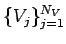 inputted to AERO-F in
Input.PODData. If Time.Form = Descriptor, the inner products are computed with respect to the matrix of cell volumes 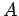 as follows
 On the other hand, if
On the other hand, if Time.Form = NonDescriptor, the inner products are computed with respect to the identity matrix 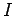 as follows
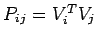
The data is loaded into AERO-F and the above inner products are computed using a strategy that optimizes the computational resources.
The resulting matrices 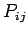 are outputted in Output.ROBInnerProduct.
GAMConstruction- Construction of a generalized aerodynamic and/or aerodynamic force matrix or a set of them
(see Linearized and Postpro). When using this option, mode-id must be set to
Dimensional.
EigenAeroelastic- Complex eigenvalue analysis of a linearized aeroelastic system represented by a generalized aerodynamic force matrix.
When using this option, mode-id must be set to
Dimensional.
ROM- Construction of a fluid ROM, given a POD basis specified in
PODData (see Input), or time-domain ROM fluid simulation
in which the flow is expressed in a POD basis specified in PODData (see Input). See Linearized.
ROMAeroelastic- Construction of an aeroelastic ROM, or time-domain aeroelastic ROM simulation
in which the flow is expressed in a POD basis and the structure is represented by a truncated set
of its natural modes. See Linearized.
SteadySensitivityAnalysis- Computation
of the steady-state flow solution using the deformed mesh configuration
associated with the wall-boundary displacement inputted in
Input.InitialWallDisplacement,
and
computation of the gradients at this flow solution of aerodynamic design
criteria with respect to flow parameters such as the free-stream
conditions (Mach number, angle of attack, and
sideslip angle) and design variables such as shape design parameters
(see Sensitivities). This problem type can also be used to make AERO-F participate in the gradient-based
solution of a fluid optimization problem by providing the needed sensitivities.
SteadyAeroelasticSensitivityAnalysis- Computation
of a steady-state aeroelastic solution and the gradients at this
solution of aerodynamic design criteria with respect to flow parameters
such as the free-stream conditions
(Mach number, angle of attack, and sideslip angle) and design variables
such as shape design parameters (see Sensitivities). This problem type can also be used to make AERO-F participate
in the gradient-based solution of an aeroelastic optimization problem by providing the needed sensitivities.
SparseGridGeneration- Pre-computation and tabulation in the sparse grid format specified in SparseGrid of information specified in MultiPhase.
1D- One-dimensional explicit computation in spherical, cylindrical, or Cartesian coordinates of a spherically or cylindrically symmetric unsteady
single-phase or two-phase flow problem.
Aeroacoustic- Frequency-domain
computation using the Kirchhoff integral method of: (a) the
complex-valued acoustic pressure in the far-field at user-specified
locations,
and (b) the complex-valued far-field pattern of the acoustic pressure
field (see
Probes.Pressure).
mode-id [NonDimensional]:
NonDimensional- In this case, all input data is
interpreted as being for the non-dimensionalized variables, and all
solutions are outputted in non-dimensional form.
AERO-F non-dimensionalizes the computational input and variables as
follows:
- coordinates in x-, y- and z-directions:
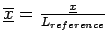
- time:
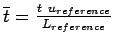
- density:
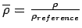
- velocity:
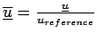
- pressure:
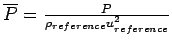
- temperature:
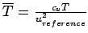
where the subscript 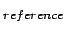 designates a reference value.
AERO-F computes
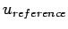 internally as follows. For a perfect gas,
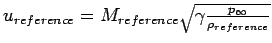
For a barotropic liquid,
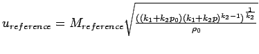
where 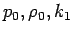 and 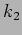
For a highly explosive gas modeled by the JWL equation of state,
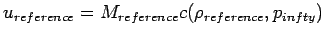
where 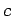 is the speed of sound.
are defined in LiquidModel .
(see ReferenceState).
Dimensional- Input parameters and output solutions are in dimensional form. This is the default
and only mode available for problems involving a structural code or a steady-state sensitivity analysis.
prec-id [NonPreconditioned]:
NonPreconditioned- The dissipation terms of the convective fluxes of the solution scheme are not preconditioned.
LowMach- The dissipation terms of
the convective fluxes of the solution scheme are equipped with the
low-Mach Turkel preconditioner. In this
case, if
Implicit.MatrixVectorProduct is set to Exact, it is automatically reset to Approximate. For
steady-state calculations, the inertia (or pseudo-time-derivative) terms can also be preconditioned (see Preconditioner)
if desired by making the request in the Time object (see Time).
framework-id [BodyFitted]:
BodyFitted- In this case, the CFD grid must be
body-fitted and the governing fluid equations are formulated in the
Arbitrary Lagrangian Eulerian setting which can handle both static
(fixed) and dynamic (moving and deforming) grids.
Embedded- In this case, the obstacle
must be embedded in the CFD grid, and the fluid equations are formulated
in the Eulerian setting and solved by an embedded boundary method for
CFD.
EmbeddedALE- In this case, the obstacle
must be embedded in the CFD grid, and the fluid equations are
formulated in the Arbitrary Lagrangian Eulerian (ALE) setting but solved
by an ALE embedded boundary method for CFD.
solvefluid-flag [On]:
This flag is only relevant for nonlinear problems.
On- In this case, the specified simulation is carried out as usual.
Off- In this case, only the component
of the simulation associated with the ALE mesh motion/deformation or
motion/deformation of embedded surfaces is carried out,
and therefore the flow solution is skipped. This option is useful only
for verifying, assessing, or debugging the mesh motion strategy and/or
algorithm chosen in MeshMotion
and the dynamics of embedded surfaces when framework-id =
Embedded or EmbeddedALE.
Notes:
- if a fluid is modeled as a stiffened gas, the flow computation must be performed in dimensional mode (mode-id =
Dimensional);
- explicit time-integration is not recommended for low-Mach flows for computational efficiency reasons;
- the
Embedded and EmbeddedALE frameworks are operational only if AERO-F was compiled and linked with the PhysBAM-Lite library.
4.2 DEFINING THE INPUT FILES
The several input files that are required by AERO-F are specified
within the Input object. Its syntax is:
under Input {
Prefix = prefix-str;
Connectivity = connectivity-str;
Geometry = geometry-str;
Decomposition = decomposition-str;
CpuMap = cpumap-str;
Matcher = matcher-str;
EmbeddedSurface = embeddedsurface-str;
WallDistance = walldistance-str;
GeometryPrefix = geometryprefix-str;
StrModes = strmodes-str;
InitialWallDisplacement = iniwalldisp-str;
ShapeDerivative = shapederivative-str;
PressureKirchhoff = pressurekirchhoff-str;
FilePackage = filepackage-str;
RestartData = restartdata-str;
Solution = solution-str;
Levelset = levelset-str;
FluidID = fluidid-str;
Position = position-str;
EmbeddedPosition = embeddedposition-str;
Cracking = cracking-str;
Perturbed = perturbsolution-str;
PODData = poddata-str;
under 1DRestartData { ... }
}
with
prefix-str [""]:
- String that is prefixed to all input file names. For example, if prefix-str
is set to
"data/" and connectivity-str is set to "wing.con",
AERO-F looks for a connectivity file named "data/wing.con".
connectivity-str [""]:
- Name of the binary connectivity file produced by the SOWER program.
geometry-str [""]:
- Name of the binary geometry file produced by the SOWER program. However if
Problem.Type = 1D,
this becomes the name of the ASCII file storing a one-dimensional grid in the following format:
number_of_nodes_in_the_grid
distance_of_node_1_to_the_center_of_the_sphere
distance_of_node_2_to_the_center_of_the_sphere
.
.
.
distance_of_last_node_to_the_center_of_the_sphere
decomposition-str [""]:
- Name of the binary decomposition file produced by the SOWER program.
cpumap-str [""]:
- Name of the ASCII CPU map file produced by the SOWER program.
matcher-str [""]:
- Name of the binary matcher file produced by the MATCHER program
(required for simulations involving a structural code).
embeddedsurface-str [""]:
- Name of the ASCII file describing in the XPost
format a discrete representation of a surface to be embedded in the
CFD grid, and around/or within which the flow is to be computed. The
embedded discrete surface must be made of 3-noded triangles,
and/or 4-noded quadrilaterals. If it is closed, its elements must be
defined such that their normals are outward to the medium
they enclose.
walldistance-str [""]:
- Name of the binary distance-to-the-wall file. This file is required
for turbulent flow simulations performed with the one-equation
Spalart-Allmaras turbulence model or the DES method (see TurbulenceModel). This
file contains for every mesh point its distance to the closest solid
wall. This distance is used in the Spalart-Allmaras turbulence model
in order to provide the correct asymptotic behavior of the turbulence
variable in the near wall regions. The ASCII XPost version of
this file is always produced when the software CD2TET is
used. The conversion into binary format can be performed with the
SOWER software (see Hints_and_tips).
geometryprefix-str [""]:
- This entry specifies the prefix name for all of the files
describing the connectivity, geometry, decomposition, CPU map,
distance-to-the-wall
(when the Spalart-Allmaras turbulence model or the DES method is
employed) generated by SOWER for a given fluid mesh.
Hence, specifying geometryprefix-str is equivalent (and therefore an alternative) to specifying all of
connectivity-str, geometry-str, decomposition-str, cpumap-str, and walldistance-str (when applicable). If any one
of these members is specified simultaneously with geometryprefix-str, its value takes precedence over that implied by geometryprefix-str.
strmodes-str [""]:
- Name of the binary file containing the initial position of the fluid mesh, a set of natural structural frequencies, and the
set of fluid mesh positions compatible with the corresponding set of natural structural modes. This information is required here
if the computation and output of the corresponding generalized forces is requested in the object
Postpro (see Postpro).
iniwalldisp-str [""]:
- Name of the binary file containing an initial displacement of the wall boundary of the CFD mesh, relative to its
undeformed position. In this case, AERO-F automatically updates the position of the interior nodes of the CFD mesh accordingly,
before any flow computation is performed. For this reason, a mesh motion scheme (see MeshMotion) must also be specified in the ASCII Input Command Data file.
If both members
Input.Position and Input.InitialWallDisplacement are specified in this file,
then Input.InitialWallDisplacement member is ignored.
shapederivative-str [""]:
-
- If the simulation is performed using the body-fitted framework (
Problem.Framework = BodyFitted), this member specifies
the name of the binary file containing 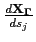 , the derivatives of the CFD mesh position 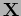 with respect to a number of
shape design variables 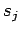 at the fluid/structure boundary 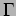 (see SensitivityAnalysis and Sensitivities). In this case, this information is generated as follows.
First, the following XPost-type ASCII file is created. This file starts with an XPost-like header (see below), followed by the total
number of grid points in the CFD mesh (and not the number of fluid grid points on the fluid/structure interface).
Next, the information  is specified in this ASCII file
for each shape design parameter , one parameter at a time, in block form. First, the index 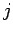 of is
specified on a separate line starting from 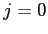 (zero). Then, all grid points
of the CFD mesh are considered in the same ordering as that adopted in the corresponding XPost geometry file.
On each line corresponding to grid point 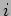 , the derivatives 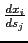 , 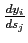 , and 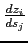
(where 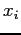 , 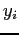 , and
is specified in this ASCII file
for each shape design parameter , one parameter at a time, in block form. First, the index 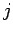 of is
specified on a separate line starting from 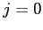 (zero). Then, all grid points
of the CFD mesh are considered in the same ordering as that adopted in the corresponding XPost geometry file.
On each line corresponding to grid point 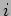 , the derivatives 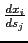 , 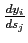 , and 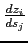
(where 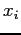 , 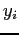 , and  denote the coordinates of the grid point ) are provided. If the grid point is an “interior”
point, these derivatives are set to zero. An example of the ASCII file described above is given below.
denote the coordinates of the grid point ) are provided. If the grid point is an “interior”
point, these derivatives are set to zero. An example of the ASCII file described above is given below.
Vector <file name> under load for FluidNodes
<vector size = total number of grid points in the CFD mesh>
0
0.000000 0.000000 0.000000
. . .
. . .
. . .
dx_i/ds_0 dy_i/ds_0 dz_i/ds_0
. . .
. . .
. . .
0.000000 0.000000 0.000000
1
0.000000 0.000000 0.000000
. . .
. . .
. . .
dx_i/ds_1 dy_i/ds_1 dz_i/ds_1
. . .
. . .
. . .
0.000000 0.000000 0.000000
2
0.000000 0.000000 0.000000
. . .
. . .
. . .
dx_i/ds_2 dy_i/ds_2 dz_i/ds_2
. . .
. . .
. . .
Finally, SOWER is applied to the ASCII file described above together with the mesh partition generated for the CFD mesh to obtain the binary distributed file shapederivative-str.
- If however the simulation is performed using the embedded framework (
Problem.Framework = Embedded), this member specifies the name of the ASCII file containing
, the derivatives of the embedded discrete surface position with respect to a number of shape design variables (see SensitivityAnalysis and Sensitivities).
This ASCII file starts with an XPost-like header (see below), followed by the number
of grid points defining the embedded discrete surface. Next, the information is inputted in this ASCII file for each shape design parameter , one parameter at a time, in block form.
First, the index of is specified on a separate line starting from
(zero). Then, all grid points defining the embedded discrete surface
are considered in the same ordering as that adopted in the
XPost geometry file of the embedded discrete surface. On each line corresponding to grid point , the derivatives , , and
(where , , and denote the coordinates of the grid point ) are provided.
Vector <file name> under load for EmbeddedSurfaceNodes
<vector size = total number of grid points on the embedded discrete surface>
0
0.000000 0.000000 0.000000
. . .
. . .
. . .
dx_i/ds_0 dy_i/ds_0 dz_i/ds_0
. . .
. . .
. . .
0.000000 0.000000 0.000000
1
0.000000 0.000000 0.000000
. . .
. . .
. . .
dx_i/ds_1 dy_i/ds_1 dz_i/ds_1
. . .
. . .
. . .
0.000000 0.000000 0.000000
2
0.000000 0.000000 0.000000
. . .
. . .
. . .
dx_i/ds_2 dy_i/ds_2 dz_i/ds_2
. . .
. . .
. . .
pressurekirchhoff-str [""]:
- Name of the binary file containing the traces on a
user-defined internal "Kirchhoff" surface of a time-history of an
unsteady pressure field computed during a previous
AERO-F simulation. This input file is required for performing an aeroacoustic analysis in the frequency-domain (see
Problem.Type = Aeroacoustic).
filepackage-str [""]:
- Name of the ASCII file obtained from a previous simulation from which AERO-F starts and containing the links to the restart files
Solution, Position, LevelSet, FluidID, Cracking, and RestartData. Hence, when restarting a simulation that has created restart data
for Solution, Position, LevelSet, FluidID, Cracking, and RestartData, this file can be specified in this object
in lieu of all of the Solution, Position, LevelSet, FluidID, Cracking, and RestartData files.
restartdata-str [""]:
- Name of the ASCII restart file obtained from a previous simulation. This file
allows AERO-F to continue a simulation that was successfully
completed or was for some reason interrupted (see Restart and in particular
the variable
Restart.RestartData).
solution-str [""]:
- Name of the binary solution (i.e. conservative variables) file obtained from a previous
simulation from which AERO-F starts. If this file is not specified,
AERO-F starts from a uniform flow (see Restart) and in particular
the variable
Restart.Solution).
levelset-str [""]:
- This information is relevant only for multi-phase flow problems (see MultiPhase).
Name of the binary file obtained from a previous multi-phase flow simulation from which AERO-F starts
and containing the nodal level set values. If this file is not specified, AERO-F starts from the initial solution
specified in InitialConditionsMultiPhase.
fluidid-str [""]:
- This information is relevant only for multi-phase flow problems (see MultiPhase).
Name of the binary file obtained from a previous multi-phase flow simulation from which AERO-F starts
and containing the nodal fluid ID values (see Box, Plane, Point, Sphere, VolumeData).
position-str [""]:
- Name of the binary file containing the position (i.e. x,y,z
node coordinates) of the mesh as outputted during a previous simulation
and from which AERO-F is to start
(see Restart and in particular the variable
Restart.Position). If this file is not specified, AERO-F starts from the mesh position stored in geometry-str.
embeddedposition-str [""]:
- Name of the ASCII file containing the position (i.e. x,y,z
node coordinates) of the embedded discrete surface as outputted during a
previous
simulation and from which AERO-F is to start (see Restart and in particular the variable
Restart.EmbeddedPosition).
If this file is not specified, AERO-F starts from the position of the embedded discrete surface stored in embeddedsurface-str.
cracking-str [""]:
- Name of the binary file obtained from a previous simulation
and containing information about cracking in a fluid-structure
computation involving cracking of the structure. It can be specified
only when using AERO-F's embedded boundary method for CFD — that is, the computational framework is set to
Embedded in Problem.Framework.
perturbsolution-str [""]:
- Name of the binary file containing a perturbed flow
solution needed for linearized flow calculations. This file can be
generated,
for example, by running AERO-F or AERO-S with
one perturbed parameter. For full-order calculations, this parameter can
be
any reasonable input parameter. For reduced-order computations, only a
parameter
such as the displacement of the body which pertains to the sources of
excitations used to construct the ROM should be considered. AERO-FL
computes the initial perturbation in the flow as the difference between
this flow solution and
the equilibrium flow solution that must be specified in
Input.Solution (see Input).
If this file is not specified, the initial perturbation is set to 0.
poddata-str [""]:
- Except when
Problem.Type = PODInterpolation or Problem.Type = ROBInnerProduct,
this is the name of the binary file containing a set of POD basis vectors
that could have been generated by AERO-FL (see Linearized) in a previous run where
the Problem.Type was set to PODConstruction. When Problem.Type = PODInterpolation,
poddata-str is the name of the text file specifying the
number of precomputed POD bases to be interpolated, the names of the
binary files containing each one of these bases,
their respective Mach numbers and angles of attack, and the Mach number
and angle of attack at which interpolation is desired.
The format of this text file is examplified below.
Example:
3
PODData.d/podVecs4.freq0.499.2_4.df5e3.30snap.100pod
PODData.d/podVecs4.freq0.520.2_6.df5e3.30snap.100pod
PODData.d/podVecs4.freq0.700.2_5.df5e3.30snap.100pod
0.499 0.520 0.700
0.550
2.4 2.6 2.5
2.45
The first line specifies the number of precomputed POD bases to
be interpolated. Each of the following three lines
specifies the path and name of the file containing a precomputed POD
basis to be interpolated. The following line specifies
the three Mach numbers at which the POD bases to be interpolated are
precomputed, in the order in which these bases are specified.
The next line specifies the interpolation Mach number. The following
line specifies the three angles of attack
at which the POD bases to be interpolated are precomputed, in the order
in which these bases are specified.
The last line specifies the interpolation angle of attack. When Problem.Type = ROBInnerProduct, poddata-str is the name of
the text file specifying the number of precomputed Reduced-Order Bases (ROBs) whose inner products are to be computed when Problem.Type = ROBInnerproduct,
the maximum number of these ROBs to be loaded into memory at a time, and
the names of the binary files containing each one of these ROBs.
The format of this text file is examplified below.
Example:
numFiles-int maxLoadFiles-int
ROB1File-str
ROB2File-str
...
where numFiles-int denotes the number of ROB files listed starting on the second line of the file poddata-str,
maxLoadFiles-int denotes the maximum number of ROB files to be loaded in memory at a time, ROB1File-str is the (path and) name of the file
containing the first ROB, ROB2File-str the (path and) name of the file containing the second ROB, etc.
1DRestartData:
- Allows the local initialization of a three-dimensional flow computation with the results of a spherically
symmetric one-dimensional unsteady two-phase flow explicit computation.
Notes:
- as mentioned in the SOWER manual, there is no need to specify
the ending number for the binary files;
- if the name of the input files
Solution, Position, RestartData, or 1DRestartData starts by a slash (/), the variable Prefix
is not used for these files.
4.2.1 INITIALIZING A 3D SIMULATION LOCALLY WITH 1D SPHERICALLY SYMMETRIC DATA
The 1DRestartData object initializes a three-dimensional, dimensional flow computation locally with the results of a
spherically symmetric one-dimensional, unsteady, dimensional single-phase or two-phase flow explicit computation identified by a simulation
tag 1Dsimulation-id-int.
The syntax of this object is:
under 1DRestartData[1Dsimulation-id-int] {
File = file-str;
X0 = x0-real;
Y0 = y0-real;
Z0 = z0-real;
under FluidIDMap{ ... }
}
with
file-str [""]:
- Name of the ASCII file containing the results of a previously performed spherically symmetric one-dimensional
unsteady single-phase or two-phase explicit flow computation. It is generated by the aforementioned previously performed simulation and outputted
using
Restart.Solution. It is also subject to Restart.Prefix.
x0-real [0.0]:
- x-coordinate of the center of the spherical region where
the flow is to be initialized by the spherically symmetric results
stored in file-str.
y0-real [0.0]:
- y-coordinate of the center of the spherical region where
the flow is to be initialized by the spherically symmetric results
stored in file-str.
z0-real [0.0]:
- z-coordinate of the center of the spherical region where
the flow is to be initialized by the spherically symmetric results
stored in file-str.
FluidIDMap:
This object can be used to map the fluid identification integers of a one-dimensional two-phase flow simulation to
those of the three-dimensional flow computation locally initialized by the results of that one-dimensional simulation.
Note:
- when re-starting a simulation whose input file contained this
object, the re-start input file should also contain (again) this object:
in this case,
this object will not be used to initialize the fluid state vector which
instead will be initialized by the Restart object, but to provide
AERO-F with the information necessary for recognizing a two-phase simulation;
4.2.1.1 MAPPING A SET OF FLUID IDENTIFICATION TAGS TO ANOTHER ONE
The FluidIDMap object can be used to map the fluid identification integers of a one-dimensional two-phase flow simulation identified by
its simulation tag 1Dsimulation-id-int to those of the three-dimensional flow computation locally initialized by the results of that one-dimensional simulation.
The syntax of this object is:
under FluidIDMap[FluidIDDonor-int] {
FluidIDReceptor = fluidIDreceptor-int;
}
with
fluidIDreceptor [—]:
- Integer identifying the fluid medium to be initialized using data from the fluid medium identified in the spherically
symmetric one-dimensional two-phase flow simulation by the integer FluidIDDonor-int.
4.3 GENERATING A ONE-DIMENSIONAL SPHERICALLY SYMMETRIC GRID
The 1DGrid object allows the user to generate in AERO-F a uniform, one-dimensional grid for a spherically
or cylindrically symmetric, multi-phase, dimensional problem instead of inputting it in Input.Geometry, and specify
the coordinate system in which
to solve this problem. The first point of this grid is always located at the origin of the
coordinate system. Using 1DRestartData, the flow results obtained on this grid can be applied in a spherical region
of a three-dimensional domain centered at an arbitrary point.
The syntax of this object is:
under 1DGrid {
NumberOfPoints = numberofpoints-int;
Radius = radius-real;
Coordinates = coordinates-id;
}
with
numberofpoints [0]:
- Number of grid points to be generated.
radius-real [0.0]:
- radius of the spherical region to be represented by a one-dimensional grid.
coordinates-id [Spherical]:
Spherical- In this case, the spherically symmetric one-dimensional multi-phase flow problem is solved in spherical coordinates.
Cylindrical- In this case, the cylindrically symmetric one-dimensional multi-phase flow problem is solved in cylindrical coordinates.
Cartesian- In this case, the
spherically or cylindrically symmetric one-dimensional multi-phase flow
problem is solved in Cartesian coordinates.
4.4 DEFINING THE OUTPUT FILE
The Output object mainly defines the name of the files used for
post-processing (see the SOWER manual) and restart purposes.
The output information requested by the object Probes is typically generated
in an ASCII format. That requested by all other objects within the Output object is almost always generated
in a binary format; therefore, its exploitation requires post-processing by SOWER
(see SOWER's User's Reference Manual).
The syntax of this object is:
under Output {
under Postpro { ... }
under Probes { ... }
under Restart { ... }
}
Postpro:
- Specifies the computational results to output.
Probes:
- Specifies data to output at every time-step of an AERO-F computation in the time-domain, or every sampled frequency of an AERO-F computation in the frequency-domain.
Restart:
- Specifies the data to be saved for possible restart later.
4.4.1 EXPLOITING THE COMPUTATIONAL RESULTS
The syntax of the Postpro object is:
under Postpro {
Prefix = prefix-str;
Frequency = frequency-int;
Density = density-str;
TavDensity = tavdensity-str;
Mach = mach-str;
TavMach = tavmach-str;
HWTMach = hwtmach-str;
Pressure = pressure-str;
TavPressure = tavpressure-str;
DeltaPressure = deltapressure-str;
HydroStaticPressure = hydrostaticpressure-str;
HydrodynamicPressure = hydrodynamicpressure-str;
Temperature = temperature-str;
TavTemperature = tavtemperature-str;
TemperatureNormalDerivative = tempnormder-str;
HeatFluxPerUnitSurface = heatfluxus-str;
HeatFlux = heatflux-str;
TotalPressure = totalpressure-str;
TavTotalPressure = tavtotalpressure-str;
LiftandDrag = liftanddrag-str;
TavLiftandDrag = tavliftanddrag-str;
Vorticity = vorticity-str;
TavVorticity = tavvorticity-str;
NuTilde = nutilde-str;
K = k-str;
Eps = eps-str;
EddyViscosity = eddyviscosity-str;
DeltaPlus = deltaplus-str;
CsDLES = csdles-str;
TavCsDLES = tavcsdles-str;
CsDVMS = csdvms-str;
TavCsDVMS = tavcsdvms-str;
MutOverMu = mutomu-str;
SkinFriction = skinfriction-str;
TavSkinFriction = tavskinfriction-str;
Velocity = velocity-str;
TavVelocity = tavvelocity-str;
VelocityMagnitude = velocitymagnitude-str;
HWTVelocityMagnitude = hwtvelocitymagnitude-str;
Displacement = displacement-str;
ModalDisplacement = modaldisplacement-str;
GeneralizedDisplacement = generalizeddisplacement-str;
TavDisplacement = tavdisplacement-str;
FlightDisplacement = fldisplacement-str;
LocalFlightDisplacement = lfldisplacement-str;
Force = force-str;
GeneralizedForce = generalizedforce-str;
TavForce = tavforce-str;
HydroStaticForce = hydrostaticforce-str;
HydroDynamicForce = hydrodynamicforce-str;
Residual = residual-str;
TimeInterval = timeinterval-real;
Length = length-real;
Surface = surface-real;
XM = xm-real;
YM = ym-real;
ZM = zm-real;
PODData = poddata-str;
ROBInnerProduct = robinnerproduct-str;
AeroelasticEigenvalues = aeroelasticeigenvalues-str;
ROM = rom-str;
ROMInitialCondition = rominitialcondition-str;
Philevel = philevel-str;
FluidID = fluidID-str;
StateVector = statevector-str;
StateVectorSensitivity = statevectorsensitivity-str;
DensitySensitivity = densitysensitivity-str;
MachSensitivity = machsensitivity-str;
TemperatureSensitivity = temperatursensitivity-str;
PressureSensitivity = pressuresensitivity-str;
TotalPressureSensitivity = totalpressuresensitivity-str;
VelocitySensitivity = velocitysensitivity-str;
DisplacementSensitivity = displacementsensitivity-str;
ForceSensitivity = forcesensitivity-str;
LiftandDragSensitivity = liftanddragsensitivity-str;
GAMData = gamdata-str;
GAMFData = gamfdata-str;
SparseGrid = sparsegrid-str;
MaterialVolumes = matvols-str;
BubbleRadius = bubbleradius-str;
CPUTiming = cputiming-str;
}
with
prefix-str [""]:
- String that is prefixed to all post-processing file names.
frequency-int [0]:
- The frequency (every so many time-iteration) at which the output files are
written. If the frequency is set to zero, the output files are only written at
the last time-iteration. When the frequency is set to a nonzero value, the output
files are also written at the last time-iteration.
density-str [""]:
- Name of the binary file that contains the sequence of nodal density values.
tavdensity-str [""]:
- Name of the binary file that contains the sequence of
time-averaged nodal density values (useful particularly in LES
simulations).
mach-str [""]:
- Name of the binary file that contains the sequence of nodal Mach number values.
hwtmach-str [""]:
- Name of the binary file that contains the sequence of nodal “hybrid wind tunnel” (see Accelerated and Figure HWT)
Mach number values (relevant only for accelerated or decelerated flow simulations).
The hybrid wind tunnel Mach number is defined as the Mach number based on the difference between the
local velocity and the ALE (moving) grid velocity — that is, the relative Mach number with respect to the ALE frame.
tavmach-str [""]:
- Name of the binary file that contains the sequence of
time-averaged nodal Mach number values (useful particularly in LES
simulations).
pressure-str [""]:
- Name of the binary file that contains the sequence of nodal pressure values. If gravity-real and depth-real have nonzero values (see Hydro),
then the pressure values are the sum of the hydrostatic and hydrodynamic pressure values.
pressurecoefficient-str [""]:
- Name of the binary file that contains the sequence of nodal pressure coefficient values.
These are defined in AERO-F only when the fluid is modeled as a perfect gas.
If for some reason gravity-real and depth-real have
nonzero values (see Hydro), then the pressure values used for this output are the sum of the hydrostatic
and hydrodynamic pressure values.
tavpressure-str [""]:
- Name of the binary file that contains the sequence of
time-averaged nodal pressure values (useful particularly in LES
simulations).
hydrostaticpressure-str [""]:
-
Name of the binary file that contains the sequence of nodal hydrostatic pressure ( 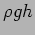 ) values.
hydrodynamicpressure-str [""]:
- Name of the binary file that contains the sequence of nodal hydrodynamic pressure values.
deltapressure-str [""]:
- Name of the binary file that contains the sequence of
pressure variations with respect to the free-stream pressure (useful
particularly for Low-Mach simulations).
temperature-str [""]:
- Name of the binary file that contains the sequence of nodal temperature values.
tavtemperature-str [""]:
- Name of the binary file that contains the sequence of
time-averaged nodal temperature values (useful particularly in LES
simulations).
tempnormder-str [""]:
- Name of the binary file that contains the sequence of temperature normal derivative ( 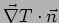 ) nodal values
for (moving) isothermal wall boundaries and zero elsewhere.
heatfluxus-str [""]:
- Name of the binary file that contains the sequence of heat flux per unit surface ( 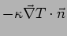 ) nodal values
for (moving) isothermal wall boundaries and zero elsewhere.
heatflux-str [""]:
- Name of the ASCII file that contains for all the time-steps:
- the time-step number;
- the physical time;
- the subcycling factor;
- the number of Newton iterations;
- the heat flux exchanged through (moving) isothermal wall boundaries ( 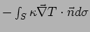 ).
totalpressure-str [""]:
- Name of the binary file that contains the sequence of nodal total pressure values.
tavtotalpressure-str [""]:
- Name of the binary file that contains the sequence of
time-averaged nodal total pressure values (useful particularly in LES
simulations).
liftanddrag-str [""]:
- Name of the ASCII file that contains for all the time-steps:
- the time-step number;
- the physical time;
- the subcycling factor;
- the number of Newton iterations;
- the drag, which is the force in the direction parallel to the free-stream
velocity;
- the lift, which is defined here as the force in the direction orthogonal
to the vector defined by the sideslip angle in the x-y plane;
- the lift, which is defined here as the force in the direction orthogonal
to the vector defined by the
angle of attack in the x-z plane.
tavliftanddrag-str [""]:
- Name of the ASCII file that contains for all the time-steps:
- the time-step number;
- the physical time;
- the subcycling factor;
- the number of Newton iterations;
- the time-averaged drag, which is the force in the direction parallel to
the free-stream velocity;
- the time-averaged lift, which is defined here as the force in the
direction orthogonal to the vector defined by the sideslip angle in the x-y plane;
- the time-averaged lift, which is defined here as the force in the
direction orthogonal to the vector defined by the
angle of attack in the x-z plane.
vorticity-str [""]:
- Name of the binary file that contains the sequence of nodal vorticity values.
tavvorticity-str [""]:
- Name of the binary file that contains the sequence of
time-averaged nodal vorticity values (useful particularly for LES
simulations).
nutilde-str [""]:
-
Name of the binary file that contains the sequence of nodal 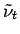
(field variable in the Spalart-Allmaras turbulence model) values.
k-str [""]:
-
Name of the binary file that contains the sequence of nodal 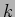 (turbulent kinetic energy in the 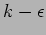 model) values.
eps-str [""]:
- Name of the binary file that contains the sequence of nodal
 (turbulent kinetic energy dissipation rate in the
model) values.
(turbulent kinetic energy dissipation rate in the
model) values.
eddyviscosity-str [""]:
- Name of the binary file that contains the sequence of nodal eddy viscosity values.
deltaplus-str [""]:
- Name of the binary file that contains the sequence of nodal non-dimensional
wall distance values (only available if a wall function is used, see Wall).
csdles-str [""]:
-
Name of the binary file that contains the sequence of nodal values of the dynamic Smagorinski
coefficient 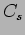 computed during a dynamic LES simulation.
tavcsdles-str [""]:
-
Name of the binary file that contains the sequence of time-averaged nodal values of the dynamic Smagorinski
coefficient computed during a dynamic LES simulation.
csdvms-str [""]:
-
Name of the binary file that contains the sequence of nodal values of the dynamic Smagorinski
coefficient 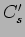 computed during a dynamic VMS-LES simulation.
tavcsdvms-str [""]:
-
Name of the binary file that contains the sequence of time-averaged nodal values of the dynamic Smagorinski
coefficient computed during a dynamic VMS-LES simulation.
mutomu-str [""]:
- Name of the binary file that contains the sequence of nodal values of the ratio of turbulent viscosity and molecular viscosity
(available for all turbulence simulations except VMS-LES).
skinfriction-str [""]:
- Name of the binary file that contains the sequence of nodal values of the skin friction coefficient.
tavskinfriction-str [""]:
- Name of the binary file that contains the sequence of time-averaged nodal values of the skin friction coefficient.
velocity-str [""]:
- Name of the binary file that contains the sequence of nodal velocity vectors.
tavvelocity-str [""]:
- Name of the binary file that contains the sequence of
time-averaged nodal velocity vectors (useful particularly for LES
simulations).
velocitymagnitude-str [""]:
- Name of the binary file that contains the sequence of nodal
velocity magnitudes (useful particularly for low-Mach multi-phase
simulations).
hwtvelocitymagnitude-str [""]:
- Name of the binary file that contains the sequence of nodal “hybrid wind tunnel” (see Accelerated
and Figure HWT) velocity magnitudes
(relevant only for accelerated or decelerated flow simulations). The
hybrid wind tunnel velocity magnitude is defined as the magnitude
of the difference between the velocity and the speed of the accelerating
or decelerating moving grid — that is, the magnitude of the
relative velocity with respect to the ALE frame.
displacement-str [""]:
- Name of the binary file that contains the sequence of nodal displacement vectors.
modaldisplacement-str [""]:
- Name of the ASCII file that contains the sequence of modal
displacements obtained during a linearized flow or aeroelastic
computation.
generalizeddisplacement-str [""]:
- Name of the ASCII file that contains the sequence of
generalized displacements (generalized coordinates associated with a
structural Reduced-Order Basis (ROB))
obtained during a linearized aeroelastic or aeroelastic ROM computation.
tavdisplacement-str [""]:
- Name of the binary file that contains the sequence of
time-averaged nodal displacement vectors (useful particularly in LES
simulations).
fldisplacement-str [""]:
-
Name of the binary file that contains the sequence of nodal flight
displacement vectors. For accelerated flight and landing gear
simulations,
the flight displacement is defined as the difference between the usual
mesh displacement and the product 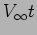
where 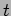 denotes time — that is, the displacement with respect to a frame moving at the free-stream velocity.
lfldisplacement-str [""]:
- Name of the binary file that contains the sequence of nodal local flight displacement vectors. For accelerated flight,
the local flight displacement is defined as the difference between the usual mesh displacement and the rigid body displacement
associated with the direction of acceleration — that is, the deformational component of the mesh displacement.
For landing flight simulations, it is defined as the difference between the usual
mesh displacement and the rigid body displacement in rolling direction.
force-str [""]:
- Name of the ASCII file that contains for all the time-steps:
- the time-step number;
- the physical time;
- the subcycling factor;
- the number of Newton iterations;
- the force in the x-direction;
- the force in the y-direction;
- the force in the z-direction;
- the moment along the x-direction;
- the moment along the y-direction;
- the moment along the z-direction;
- the energy transferred to the structure.
Note: if gravity-real and depth-real have nonzero values (see Hydro), then the force values are the sum of the hydrostatic and hydrodynamic force values.
generalizedforce-str [""]:
- Name of the ASCII file containing the generalized force(s) associated with the structural mode(s)
specified under the object
Input (see Input) or with the forced oscillation mode (which is not necessarily
a natural structural mode) specified or implied under the object Forced (see Forced), in the following format:
- the time-step number;
- the physical time;
- the subcycling factor;
- the number of Newton iterations;
- the generalized force associated with the first input mode shape;
- the generalized force associated with the second input mode shape;
- ... ;
- the generalized force associated with the last mode shape;
Note: when the simulation of a forced oscillation is specified under the object Forced (see Forced),
a requested generalized
force computation is performed with respect to the forced oscillation
“mode” (which is not necessarily a natural structural mode), unless
a set of natural structural modes are specified in StrModes under the object Input (see Input), in which case the
generalized forces are computed with respect to these specified natural structural modes.
tavforce-str [""]:
- (Useful particularly in LES simulations). Name of the ASCII file that contains for all the time-steps:
- the time-step number;
- the physical time;
- the subcycling factor;
- the number of Newton iterations;
- the time-averaged force in the x-direction;
- the time-averaged force in the y-direction;
- the time-averaged force in the z-direction;
- the time-averaged moment along the x-direction;
- the time-averaged moment along the y-direction;
- the time-averaged moment along the z-direction;
- the time-averaged energy transferred to the structure.
hydrostaticforce-str [""]:
- Name of the ASCII file that contains the components of the hydrostatic force in the x-, y-, and z-directions.
hydrodynamicforce-str [""]:
- Name of the ASCII file that contains for all the time-steps:
- the time-step number;
- the physical time;
- the subcycling factor;
- the number of Newton iterations;
- the hydrodynamic force in the x-direction;
- the hydrodynamic force in the y-direction;
- the hydrodynamic force in the z-direction;
- the hydrodynamic moment along the x-direction;
- the hydrodynamic moment along the y-direction;
- the hydrodynamic moment along the z-direction;
- the hydrodynamic energy transferred to the structure.
liftanddrag-str [""]:
- Name of the ASCII file that contains for all the time-steps:
- the time-step number;
- the physical time;
- the subcycling factor;
- the number of Newton iterations;
- the drag, which is the force in the direction parallel to the free-stream velocity;
- the lift, which is defined here as the force in the direction orthogonal to the vector defined by the
sideslip angle in the x-y plane;
- the lift, which is defined here as the force in the direction orthogonal to the vector defined by the
angle of attack in the x-z plane.
residual-str [""]:
- Name of the ASCII file that contains for all the time-steps:
- the time-step number;
- the elapsed time;
- the relative nonlinear residual;
- the CFL number.
timeinterval-real [ ]:
- This is an alternative option to frequency-int for specifying when to write
a result in an output file. Essentially, timeinterval-real is an output time-step
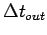 which controls the frequency at which the output files are written
as follows. Let 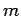 be a positive integer set initially to 0, and incremented by 1
after each output time-iteration is reached. Then, output is performed at
each time-iteration 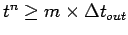 .
When timeinterval-real is specified to a strictly positive value, the output
files are always written at the last computed time-iteration. If both frequency-int
and timeinterval-real are specified, frequency-int is ignored.
length-real [1.0]:
- Reference length used in the computation of the moment coefficients.
surface-real [1.0]:
- Reference surface used in the computation of the force and moment coefficients.
xm-real [0.0]:
- x-coordinate of the point around which the moment coefficients are computed.
ym-real [0.0]:
- y-coordinate of the point around which the moment coefficients are computed.
zm-real [0.0]:
- z-coordinate of the point around which the moment coefficients are computed.
poddata-str [""]:
- Name of the binary file to contain the computed POD basis vectors which are always
output in non-dimensional form in order to be invariant with changes in altitude.
robinnerproduct-str [""]:
- Name of the ASCII file to contain the inner products computed between the Reduced-Order Bases (ROBs) specified in
Input.PODData when
Problem.Type = ROBInnerProduct. The format of this output file is examplified below.
Example:
ROB1Id-int ROB2Id-int
ROB1Id-1TimesROB2Id-1-real ROB1Id-1TimesROB2Id-2-real ...
ROB1Id-2TimesROB2Id-1-real ROB1Id-2TimesROB2Id-2-real ...
...
ROB2Id-int ROB3Id-int
ROB2Id-1TimesROB3Id-1-real ROB2Id-1TimesROB3Id-2-real ...
ROB2Id-2TimesROB3Id-1-real ROB2Id-2TimesROB3Id-2-real ...
...
where ROBiId-int and ROBjId-int identify the -th and -th ROBs in the file specified in Input.PODData, and
ROBiId-kTimesROBjId-l-real is the inner product 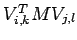 , where 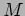 is the matrix of cell volumes if
Time.Form = Descriptor, and is the identify matrix if Time.Form = NonDescriptor.
aeroelasticeigenvalues-str [""]:
- Name of the ASCII file to contain: (a) the set of complex
eigenvalues and corresponding damping ratios computed for a linearized
aeroelastic system represented by a generalized aerodynamic force
matrix, and (b) information about the convergence of the underlying
nonlinear iterative eigenvalue solver. The format of this output file is
examplified below.
Example:
ModeIDnumber RealPartEigenValue ImaginaryPartEigenValue DampingRatio ConvergenceToSpecifiedPrecision (1 = yes, 0 = no)
ModeId-1-int RealPartLambda-1-real ImaginaryPartLambda-1-real DampingRatio-1-real ConvergenceStatus-1-int
ModeId-2-int RealPartLambda-2-real ImaginaryPartLambda-2-real DampingRatio-2-real ConvergenceStatus-2-int
...
where ModeId-1-int identifies the first aeroelastic eigen mode, RealPartLambda-1-real and ImaginaryPartLambda-1-real are the real and imaginary parts 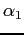
and 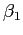 of the first aeroelastic eigenvalue, respectively, DampingRatio-1-real denotes the first aeroelastic damping ratio 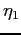 defined as
and ConvergenceStatus-1-int specifies whether the iterative solution algorithm converged (1) or not (0) for the first mode.
rom-str [""]:
- Name of ASCII file where to output in the format described in Appendix B (see ROM) the matrices defining a fluid or aeroelastic ROM.
rominitialcondition-str [""]:
- Name of ASCII file where to output for the fluid or aeroelastic ROM outputted itself in rom-str, the initial condition defined in Linearized.
The format of this file is as follows. The first line contains the
dimension of the ROM. Each subsequent line contains the initial
condition for the generalized
coordinate indexed by that line.
philevel-str [""]:
- Name of the binary file that contains the sequence of nodal level set values.
fluidID-str [""]:
- Name of the binary file that contains the sequence of nodal
integer values identifying the fluid media covering these nodes (see VolumeData and FluidModel).
statevector-str [""]:
- Name of the binary file that contains the sequence of nodal
fluid state vector values. These solution snapshots are always stored
as non-dimensional quantities.
In particular, they can be used to construct a POD basis (see Problem).
statevectorsensitivity-str [""]:
- Name of the binary file that contains the sequence of the
sensitivities of the nodal fluid state vector values with respect
to the specified variables. This output result is available only when
the direct method is chosen for performing the sensitivity analysis (
SensitivityAnalysis.Method = Direct).
densitysensitivity-str [""]:
- Name of the binary file that contains the sequence of
sensitivities of nodal density values with respect to specified
variables.
This output result is available only when the direct method is chosen
for performing the sensitivity analysis (
SensitivityAnalysis.Method = Direct).
machsensitivity-str [""]:
- Name of the binary file that contains the sequence of
sensitivities of nodal Mach number values with respect to specified
variables.
This output result is available only when the direct method is chosen
for performing the sensitivity analysis (
SensitivityAnalysis.Method = Direct).
temperaturesensitivity-str [""]:
- Name of the binary file that contains the sequence of
sensitivities of nodal temperature values with respect to specified
variables.
This output result is available only when the direct method is chosen
for performing the sensitivity analysis (
SensitivityAnalysis.Method = Direct).
pressuresensitivity-str [""]:
- Name of the binary file that contains the sequence of
sensitivities of nodal pressure values with respect to specified
variables. If gravity-real and depth-real have nonzero values (see Hydro),
the pressure values referred to here are those corresponding to the sum of the hydrostatic and hydrodynamic pressure values.
This output result is available only when the direct method is chosen for performing the sensitivity analysis (
SensitivityAnalysis.Method = Direct).
totalpressuresensitivity-str [""]:
- Name of the binary file that contains the sequence of
sensitivities of nodal total pressure values with respect to specified
variables.
This output result is available only when the direct method is chosen
for performing the sensitivity analysis (
SensitivityAnalysis.Method = Direct).
velocitysensitivity-str [""]:
- Name of the binary file that contains the sequence of
sensitivities of nodal velocity vectors with respect to specified
variables.
This output result is available only when the direct method is chosen
for performing the sensitivity analysis (
SensitivityAnalysis.Method = Direct).
displacementsensitivity-str [""]:
- This member is relevant only for simulations performed using the body-fitted framework (
Problem.Framework = BodyFitted).
In this case, it specified the name of the binary file that contains the
sequence of sensitivities of nodal displacement vectors with respect to
specified variables.
This output result is available only when the direct method is chosen
for performing the sensitivity analysis (SensitivityAnalysis.Method = Direct).
forcesensitivity-str [""]:
- Name of the ASCII file that contains the sequence of sensitivities of the aerodynamic forces and moments with respect
to specified variables, in the following format:
- the sensitivity analysis step number;
- the active specified variable: “1” for a shape parameter, “2” for the Mach number, “3” for the angle of attack, “4” for
the sideslip angle (see Inlet), and “5” for a structural thickness parameter specified in the input file of AERO-S;
- the force in the x-direction;
- the force in the y-direction;
- the force in the z-direction;
- the moment along the x-direction;
- the moment along the y-direction;
- the moment along the z-direction;
- sonic boom (currently not supported and therefore set to zero);
- the sensitivity of the force in the x-direction with respect to the specified variable;
- the sensitivity of the force in the y-direction with respect to the specified variable;
- the sensitivity of the force in the z-direction with respect to the specified variable;
- the sensitivity of the moment along the x-direction with respect to the specified variable;
- the sensitivity of the moment along the y-direction with respect to the specified variable;
- the sensitivity of the moment along the z-direction with respect to the specified variable;
- sensitivity of the sonic boom with respect to the specified variable (currently not supported and therefore set to zero).
This output result is available only when the direct method is chosen for performing the sensitivity analysis (SensitivityAnalysis.Method = Direct).
liftanddragsensitivity-str [""]:
- Name of the ASCII file that contains the sequence of
sensitivities of the lift and drag with respect to specified variables,
in the following format:
- the sensitivity analysis step number;
- the active specified variable: “1” for a shape parameter, “2” for the Mach number, “3” for the angle of attack, “4” for
the sideslip angle (see Inlet), and “5” for a structural thickness parameter specified in the input file of AERO-S;
- the drag, which is the force in the direction parallel to the free-stream velocity;
- the lift, which is defined here as the force in the direction
orthogonal to the vector defined by the sideslip angle in the x-y plane;
- the lift, which is defined here as the force in the direction
orthogonal to the vector defined by the angle of attack in the x-z
plane;
- the sensitivity of the drag with respect to the specified variable;
- the sensitivity of the lift, which is defined here as the force
in the direction orthogonal to the vector defined by the sideslip angle
in the x-y plane, with respect to the specified variable;
- the sensitivity of the lift, which is defined here as the force
in the direction orthogonal to the vector defined by the angle of
attack in the x-z plane, with respect to the specified variable;
This output result is available only when the direct method is chosen for performing the sensitivity analysis (SensitivityAnalysis.Method = Direct).
gamdata-str [""]:
- Name of the ASCII file that contains the computed set of generalized aerodynamic matrices. These are always outputted in the
format of the MSC Nastran OUTPUT4 command specified in the DMAP Programmer's Guide.
gamfdata-str [""]:
- Name of the ASCII file to contain the computed set of generalized aerodynamic force matrices (a generalized aerodynamic force
matrix is the product of the dynamic pressure and a generalized aerodynamic matrix). These are always
outputted in the format of the MSC Nastran OUTPUT4 command specified in the DMAP Programmer's Guide.
sparsegrid-str ["SparseGrid"]:
- Name of the ASCII file that contains computational data
tabulated in sparse grid format. If the tabulated data is to be stored
across multiple files,
sparsegrid-str is the common prefix to all these files whose names will be sparsegrid-strx, with x ranging from 1 to the number of files.
matvols-str [""]:
- Name of the ASCII file that contains the sequence of
volumes occupied by each fluid medium during a simulation. The format of
this file is as follows:
- the time-step number;
- the current time-instance;
- the volume occupied by the fluid medium whose ID is 0;
- the volume occupied by the fluid medium whose ID is 1;
- ...
- the volume occupied by the fluid medium whose ID is the highest;
- the volume occupied by the obstacle;
- the total volume of the computational domain.
bubbleradius-str [""]:
- Name of the ASCII file that contains the time-history of the radius of the spherical interface associated with a
one-dimensional explicit computation of a spherically symmetric unsteady two-phase flow problem (see Problem.
Type = 1D).
cputime-str [""]:
- Name of the ASCII file that contains a comprehensive report on the elasped CPU time associated with the performed simulation.
The information in this report is updated in a cumulative fashion at the frequency specified in frequency-int.
Notes:
- as mentioned in Problem, the output mode (non-dimensional or dimensional)
is governed by the variable
Problem.Mode;
- in the files containing the sensitivities of nodal flow
quantities with respect to specified variables (computed using the
direct method), the specific variables
are identified by tags: “1” for a shape parameter, “2” for the Mach
number, “3” for the main angle of attack,
“4” for the sideslip angle, and “5” for a structural thickness
parameter; the integer tag is placed before its corresponding result
set;
the results are outputted on a tag basis and for a given tag, on a node
basis; the sensitivities with respect to shape parameters are outputted
in the order
in which these parameters are specified in the file
Input.ShapeDerivative (see Input); the sensitivities with respect to structural parameters are
outputted in the order in which these parameters are specified in the input file of AERO-S;
- The binary sensitivity analysis result files can be post-processed
by SOWER and visualized by XPost as all other binary output results files.
4.4.2 PROBING NODAL RESULTS
The object Probes is used to request outputting, for every time-step of an AERO-F computation in the time-domain,
a specfified scalar or vector result, or for every sampled frequency of an AERO-F
computation in the frequency-domain,
a specified complex-valued scalar result. This result can be associated
with a specific node or location in the computational domain, in which
case it
is referred to here as the "probed" result, or can be independent from
any specific location in the computational domain. The current list of
scalar, vector,
and complex-valued scalar results supported by this object can be found
in the definition of its syntax given below. A spatial location where
the output is
desired is identified in an object such as Node1 within this object, whether this location coincides or not with a specific node of the CFD mesh.
The syntax of the object Probes is:
under Probes {
Prefix = prefix-str;
Density = density-str;
Pressure = pressure-str;
Temperature = temperature-str;
Velocity = velocity-str;
Displacement = displacement-str;
FarfieldPattern = farfieldpattern-str;
under Node1{ ... }
}
with
prefix-str [""]:
- String that is prefixed to all post-processing file names.
density-str [""]:
- Name of the ASCII file that contains for each time-step the
sequence of density values at the nodes or other locations identified
in an object of the type
Node1.
pressure-str [""]:
- If
Problem.Type = Aeroacoustic, name of the ASCII file that contains for each sampled frequency the sequence of far-field acoustic pressure
complex values and moduli at the nodes identified in an object of the type Node1. Otherwise, name of the ASCII file that contains for each time-step the
sequence of pressure values at the nodes identified in an object of the type Node1.
Node1.
temperature-str [""]:
- Name of the ASCII file that contains for each time-step the
sequence of temperature values at the nodes or other locations
identified in an object
of the type
Node1.
velocity-str [""]:
- Name of the ASCII file that contains for each time-step the
sequence of velocity vector values at the nodes or other locations
identified in an object
of the type
Node1.
displacement-str [""]:
- Name of the ASCII file that contains for each time-step the
sequence of displacement vector values at the nodes or other locations
identified in an object
of the type
Node1.
farfieldpattern-str [""]:
- Name of the ASCII file that contains for each sampled
frequency (and hence wave number) the far-field pattern of the acoustic
pressure field (in the far-field, the acoustic
pressure along an outgoing spherical wave varies as
where denotes the position of a point in a given space,
 the dimension of this space, the wave number, and the far-field pattern of
).
The format of this output result, which is not associated with any node
of the CFD mesh, is as follows (one line per sampled frequency):
the dimension of this space, the wave number, and the far-field pattern of
).
The format of this output result, which is not associated with any node
of the CFD mesh, is as follows (one line per sampled frequency):
[VECTOR_RESULT]
(1) identification number of a sampled frequency
(2) value of a sampled frequency
(3) Spherical angle alpha expressed in radians
(4) Spherical angle beta expressed in radians
(5) Real value of the far-field pattern of the acoustic pressure field
(6) Imaginary value of the far-field pattern of the acoustic pressure field
(7) Modulus of the far-field pattern of the acoustic pressure field
...
Each pair of spherical angles (alpha) and (beta) determines the direction
where the superscript
designates the transpose. The total number of output lines is equal
to the number of sampled frequencies, which is automatically set by AERO-F to
the number of snapshots of the traces on the user-defined internal "Kirchhoff" surface of the unsteady pressure field saved in Input.PressureKirchhoff plus one.
The total number of columns per outputted line is equal to ((AcousticPressure.Increment)/2+1)*(AcousticPressure.Increment).
Node1:
- Identification of a mesh node or other location in the computational domain where to probe computational results.
Notes:
- as mentioned in Problem, the output mode (non-dimensional or dimensional) is governed by the variable
Problem.Mode;
- all output files requested under this object are generated in an ASCII format;
- currently, the user can specify up to 50 nodes or other
locations in the computational domain where to probe scalar and/or
vector computational results;
- the ASCII format of an output file associated with a probed scalar result field is as follows (one line per time-step):
[SCALAR_RESULT]
(1) identification number of a time-step
(2) value of a physical time
(3) value of the specified scalar result at the node specified in Node1
(4) value of the specified scalar result at the node specified in Node2
...
- the ASCII format of an output file associated with a probed vector result or complex-valued scalar result field is as follows (one line per time-step or sampled frequency):
[VECTOR_RESULT]
(1) identification number of a time-step or sampled frequency
(2) value of a physical time or a sampled frequency
(3) value of the x-component of the specified vector result or real value of the specified complex-valued scalar result at the node specified in Node1
(4) value of the y-component of the specified vector result or imaginary value of the specified complex-valued scalar result at the node specified in Node1
(5) value of the z-component of the specified vector result or modulus of the specified complex-valued scalar result at the node specified in Node1
(6) value of the x-component of the specified vector result or real value of the specified complex-valued scalar result at the node specified in Node2
(7) value of the y-component of the specified vector result or imaginary value of the specified complex-valued scalar result at the node specified in Node2
(8) value of the z-component of the specified vector result or modulus of the specified complex-valued scalar result at the node specified in Node2
...
- the ASCII format of an output file associated with a scalar or
vector result field specified under this object but not associated with
neither a node nor a location in the computational domain
is given in the description of that result.
4.4.2.1 PROBING NODE
The object Node (with an integer appended to the last letter of this word) is used to identify
a node of the mesh or a location in the computational domain where to output a probed computational result.
The syntax of the object Node (with an integer appended to the last letter of this word) is:
under node-obj {
ID = id-int;
LocationX = locationx-real;
LocationY = locationy-real;
LocationZ = locationz-real;
}
with
id-int [—]:
- Global identification number (as in the XPost mesh file) of a node of the fluid mesh
at which a computational result is to be probed at each time-step of an AERO-F simulation.
locationX-real [—]:
- coordinate of a location in the computational domain at which a computational result is to be probed at each time-step of an AERO-F simulation.
locationY-real [—]:
- coordinate of a location in the computational domain at which a computational result is to be probed at each time-step of an AERO-F simulation.
locationZ-real [—]:
- coordinate of a location in the computational domain at which a computational result is to be probed at each time-step of an AERO-F simulation.
Note:
- currently, the user can specify up to 50 nodes or locations where to probe scalar and/or vector computational results;
- if at any point in time the chosen node or location in the
computational domain is covered by the obstacle, the computational
result at this probe is set to its free-stream value.
4.4.3 SAVING THE COMPUTATIONAL RESULTS FOR LATER
The Restart object specifies the name of the files that are written
during (if the value of Output.Restart.Frequency is different from zero) and
at the end of the computation. These files are only needed if one wishes to
restart AERO-F (see Input). The syntax of the Restart object is:
under Restart {
Prefix = prefix-str;
Frequency = frequency-int;
TimeInterval = timeinterval-real;
FilePackage = filepackage-str;
Solution = solution-str;
Position = position-str;
EmbeddedPosition = embeddedposition-str;
LevelSet = levelset-str;
FluidID = fluidid-str;
Cracking = cracking-str;
RestartData = restartdata-str;
PressureKirchhoff = pressurekirchhoff-str;
}
with
prefix-str [""]:
- String that is prefixed to all restart file names.
frequency-int [0]:
- The frequency (every so many time-iteration) at which all restart files, excluding
PressureKirchhoff, are
re-written (each save, except in the case of PressureKirchhoff, overwrites the previous one).
In the case of an aeroelastic or aerothermal simulation with the AERO-S code,
this value must be specified in the AERO-S input file.
timeinterval-real [ ]:
- This is an alternative option to frequency-int for specifying when to update
a restart file. Essentially, timeinterval-real is a restart update time-step
which controls the frequency at which the restart files are updated
as follows. Let be a positive integer set initially to 0, and incremented by 1
after each update time-iteration is reached. Then, the update of the restart files is performed at
each time-iteration .
When timeinterval-real is specified to a strictly positive value, the restart
files are always written at the last computed time-iteration. If both frequency-int
and timeinterval-real are specified, frequency-int is ignored. This option
is not recommended when performing a coupled-field simulation using also the AERO-S code.
filepackage-str ["DEFAULT.PKG"]:
- Name of the ASCII file containing the links to the restart files
Solution, Position, LevelSet, FluidID, Cracking, and RestartData.
Hence, when restarting a simulation that has created restart data for Solution, Position, LevelSet, FluidID, Cracking, and RestartData,
this file can be specified in Input.FilePackage in lieu of all of Input.Solution, Input.Position, Input.LevelSet, Input.FluidID,
Input.Cracking, and Input.RestartData.
solution-str ["DEFAULT.SOL"]:
- Name of the binary solution (i.e. conservative variables) file.
position-str ["DEFAULT.POS"]:
- Name of the binary position (i.e. x,y,z node coordinates) file.
This file is written if a “ping-pong” step, “modal ping-pong” step, aeroelastic, forced vibration, or accelerated flight
simulation is performed.
embeddedposition-str ["DEFAULT.EMBPOS"]:
- Name of the ASCII position (i.e. x,y,z node coordinates)
file of the embedded discrete surface. This file is written if a
“ping-pong” step, “modal ping-pong” step, aeroelastic, forced vibration,
or accelerated flight
simulation is performed.
levelset-str ["DEFAULT.LS"]:
-
Name of the binary file containing the “conservative” level set variable . This file can be specified
only for multi-phase flow simulations (see MultiPhase).
fluidid-str ["DEFAULT.FID"]:
- Name of the binary file containing the fluid ID (see Box, Plane, Point, Sphere, VolumeData) of each node of the CFD mesh. This file can be specified
only for multi-phase flow simulations (see MultiPhase).
cracking-str ["DEFAULT.CRK"]:
- Name of the binary file containing information necessary
for restarting a fluid-structure iteraction computation involving
cracking of the structure. This file can be specified
only when using AERO-F's embedded boundary method for CFD — that is,
Problem.Framework = Embedded.
restartdata-str ["DEFAULT.RST"]:
- Name of the ASCII restart file .
pressurekirchhoff-str [""]:
- Name of the binary file in which the traces on a
user-defined internal "Kirchhoff" surface of the unsteady pressure field
are saved in order to enable a subsequent
aeroacoustic analysis in the frequency-domain (see
Problem.Type = Aeroacoustic).
4.5 SPECIFYING THE ATTRIBUTES OF THE MESH SURFACES DEFINED IN THE COMPUTER-AIDED DESIGN MODEL
During the process of generating a fluid mesh from a computer-aided design model,
several surfaces can be defined and grouped according to a user-specified id number.
The Surfaces object specifies these surfaces in preparation for defining their attributes. It can also be used
to specify embedded surfaces for the same purpose. Its syntax is:
under Surfaces {
under SurfaceData[surface-id-int] { ... }
...
}
with
surface-id-int [None]:
- ID number of a surface or group of surfaces.
SurfaceData:
- Specifies the attributes of the mesh surfaces.
4.5.1 SPECIFYING THE ATTRIBUTES OF MESH OR EMBEDDED SURFACES
The SurfaceData object defines the attributes to be assigned to all boundary and internal surfaces commonly
identified by the specified tag surface-id-int. When the fluid is modeled as a perfect gas,
it can also be used to specify boundary conditions on tagged inlet and outlet surfaces or modify any default boundary
condition inputted under the BoundaryConditions object that affects such surfaces.
The syntax of this object is:
under SurfaceData[surface-id-int] {
BoundaryConditionID = boundarycondition-id-int;
Nx = Nx-real;
Ny = Ny-real;
Nz = Nz-real;
ComputeForces = computef-flag;
SeparateForces = separatef-flag;
ComputeHeatFlux = computehf-flag;
SeparateHeatFlux = separatehf-flag;
VelocityID = velocity-id-int;
ForcedVelocityID = forcedvelocity-id-int;
Type = type-id-;
Temperature = temp-real;
}
with
boundarycondition-id-int [None]:
- Attributes a set of boundary conditions defined in BoundaryData and identified by this specified integer ID number
to all boundary surfaces sharing the tag surface-id-int. Hence, this member can be used in particular to override the
default boundary conditions defined in BoundaryConditions on the boundary surfaces identified by surface-id-int.
Nx-real [0.0]:
- This information is relevant only when the target simulation involves mesh motion.
If at least one of the parameters Nx-real or Ny-real or Nz-real (see below)
is non zero, the tagged surface (or group of surfaces) is declared a sliding plane and
Nx-real specifies the value of the x-component of the normal to this sliding plane.
In this case, the nodes in the declared sliding plane are constrained to move within this plane — that is,
the component of their displacement field along the specified normal to the sliding plane is constrained
to zero. If the declared sliding plane is also a symmetry plane
and type-id of the
MeshMotion object is set to Corotational (see MeshMotion), the Symmetry object
must be specified within the MeshMotion object (see Symmetry).
Ny-real [0.0]:
- This information is relevant only when the target simulation involves mesh motion.
If at least one of the parameters Nx-real or Ny-real or Nz-real (see below)
is non zero, the tagged surface (or group of surfaces) is declared a sliding plane and
Ny-real specifies the value of the y-component of the normal to this sliding plane.
In this case, the nodes in the declared sliding plane are constrained to move within this plane — that is,
the component of their displacement field along the specified normal to the sliding plane is constrained
to zero. If the declared sliding plane is also a symmetry plane and type-id of the
MeshMotion object is set to
Corotational (see MeshMotion), the Symmetry object must be specified within the MeshMotion object (see Symmetry).
Nz-real [0.0]:
- This information is relevant only when the target simulation involves mesh motion.
If at least one of the parameters Nx-real or Ny-real or Nz-real (see below)
is non zero, the tagged surface (or group of surfaces) is declared a sliding plane and
Nz-real specifies the value of the z-component of the normal to this sliding plane.
In this case, the nodes in the declared sliding plane are constrained to move within this plane — that is,
the component of their displacement field along the specified normal to the sliding plane is constrained
to zero. If the declared sliding plane is also a symmetry plane
and type-id of the
MeshMotion object is set to Corotational (see MeshMotion),
the Symmetry object must be specified within the MeshMotion object (see Symmetry).
computef-flag [ ]:
True- In the absence of this command, and when requested under the
Output.Postpro object, AERO-F computes the
total aerodynamic forces (lift, drag, forces and moments, time-averaged counterparts, etc.) generated by all "moving" surfaces
except moving inlet and outlet boundaries. Setting this command to True adds to the total the contribution of the specified
tagged surface (or group of surfaces).
False- In the absence of this command, and when requested under the
Output.Postpro object, AERO-F computes the
total aerodynamic forces (lift, drag, forces and moments, time-averaged counterparts, etc.) generated by all "moving" surfaces
except moving inlet and outlet boundaries. Setting this command to False removes from the total the contribution of
the specified tagged surface (or group of surfaces).
separatef-flag [False]:
True- In this case, the aerodynamic forces (lift, drag, forces and moments, time-averaged counterparts, etc.) generated by the
tagged surface (or group of surfaces) are output in a separate file, assuming that such a result is requested under the
Output.Postpro object.
The name of each output file associated with the tagged surface (or
group of surfaces) is set to the filename of the corresponding
result specified under Output.Postpro with a postfix set to the surface id number.
False- In this case, the aerodynamic forces (lift, drag, forces and moments, time-averaged counterparts, etc.) generated by the
tagged surface (or group of surfaces) are not computed and output in a separate file.
computehf-flag [ ]:
True- In the absence of this command, and when requested under the
Output.Postpro object, AERO-F computes the
total heat flux through all “moving” isothermal wall boundaries. Setting this command to True adds to the total
the contribution of the specified tagged surface (or group of surfaces).
False- In the absence of this command, and when requested under the
Output.Postpro object, AERO-F computes the
total heat flux through all “moving” isothermal wall boundaries. Setting this command to False removes from the total
the contribution of the specified tagged surface (or group of surfaces).
separatehf-flag [False]:
True- In this case, the heat flux values through the tagged surface (or group of surfaces) are outputted in a separate file,
assuming that such a result is requested under the
Output.Postpro
object.
The name of each output file associated with the tagged surface (or
group of surfaces) is set to the filename of the corresponding
result specified under Output.Postpro with a postfix set to the surface id number.
False- In this case, the heat flux values through the tagged surface (or group of surfaces) are not outputted in a separate file.
velocity-id-int [None]:
- ID number of a prescribed velocity data-set including the
rotation or translation axis, the center of rotation, and the angular or
translational velocity (see Velocity, RotationAxis).
This option can be used to prescribe a constant flow velocity (or angular velocity)
on a translating or rotating surface, including an embedded surface. In
the case
of an aeroelastic computation, if the tagged surface is at the
fluid-structure interface, the prescribed flow velocity is superposed to
the velocity field transmitted at this interface.
forcedvelocity-id-int [None]:
- ID number of a prescribed velocity data-set including the
rotation or translation axis, the center of rotation, and the angular or
translational velocity (see Velocity, RotationAxis).
This option can be used to prescribe a constant velocity for a rotating or translating embedded surface. Hence, it is relevant only when
Problem.Framework = Embedded or EmbeddedALE.
type-id [ ]:
Adiabatic- In this case, the surface identified by the specified surface tag is treated as an adiabatic surface (wall).
Isothermal- In this case, the surface identified by the specified surface tag is treated as an isothermal surface (wall)
where the constant temperature is specified in
SurfaceData.Temperature (see below).
The default value of type-id is the value set in Wall.Type (see Wall).
temp-real [—]:
- Temperature of the surface identified by the specified surface tag if this surface is specified as an isothermal wall in
SurfaceData.Type (see above). Attention should be paid to inputting this temperature,
when desired, in the same system of units as that of the ideal gas constant R (see GasModel) and the remainder of the input file.
Note:
- if a boundary surface (or a set of them) identified by the integer ID tag surface-id-int is an inlet (outlet) boundary
surface and the fluid is modeled as a perfect gas, the default boundary conditions specified for this surface in Inlet
(Outlet) can be modified here on the surfaces whose integer ID tag is surface-id-int.
4.6 SPECIFYING ROTATIONAL AND TRANSLATIONAL VELOCITY FIELDS
Axes of rotation or translation are defined using this object to facilitate the prescription of:
- The flow velocity field of the CFD grid points lying on a rotating or translating surface (see Surfaces), including an embedded surface. In this case, this object
must be positioned at an independent location of the input file.
- The velocity field of an embedded surface. In this case, this object must be positioned inside the Forced object.
The syntax of this object is:
under Velocity{
under RotationAxis[rotation-id-int] { ... } ...
}
with
RotationAxis:
- Specifies rotational and translational velocity fields.
rotation-id-int [None]:
- ID number of a rotation or translation data-set.
4.6.1 SPECIFYING ROTATIONAL AND TRANSLATION VELOCITY FIELDS (CONTINUE)
The RotationAxis object defines the parameters of the specified rotation/translation data-set. Its syntax is:
under RotationAxis[rotation-id-int] {
Nx = Nx-real;
Ny = Ny-real;
Nz = Nz-real;
X0 = X0-real;
Y0 = Y0-real;
Z0 = Z0-real;
InfiniteRadius = infiniteradius-flag;
Omega = omega-real;
}
with
Nx-real [0.0]:
- The x-component of the normalized rotation axis or translation vector.
Ny-real [0.0]:
- The y-component of the normalized rotation axis or translation vector.
Nz-real [0.0]:
- The z-component of the normalized rotation axis or translation vector.
X0-real [0.0]:
- The x-coordinate of the center of rotation.
Y0-real [0.0]:
- The y-coordinate of the center of rotation.
Z0-real [0.0]:
- The z-coordinate of the center of rotation.
infiniteradius-flag [False]:
False- When this flag is set to
False, the vector specified above is interpreted as the normalized axis of rotation.
True- When this flag is set to
True, the vector specified above is interpreted as the normalized direction of translation.
omega-real [0.0]:
- When infiniteradius-flag is set to
False, omega-real is the angular velocity.
When infiniteradius-flag is set to True, omega-real becomes the magnitude of the translational velocity.
4.7 SPECIFYING THE ATTRIBUTES OF THE MESH VOLUMES DEFINED IN THE COMPUTER-AIDED DESIGN MODEL
During the process of generating a fluid mesh from a computer-aided design model,
several volumes (sets of mesh elements) can be defined and grouped according to a user-specified id number.
The Volumes object specifies these volumes in preparation for defining their attributes. Its syntax is:
under Volumes{
under VolumeData[volume-id-int] { ... }
...
}
with
volume-id-int [None]:
- ID number of a volume or group of volumes.
VolumeData:
- Specifies the attributes of the mesh volumes.
4.7.1 SPECIFYING THE ATTRIBUTES OF THE MESH VOLUMES
The VolumeData object specifies the attributes of a
region of the computational domain (subset of the mesh elements)
identified by the integer volume-id-int.
It can also be used to set the initial conditions for a flow simulation,
whether it involves a single or multiple fluids or a single-phase or
multi-phase computation.
The syntax of this object is:
under VolumeData[volume-id-int] {
Type = type-str;
FluidID = fluid-id-int;
under PorousMedium { ... }
under InitialState { ... }
}
with
type-str [Fluid]:
Fluid- Specifies that the volume identified by volume-id-int is occupied by a fluid. The fluid which initially occupies this volume is identified
by its integer identifcation number fluid-id-int; its material properties are set in FluidModel,
and its initial state is specified in InitialState.
Porous- Specifies that the volume identified by volume-id-int is occupied by a porous medium whose properties are described in the
PorousMedium object.
fluid-id-int [—]:
- Integer identification (ID) number of the fluid medium which initially occupies the volumic region identified by volume-id-int.
This is the same ID used in FluidModel to set the material properties of this fluid medium.
PorousMedium:
- Defines the properties of the porous medium occupying the volumic region of the computational domain
identified by volume-id-int if type-str is set to
PorousMedium.
InitialState:
- Defines the initial conditions of the fluid initially occupying the volumic region of the computational domain identified by volume-id-int
if type-str is set to
Fluid.
4.7.1.1 SPECIFYING THE PROPERTIES OF A POROUS MEDIUM
The PorousMedium object specifies the porosity
properties of a volume that is identified by its id number and declared
a porous medium. In this volume, the fluid flow is described by a
generalized momentum equation based on the Brinkman-Forchheimer-Extended
Darcy model.
Essentially, the following sink term
is added to the momentum equation.
The nonlinear component in the above term is called the Forchheimer term. The linear component is the usual Darcy term.
For turbulence runs, the turbulence kinetic energy and dissipation rate of the flow through the porous media are computed as follows:
where, and are user-supplied coefficients representing the average turbulence intensity and length scale respectively, and .
Using these values of and , the eddy viscosity is computed.
The syntax of this object is:
under PorousMedium {
Ix = ix-real;
Iy = iy-real;
Iz = iz-real;
Jx = jx-real;
Jy = jy-real;
Jz = jz-real;
Kx = kx-real;
Ky = ky-real;
Kz = kz-real;
Alphax = alphax-real;
Alphay = alphay-real;
Alphaz = alphaz-real;
Betax = betax-real;
Betay = betay-real;
Betaz = betaz-real;
Idr = idr-real;
Ldr = ldr-real;
}
with
ix-real [1.0]:
- The x-component of the x-axis of the local coordinate system.
iy-real [0.0]:
- The y-component of the x-axis of the local coordinate system.
iz-real [0.0]:
- The z-component of the x-axis of the local coordinate system.
jx-real [0.0]:
- The x-component of the y-axis of the local coordinate system.
jy-real [1.0]:
- The y-component of the y-axis of the local coordinate system.
jz-real [0.0]:
- The z-component of the y-axis of the local coordinate system.
kx-real [0.0]:
- The x-component of the z-axis of the local coordinate system.
ky-real [0.0]:
- The y-component of the z-axis of the local coordinate system.
kz-real [1.0]:
- The z-component of the z-axis of the local coordinate system.
alphax-real [0.0]:
- Resistance coefficient of the Forchheimer term in the local x-direction. It has the dimension of mass/length .
alphay-real [0.0]:
- Resistance coefficient of the Forchheimer term in the local y-direction. It has the dimension of mass/length .
alphaz-real [0.0]:
- Resistance coefficient of the Forchheimer term in the local z-direction. It has the dimension of mass/length .
betax-real [0.0]:
- Resistance coefficient of the Darcy term in the local x-direction. It has the dimension of mass/length
 /time.
/time.
betay-real [0.0]:
- Resistance coefficient of the Darcy term in the local y-direction. It has the dimension of mass/length /time.
betaz-real [0.0]:
- Resistance coefficient of the Darcy term in the local z-direction. It has the dimension of mass/length /time.
idr-real [0.01]:
- Coefficient representing average turbulent intensity in the porous media. This is used to compute the turbulence
kinetic energy k.
ldr-real [0.1]:
- Coefficient representing the length scale of turbulence in
the porous media (~0.1 times a characterstic passage dimension). This is
used to compute the turbulence dissipation rate .
Notes:
- currently, flow through a porous medium is supported only when the
fluid is modeled as a perfect gas in the remainder of the computational
domain;
- currently, turbulence through a porous medium is supported only
when a RANS turbulence model is selected for the remainder of the
computational domain.
4.7.1.2 SPECIFYING AN INITIAL STATE FOR A MULTI-FLUID COMPUTATION
Whether in the context of a single-fluid or multi-fluid flow
problem, this object can be used to specify the parameters of a uniform
initial state in a region of the computational domain
identified outside this object.
Its syntax is:
under InitialState {
Mach = mach-real;
Velocity = velocity-real;
Alpha = alpha-real;
Beta = beta-real;
Density = density-real;
Pressure = pressure-real;
Temperature = temperature-real;
}
with
mach-real [—]:
- Initial Mach number. To be specified only if the velocity magnitude is not specified.
velocity-real [—]:
- Initial velocity magnitude. To be specified only if the Mach number is not specified.
alpha-real [—]:
- Initial angle of attack.
beta-real [—]:
- Initial sideslip angle.
density-real [—]:
- Initial density. Needs to be specified for a perfect gas,
stiffened gas, and a fluid modeled by the JWL equation of state.
For a barotropic liquid, this parameter needs to be specified only if no
pressure value is specified (it is discarded if a pressure value is
simultaneously specified).
pressure-real [—]:
- Initial pressure. Needs to be specified for a perfect gas, stiffened gas, and a fluid modeled by the JWL equation of state.
For a barotropic liquid, this parameter needs to be specified only if no density value is specified.
temperature-real [—]:
- Initial temperature. Needs to be specified only for a
barotropic liquid. It is discarded if it is specified for any other
fluid.
4.8 DEFINING THE REFERENCE STATE
The ReferenceState object allows to specify some of the quantities used for
non-dimensionalizing the governing equations. Its syntax is:
under ReferenceState {
Density = density-real;
Temperature = temp-real;
Reynolds = reynolds-real;
Length = length-real;
Mach = mach-real;
}
with
density-real [—];
- Reference density (required for simulations with variations of boundary conditions in time. See BoundaryConditions).
Its default value is that set in Inlet for all boundary surfaces of the type
InletFixed or InletMoving.
temp-real [—]:
- Reference temperature (required for non-dimensional viscous simulations with
the Sutherland viscosity model).
reynolds-real [—]:
- Reynolds number (required for non-dimensional viscous
simulations). Its definition is based on the reference length, reference
velocity, and reference density (see Problem).
length-real [1.0]:
- Reference length which is used to non-dimensionalize the mesh. The Reynolds number is based on this length.
Mach-real [—]:
- Reference Mach number that should be specified only if the inlet Mach number is not specified in Inlet or specified to zero in
Inlet.Mach. Otherwise, the reference Mach number is automatically set to the non zero value of the free-stream Mach number
specified in Inlet.Mach. Hence, specifying the reference Mach number is useful primarily when the inlet Mach number is zero
as in a shock-tube problem.
Note:
- the reference state conditions that cannot be specified by this command
but are perceived needed for the flow computation are set internally by
the code to the corresponding boundary values.
4.9 DEFINING THE EQUATIONS TO BE SOLVED
The Equations object defines the type of equations to be solved. Its syntax is:
under Equations {
Type = type-id;
GravityX = gravityx-real;
GravityY = gravityy-real;
GravityZ = gravityz-real;
under FluidModel[fluid-id-int] { ... }
under ViscosityModel { ... }
under ThermalConductivityModel { ... }
under TurbulenceClosure { ... }
}
with
type-id [Euler]:
Euler- Inviscid flow simulation based on the compressible Euler equations.
NavierStokes- Viscous flow simulation based on the compressible Navier-Stokes equations.
gravityx-real [0.0]:
- Value of the gravity field in the x-direction, if any.
gravityy-real [0.0]:
- Value of the gravity field in the y-direction, if any.
gravityz-real [0.0]:
- Value of the gravity field in the z-direction, if any.
FluidModel:
- Defines the properties of the fluid in a single-phase flow problem. The corresponding syntax is defined
in the FluidModel object (see FluidModel).
fluid-id-int[—]
- Integer identifier of a fluid medium.
ViscosityModel:
- Specifies the viscosity model to be used in a viscous flow problem.
ThermalConductivityModel:
- Specifies the behavior of the heat conductivity coefficient of a viscous fluid.
TurbulenceClosure:
- Specifies the turbulence model as either a RANS or LES model.
4.9.1 SPECIFYING A FLUID MODEL
The object FluidModel[fluid-id-int], where fluid-id-int
is an integer identifying a fluid medium,
can be used to specify an equation of state (EOS) for this medium and
its parameters. The user can choose between the EOS of a
perfect gas, stiffened gas, Tait's EOS which typically models a
compressible barotropic liquid, and the Jones-Wilkins-Lee (JWL) EOS
which typically models a highly explosive gas.
The syntax of this object is:
under FluidModel[fluid-id-int] {
Fluid = fluidtype-id;
PressureCutOff = pressurecutoff-real;
DensityCutOff = densitycutoff-real;
under GasModel { ... }
under LiquidModel { ... }
under JWLModel { ... }
}
with
fluid-id-int [ ]:
- Integer number identifying a fluid medium. When the problem involves a single fluid, fluid-id-int must be set to 0 (which is done by default).
When it involves multiple fluids, fluid-id-int must be assigned in a consecutive manner (no gap) starting with 0.
AERO-F can handle a multi-fluid problem with an arbitrary number of fluid media. However, AERO-F
can currently handle
only three different fluid-fluid interfaces which furthermore must be
between a same fluid — referred to in this User's Reference Manual as
the “primary” fluid — and any one of three other fluids. In this case,
the primary fluid must be identified by fluid-id-int = 0, and must be
the only fluid which occupies a part of the computational domain with far-field boundary conditions.
fluidtype-id [PerfectGas]:
PerfectGas- The fluid is modeled as a perfect gas.
StiffenedGas- The fluid is modeled as a stiffened gas.
Liquid- The fluid is modeled as a barotropic liquid governed by Tait's EOS.
JWL- The fluid is modeled as a highly explosive gas governed by the Jones-Wilkins-Lee EOS.
pressurecutoff-real [—]:
- Lower threshold for the pressure. This limit value of the
pressure can be used to avoid artificial cavitation due to
discretization
error for a given EOS. Essentially, if the computed value of the
pressure field becomes lower than the specified threshold value,
it is set to the specified threshold value. The dimensional or
non-dimensional mode of this parameter should be consistent with
the mode of the simulation (see Problem).
densitycutoff-real [—]:
- Lower threshold for the density. This limit value of the
density can be used to avoid artificial cavitation due to discretization
error for a given EOS. Essentially, if the computed value of the density
field becomes lower than the specified threshold value,
it is set to the specified threshold value. The dimensional or
non-dimensional mode of this parameter should be consistent with
the mode of the simulation (see Problem).
GasModel:
- Specifies the parameters of a perfect or stiffened gas.
LiquidModel:
- Specifies the model for a compressible liquid and its parameters.
JWLModel:
- Specifies the model for a highly explosive gas and its parameters.
4.9.1.1 SPECIFYING THE EQUATION OF STATE OF A PERFECT OR STIFFENED GAS
The object GasModel is currently restricted to the equation of state (EOS) of a stiffened gas which can be written as
where , , , and denote the pressure, density, temperature, internal energy per unit mass and internal
enthalpy per unit mass, respectively, and , and are the ratio of specific heats, a pressure constant,
and the specific heat at constant pressure, respectively. For example, in the case of water which can be modeled as a stiffened
gas, represents the molecular attraction between water molecules.
The EOS of an ideal (perfect) gas is a particular case of the EOS of a stiffened gas obtained by setting , which leads to
where  is the ideal gas constant.
is the ideal gas constant.
The specific heats at constant volume and constant pressure are given by
respectively.
The syntax of this object is:
under GasModel {
SpecificHeatRatio = gamma-real;
IdealGasConstant = R-real;
PressureConstant = psg-real;
SpecificHeatAtConstantPressure = cp-real;
}
with
gamma-real [1.4]:
- Ratio of specific heats . It must be specified for both a stiffened gas and a perfect gas.
R-real [287.1]:
- Ideal gas constant (hence, must be specified only for a perfect gas, instead of the specific heat at
constant pressure). It is used by AERO-F only in dimensional
simulations where a temperature boundary
condition is specified, or a temperature output is requested, or
Sutherland's viscosity model is used. In such cases, this constant
must be specified in the same system of units as all other input data
(its default value is equal to
and therefore
should be used only when the units of this default value are consistent
with the system of units chosen for all other input data).
psg-real [0.0]:
- Stiffened gas pressure constant expressed in pressure units consistent with the system of units used by all other input data.
For a perfect gas, this constant is zero (default value).
cp-real [---]:
- Stiffened gas specific heat at constant pressure expressed in units consistent with the system
of units used by all other input data. It need not be specified for a perfect gas (instead, the ideal gas constant is specified
for a perfect gas).
Notes:
- when a fluid is modeled as a stiffened gas, the flow computation must be performed in dimensional mode (
Problem.Mode = Dimensional);
- if a temperature boundary condition is specified, or the temperature field is outputted, or Sutherland's viscosity model
is used, special attention should be paid to ensure that: for a dimensional simulation, the ideal gas constant R-real
is
specified for a perfect gas and the specific heat at constant pressure
is specified for a stiffened gas in the same system of units
as the temperature and all other input data.
4.9.1.2 SPECIFYING THE TAIT EQUATION OF STATE
The object LiquidModel is currently restricted to Tait's barotropic equation of
state (EOS)
where , , , and denote the pressure, density, temperature and internal enthalpy per unit mass, respectively,
, and are three constants, is a reference state, and is the specific heat at
constant pressure.
The Tait EOS also assumes that the bulk modulus K is anaffine function of the pressure
where  and are two constants.
and are two constants.
The constants and are determined from the knowledge of and as follows
and the constant is determined from the knowledge of the reference state as follows
The specific heat at constant pressure of a fluid modeled by Tait's EOS must be specified by the user,
unless the problem definition includes a free-stream whose EOS is the same Tait's EOS of interest, in which case
AERO-F automatically sets to
where and are the free-stream density and temperature, respectively,
specified or set by AERO-F as explained in Inlet.
An alternative expression of the first component of Tait's EOS is
where . Hence, the user can specify either or .
The syntax of the object LiquidModel is:
under LiquidModel {
k1 = k1-real;
k2 = k2-real;
B = B-real;
SpecificHeatAtConstantPressure = cp-real;
Pressure = referencepressure-real;
Density = referencedensity-real;
Burnable = burnable-id;
}
with
k1-real [2.07e9]:
- One of the two constants defining the behavior of the bulk modulus. Its default value is
and corresponds to water.
However, even for water, this default value should be used only when its
units are consistent with the system of units chosen for all other
input data.
If B-real is also specified, k1-real is ignored.
k2-real [7.15]:
- Second constant defining the behavior of the bulk modulus. This constant is non-dimensional. Its default value is and corresponds to water.
B-real [—]:
- This parameter can be specified instead of the parameter k1-real discussed above, in order to describe Tait's EOS.
If for some reason k1-real is also specified, k1-real is ignored.
cp-real [—]:
- Specific heat at constant pressure expressed in units consistent with the system of units used by all other input data.
If the problem definition includes a free-stream whose EOS is the same Tait's EOS of interest, AERO-F automatically
sets this parameter as explained above, even when specified to a different value by the user.
referencepressure-real [—]:
- This reference pressure value must be chosen in agreement with the reference density value (see below),
and expressed in pressure units consistent with the system of units used by all other input data.
It can be found in a thermodynamic table.
referencedensity-real [—]:
- This reference density value must be chosen in agreement
with the reference pressure value (see above),
and expressed in density units consistent with the system of units used
by all other input data. It can be found in a thermodynamic table.
burnable-flag [False];
True- Specifies that the fluid identified by fluid-id-int (see FluidModel) is burnable (see ProgrammedBurn).
False- Specifies that the fluid identified by fluid-id-int (see FluidModel) is not burnable (see ProgrammedBurn).
Notes:
- the reference pressure and density are not independent: they must correspond to a physical state — the user can set them
by looking at thermodynamic tables;
- it is best to set the reference pressure and density to their free-stream values.
4.9.1.3 SPECIFYING THE JWL EQUATION OF STATE
This object can be used to specify the parameters of the Jones-Wilkins-Lee equation of state (EOS) which can be written as
where denotes the pressure of the fluid medium, its density, its internal energy per unit mass,
is a non-dimensional constant, and  are two constants with pressure units, and are
two non-dimensional constants, and is a constant with a density unit.
are two constants with pressure units, and are
two non-dimensional constants, and is a constant with a density unit.
The syntax of this object is:
under JWLModel {
Omega = omega-real;
A1 = a1-real;
R1 = r1-real;
A2 = a2-real;
R2 = r2-real;
ReferenceDensity = referencedensity-real;
}
with
omega-real[0.4]
- First constant defining the behavior of the JWL EOS. It is non-dimensional. Its default value is .
a1-real[0.0]
- Second constant defining the behavior of the JWL EOS. It
has the dimension of a pressure and therefore should be expressed in
pressure units consistent with the system of units used by all other
input data.
r1-real[1.0]
- Third constant defining the behavior of the JWL EOS. It is non-dimensional. Its default value is
 .
.
a2-real[0.0]
- Fourth constant defining the behavior of the JWL EOS. It
has the dimension of a pressure and therefore should be expressed in
pressure units consistent with the system of units used by all other
input data.
r2-real[1.0]
- Fifth constant defining the behaviour of the JWL EOS. It is non-dimensional. Its default value is .
referencedensity-real[1.0]
- Last constant defining the behaviour of the JWL EOS. It has
the dimension of a density and therefore should be expressed in density
units consistent with the system of units used by all other input data.
Its default value is
and therefore should be used only when the units of this default
value are consistent with the system of units chosen for all other input
data.
4.9.2 SPECIFYING THE VISCOSITY MODEL
The object ViscosityModel can be used to specify a viscosity model.
Its syntax is:
under ViscosityModel {
Type = type-id;
SutherlandConstant = cst-real;
SutherlandReferenceTemperature = temp-real;
DynamicViscosity = dynavisc-real;
BulkViscosity = bulkvisc-real;
}
with
type-id [Sutherland]:
Identifies the Sutherland viscosity model for an ideal gas, or a constant dynamic viscosity (in space and time).
Sutherland- Sutherland's viscosity law. For an ideal gas, a widely used formula is
where Sutherland's constants and  are specified below.
are specified below.
Constant- Constant viscosity model applicable to all equations of state supported byAERO-F. It is recommended for dimensionless analyses.
cst-real [1.458e-6]:
- Sutherland's constant . Its default value is
and corresponds to air.
However, even for air, this default value should be used only when its
units are consistent with the system of units chosen for all other input
data.
temp-real [110.6]:
- Sutherland's reference temperature
. When performing a non-dimensional simulation, this temperature must
be specified in the same system of units as the reference temperature
ReferenceState.Temperature. Its default value is and corresponds to air. However, even for air, this default value should be used only when its units
are consistent with the system of units chosen for all other input data.
dynavisc-real [---]:
- Dynamic viscosity coefficient (assumed to be constant).
bulkvisc-real [0]
- Bulk viscosity coefficient (assumed to be constant) when the fluid is not assumedto satisfy Stoke's hypothesis (zero
bulk viscosity).
Notes:
- special attention should be paid to the consistency of the units of cst-real and R-real (see GasModel), and the
units of all other data in the remainder of the input file;
- Sutherland's viscosity law is not recommended for dimensionless
analyses because it results in a non-uniform dynamic viscosity that can
become inconsistent with the Reynolds
nunmber specified in
ReferenceState.Reynolds.
4.9.3 THERMAL CONDUCTIVITY MODEL
|
Object: ThermalConductivityModel
|
The object ThermalConductivityModel can be used to specify the behavior of the heat conductivity coefficient
of a fluid. If this fluid is barotropic — that is, governed by Tait's equation of state (EOS) — or if it is a stiffened
gas, it is assumed to be characterized by two constants: a constant dynamic viscosity that is set
in ViscosityModel.DynamicViscosity, and a constant specific heat at constant pressure that is set
in GasModel.SpecificHeatAtConstantPressure or implied by the constants set in LiquidModel.
If on the other hand it is a perfect gas, it is characterized at least by one constant, the ideal gas constant set in
GasModel.IdealGasConstant,
as its dynamic viscosity can be either a constant or governed by Sutherland's viscosity law (see ViscosityModel).
For any of the above discussed fluids, , and are related by the Prandtl number
Hence, the heat conductivity coefficient can be specified either directly, or via a constant Prandtl number (including
for dimensional simulations). If is constant, it can be specified directly using ThermalConductivity.HeatConductivity.
If it is specified via a constant Prandtl number in ThermalConductivity.Prandtl, it is computed as
where the specific heat ratio at constant pressure is that specified in GasModel.SpecificHeatAtConstantPressure
or implied by the parameters set in LiquidModel, and is specified in ViscosityModel.
Hence, note that if is constant, specifying a constant Prandtl number is equivalent to specifying a constant conductivity
coefficient.
The syntax of this object is:
under ThermalConductivityModel{
Type = type-id;
HeatConductivity = heatcond-real;
Prandtl = prandtl-real;
}
with
type-id [ConstantPrandtl]:
Specifies whether the heat conductivity coefficient is inputted directly or via the Prandtl number (and the
specific heat at constant pressure and dynamic viscosity specified elsewhere, as indicated above).
ConstantConductivity- In this case, the constant heat conductivity coefficient is inputted directly in heatcond-real (see below).
ConstantPrandtl- In this case, the constant heat conductivity coefficient is inputted via the Prandtl number which is assumed to
be constant (see below).
heatcond-real [0.0]:
- Heat conductivity coefficient (assumed to be constant).
prandtl-real [0.72]:
- Prandtl number (assumed to be constant).
4.9.4 SPECIFYING THE TURBULENCE CLOSURE
|
Object: TurbulenceClosure
|
For viscous flow simulations, the type of turbulence closure is defined within
the TurbulenceClosure object. Its syntax is:
under TurbulenceClosure {
Type = type-id;
PrandtlTurbulent = coefficient-real;
under TurbulenceModel { ... }
under LESModel { ... }
under Tripping{ ... }
}
with
type-id [None]:
None- The compressible Navier-Stokes equations are solved without any additional model.
TurbulenceModel- The averaged compressible Navier-Stokes equations are solved with an eddy
viscosity turbulence model (see TurbulenceModel).
LESModel- The compressible Navier-Stokes equations are solved with a large eddy
simulation model (see LESModel).
coefficient-real [0.9]:
- Subgrid-scale Prandtl number which is assumed to be constant.
TurbulenceModel:
- Speficies the eddy viscosity model to be used in the computation.
LESModel:
- Specifies the LES model to be used in the computation.
Tripping:
- Specifies the box within the computational domain in which the turbulence model is to be used.
4.9.4.1 SPECIFYING THE EDDY VISCOSITY MODEL
For turbulent flow simulations based on the averaged Navier-Stokes equations
augmented by an eddy viscosity model, the type of the turbulence model
is defined within the TurbulenceModel object. Its syntax is:
under TurbulenceModel {
Type = type-id;
under SpalartAllmaras { ... }
under DES { ... }
under WallDistanceMethod { ... }
}
with
type-id [SpalartAllmaras]:
SpalartAllmaras- One-equation Spalart-Allmaras turbulence model.
DES- Detached eddy simulation method
based on the Spalart-Allmaras model. See Appendix C for a description of
the mesh requirements (see DESMESH).
KEpsilon-
Two-equation turbulence model.
SpalartAllmaras:
- Specifies either the original form of the Spalart-Allmaras turbulence model, or its modified form known as the fv3 model.
WallDistanceMethod:
- This object is relevant only for simulations using the
computational framework of the embedded boundary method for CFD — that
is, when
Problem.Framework = Embedded,
and when the Spalart-Allmaras or DES turbulence model is chosen (see
above). It specifies a method for computing in this case the distance of
each grid point of the CFD mesh to the wall.
4.9.4.1.1 SPECIFYING THE FORM OF THE SPALART-ALLMARAS TURBULENCE MODEL
This object allows the user to specify one of two forms of the Spalart-Allmaras
turbulence model. Its syntax is:
under SpalartAllmaras{
Form = form-id;
}
with
form-id [Original]:
Fv3- Specifies the modified form of the Spalart-Allmaras turbulence model known as the fv3 form.
This form was devised to prevent negative values of the source term that were experienced early on with the original form
of this turbulence model. It is not recommended for low Reynolds number problems, say below , because of its unusual transition behavior
in this flow regime.
Original- Specifies the original form of the Spalart-Allmaras turbulence model.
4.9.4.1.2 SPECIFYING THE FORM OF THE DES METHOD
This object allows the user to specify one of two forms of the DES method. Its syntax is:
under DES{
Form = form-id;
}
with
form-id [Original]:
Fv3- Specifies the DES method based on the modified form of the Spalart-Allmaras turbulence model known as the fv3 form.
This form was devised to prevent negative values of the source term that were experienced early on with the original form
of this turbulence model. It is not recommended for low Reynolds number problems, say below , because of its unusual transition behavior
in this flow regime.
Original- Specifies the DES method based on the original form of the Spalart-Allmaras turbulence model.
4.9.4.1.3 SPECIFYING THE METHOD FOR COMPUTING THE DISTANCE TO THE WALL
|
Object: WallDistanceMethod
|
When Problem.Framework = Embedded or EmbeddedALE
— that is, when the computational framework is set to that of the
embedded boundary method for CFD,
and when the Spalart-Allmaras or DES turbulence model is chosen for
modeling turbulence, this object allows the user to specify the method
for computing the
distance between each grid point of the CFD mesh and the wall boundary.
Its syntax is:
under WallDistanceMethod{
Type = type-id;
MaxIts = maxits-int;
Eps = eps-real;
NumberIterativeLayers = numberiterativelayers-int;
}
with
type-id [NonIterative]:
Iterative- Specifies an iterative method for computing for each grid point of the CFD mesh its distance to the nearest wall boundary.
This method is very accurate but computationally intensive.
NonIterative- Specifies a non iterative method for computing for each grid point of the CFD mesh its distance to the nearest wall boundary.
This method is not as accurate as its iterative counterpart but is less computationally intensive.
Hybrid- Specifies a method for
computing for each grid point of the CFD mesh its distance to the
nearest wall boundary that is iterative near the
wall boundary (see numberiterativelayers-int) and non
iterative away from it. This method delivers high accuracy in the
vicinity of the wall boundary — that is, in most critical regions of the
CFD mesh — but trades accuracy for speed away from
these surfaces. Its computational cost is lesser than that of the
iterative method but higher than that of the non iterative method.
maxits-int [10]:
- Specifies the maximum number of iterations to be used when
using the iterative method for computing for each grid point of the CFD
mesh its distance to the nearest wall
boundary.
eps-real [1e-4]:
- Specifies a tolerance for assessing the convergence of the
iterative method for computing for each grid point of the CFD mesh its
distance to the nearest wall boundary.
numberiterativelayers-int [0]:
- Specifies the number of grid point layers away from the
wall boundary of the CFD mesh where the hybrid method for computing the
distances to the wall is to be an iterative
method.
4.9.4.2 SPECIFYING THE LES MODEL
For turbulent flow simulations based on the Navier-Stokes equations augmented
by a large eddy simulation model, the type of the LES model is defined within
the LESModel object. Its syntax is:
under LESModel {
Type = type-id;
Delta = delta-id;
under Smagorinsky { ... }
under Dynamic { ... }
under VMS { ... }
under DynamicVMS { ... }
under WALE { ... }
}
with
type-id [VMS]:
Smagorinsky- The classical filtering and Smagorinsky Eddy Viscosity model are used to separate the coarse
and fine-scales and model the effect of the latter.
Dynamic- The classical filtering and variable-constant (obtained using the Germano Identity) Smagorinksy
Eddy Viscosity model is used to separate the coarse and fine scales, and model the effect
of the latter on the coarse scales.
VMS- The variational multiscale approach is used to separate the large and small resolved scales and
to model the effect of the unresolved scales in the small resolved scales equation using a Smagorinksy
Eddy Viscosity model.
DynamicVMS- The VMS method is equipped with a variational analogue of the Germano identity to compute a variable constant
in the Smagorinksy Eddy Viscosity model.
WALE- The Wall-Adapting Local Eddy Viscosity (WALE) model is used for the
eddy-viscosity.
delta-id [Volume]:
Volume-
In this case, for a given tetrahedron the filter width used to compute the eddy viscosity is set to
Side-
In this case, for a given tetrahedron , the filter width
used to compute the eddy viscosity is set to the size of the largest side of this
tetrahedron.
Smagorinsky:
Specifies the classical filtering and Smagorinsky Eddy Viscosity model for separating the coarse
and fine-scales and modeling the effect of the latter.
Dynamic:
Specifies the classical filtering and variable-constant (obtained using
the Germano Identity) Smagorinsky Eddy Viscosity model for separating
the coarse
and fine-scales and modeling the effect of the latter on the coarse
scales.
VMS:
Specifies the variational multiscale approach for separating the large and small resolved scales and
modeling the effect of the unresolved scales in the small resolved scales equation using a Smagorinksy
Eddy Viscosity model.
DynamicVMS:
Specifies the VMS method equipped with a variational analogue of the Germano identity to compute a variable constant
in the Smagorinksy Eddy Viscosity model.
WALE:
Specifies the Wall-Adapting Local Eddy Viscosity (WALE) model for representing the eddy-viscosity.
4.9.4.2.1 SPECIFYING THE PARAMETERS OF THE SMAGORINSKY EDDY VISCOSITY MODEL
The Smagorinsky object specifies the parameters of the Smagorinsky LES model. Its syntax is:
under Smagorinsky{
Cs = coefficient-real;
}
with
coefficient-real [0.1]:
-
Usual Smagorinsky coefficient used in computing the eddy viscosity
4.9.4.2.2 SPECIFYING THE PARAMETERS OF THE WALL-ADAPTED LOCAL EDDY VISCOSITY MODEL
The WALE object specifies the parameters of the WALE LES model. Its syntax is:
under WALE{
Cw = coefficient-real;
}
with
coefficient-real [0.325]:
-
WALE coefficient used in computing the eddy viscosity
 where is the symmetric part of the square of the velocity gradient tensor and
where is the symmetric part of the square of the velocity gradient tensor and
 is the deformation tensor of the resolved field.
is the deformation tensor of the resolved field.
4.9.4.2.3 SPECIFYING THE PARAMETERS OF THE DYNAMIC LES MODEL
The Dynamic object specifies the parameters of Germano's dynamic LES model. Its syntax is:
under Dynamic{
under Clipping { ... }
}
with
Clipping-
The upper bound for the coefficient and upper and lower bounds for the turbulent Prandtl number can be specified in this object.
4.9.4.2.3.1 SPECIFYING BOUNDS FOR THE DYNAMIC LES MODEL
The Clipping object specifies the upper bound for the coefficient and the upper and lower bounds for the turbulent
Prandtl number in Germano's dynamic LES model.
Its syntax is:
under Clipping{
CsMax = coefficient-real1;
PtMin = coefficient-real2;
PtMax = coefficient-real3;
}
with
coefficient-real1 [0.4]:
-
This value mulitplied by the filter width
Delta is used as a clipping upper bound for the dynamically evaluated
products.
coefficient-real2 [0.5]:
-
This serves as a clipping lower bound for the dynamically evaluated Prandtl numbers .
coefficient-real3 [1.6]:
-
This serves as a clipping upper bound for the dynamically evaluated Prandtl numbers .
4.9.4.2.4 SPECIFYING THE PARAMETERS OF THE VMS TURBULENCE MODEL
The VMS object specifies the parameters of the variational multiscale LES model. Its syntax is:
under VMS{
Csprime = coefficient-real;
AgglomerationLayer= layer-integer;
AgglomerationDepth = depth-integer;
}
with
coefficient-real [0.1]:
-
Fine-scale Smagorinsky coefficient used in computing the eddy
viscosity
layer-integer [1]:
- Characterizes the size of a macro-cell in an agglomeration. A value of 1 results in each macro-cell
containing a cell and (a subset of) its neighbors. A value of 2 results in each macro-cell containing a cell,
(a subset of) its neighbors, and (a subset of) the neighbors of these neighbors, etc...
depth-integer [1]:
- This is the number of recursive clustering steps to be performed for generating the agglomeration
used for constructing the projector of the VMS-LES method.
4.9.4.2.5 SPECIFYING THE PARAMETERS OF THE DYNAMIC VMS LES MODEL
The DynamicVMS object specifies the parameters of the dynamic variational multiscale LES model. Its syntax is:
under DynamicVMS{
Type = type-id;
Csprime = csprime-real;
AgglomerationLayer= layer-integer;
AgglomerationDepth1= depth-integer1;
AgglomerationDepth2= depth-integer2;
under Clipping { ... }
}
with
type-id [D1VMSLES]:
D1VMSLES- A Dynamic VMS-LES method based on the “difference” variational analogue of Germano's identity
(and therefore closest to the original version of Germano's identity). Here,
the Smagorinsky subgrid-scale parameters are solved for dynamically by employing least-squares on the equations
obtained by differencing the conservation equations associated with two different grid sizes.
D2VMSLES- A robust Dyamic VMS-LES method which resorts to the least-squares solution of the “stacked” conservation equations
associated with two different grid sizes to compute the Smagorinsky subgrid-scale parameters dynamically.
csprime-real [0.1]:
- Fall-back fine-scale Smagorinsky coefficient adopted when the computed dynamic constant falls outside the interval [0, 0.3].
layer-integer [1]:
- Characterizes the size of a macro-cell in an agglomeration. A value of 1 results in each macro-cell
containing a cell and (a subset of) its neighbors. A value of 2 results in each macro-cell containing a cell,
(a subset of) its neighbors, and (a subset of) the neighbors of these neighbors, etc...
depth-integer1 [1]:
- This is the number of recursive clustering steps to be performed for constructing the first-level agglomeration — that is,
the agglomeration used for constructing the basic projector of the dynamic VMS-LES method.
depth-integer2 [depth-integer1 + 1]:
- This is the number of recursive clustering steps to be
performed for constructing the second-level agglomeration — that is,
the agglomeration used for constructing the projector used in the
variational analogue of the Germano identity in the dynamic VMS-LES
method.
Clipping-
The upper bound for the coefficient and upper and lower bounds for the turbulent Prandtl number can be specified in this object.
4.9.4.2.5.1 SPECIFYING BOUNDS FOR THE DYNAMIC VMS TURBULENCE MODEL
The Clipping object specifies the upper bound for the coefficient and the upper and lower bounds for the turbulent
Prandtl number in the dynamic VMS turbulence model.
Its syntax is:
under Clipping{
CsMax = coefficient-real1;
PtMin = coefficient-real2;
PtMax = coefficient-real3;
}
with
coefficient-real1 [0.4]:
-
This value mulitplied by the filter width
Delta is used as a clipping upper bound for the dynamically evaluated products.
coefficient-real2 [0.5]:
-
This serves as a clipping lower bound for the dynamically evaluated Prandtl numbers .
coefficient-real3 [1.6]:
-
This serves as a clipping upper bound for the dynamically evaluated Prandtl numbers .
4.9.4.3 TRIPPING TURBULENCE
Turbulence can be tripped by specifying a domain outside which the turbulent eddy viscosity is set to zero
to model a laminar flow. The syntax of this command is:
under Tripping {
under Box1 { ... }
}
Box1:
- Defines a box within the computational domain (see BoxFix).
4.10 DEFINING THE MULTI-PHASE COMPONENT OF A FLOW PROBLEM AND SPECIFYING ITS SOLUTION METHOD
The MultiPhase object is used to define a multi-phase flow problem or problem component and choose a fluid-fluid flow solver.
The material interface is assumed to be well approximated by a free surface where one fluid can only apply a pressure
on the other fluid, and to be initially a closed contact surface. The available multi-phase flow solvers are based
either on the ghost fluid method, or on the finite volume method with exact, local, two-phase Riemann solvers.
The level set technique is used for capturing the material interface.
The syntax of this object is:
under MultiPhase{
LevelSetReinitializationFrequency = lsreinitfreq-int;
LevelSetMethod = lsmethod-str;
BandLevel = bandlevel-int;
Method = method-str;
Prec = prec-id;
InterfaceAlgorithm = interfacealgorithm-str;
PhaseChange = phasechange-str;
ExtrapolationOrder = extrapolationorder-str;
InterfaceLimiter = interfacelimiter-flag;
RiemannComputation = riemanncomputation-str;
RiemannNormal = rnormal-id;
under SparseGrid{ ... }
under InitialConditions { ... }
}
with
lsreinitfreq-int [0]:
- Specifies the reinitialization frequency for the
computation of the level set function(s). (By default, the computation
of the level set function(s) is not reinitialized. Furthermore,
for one-dimensional computations, it is not reinitialized either).
lsmethod-str [Conservative]:
Conservative- In this case: (a) the level set equation is given by
where and denote the density and velocity vector of the fluid at a given point, respectively, and denotes the level set function at that point;
(b) it is solved by the same finite volume method specified for the solution of the flow problem.
Primitive- This option is available only for 3D computations. In this case, (a) the level set equation is given by
where is the velocity vector of the fluid at a given point and denotes the level set function at that point, and (b) it is solved by the same finite volume method specified
for the solution of the flow problem.
HJWENO- This option is available only
for the one-dimensional computation of a spherically or cylindrically
symmetric unsteady two-phase flow problem. In this case: (a) the level
set equation is given by the Hamilton-Jacobi equation
where denotes the velocity of the fluid at a given point and
denotes the level set function at that point; (b) it is discretized
in space by a fifth-order WENO scheme, and discretized in time by the
same
scheme specified for the time-discretization of the flow problem.
Scalar- This option is available only
for the one-dimensional computation of a spherically or cylindrically
symmetric unsteady two-phase flow problem. In this case: the level set
equation is given by
where denotes the position of the material interface and denotes the fluid velocity at that position, at a given time
; (b) this ordinary differential equation is solved by the
fourth-order time-accurate, four-stage, Runge-Kutta scheme. This is the
most accurate level set method among all three methods available for
one-dimensional computations.
bandlevel-int [5]:
- This member is relevant only if lsreinitfreq-int is set to a strictly positive value. It specifies the width of the band
(in graph distance) on each side of the material interface where to reinitialize the level set. In general, the default value of
5 is usually sufficient. However, for problems with complex material interfaces, higher values could be preferred.
method-str [GhostFluidForThePoor]:
GhostFluidForThePoor- In this case, the level set method is used to capture the interface, and the fluid-fluid flow equations are solved by the explicit
“Ghost Fluid
method for the Poor”. This option can be used to solve the following
fluid-fluid problems which are described in terms of interfacing
equations of state: perfect gas - perfect gas,
perfect gas - stiffened gas, stiffened gas - stiffened gas, stiffened
gas - JWL, JWL - JWL, and barotropic liquid (Tait) - barotropic liquid
(Tait).
FiniteVolumeWithExactTwoPhaseRiemann- In
this case, the level set method is used to capture the interface, and
the fluid-fluid flow equations are solved by the finite volume method
with exact, local, two-phase Riemann solvers.
This option can be used to solve fluid-fluid problems where either fluid
can be modeled as a perfect gas, stiffened gas, barotropic liquid
(Tait's equation of state),
or by the JWL equation of state. It is particularly useful when
simulating fluid-fluid problems characterized by large contact
discontinuities across the interfaces.
It is supported by both explicit and implicit time-integrators.
Currently, only this method, equipped with an explicit time-integrator,
can be used for solving one-dimensional, spherically or cylindrically
symmetric two-phase flow problems.
prec-id [NonPreconditioned]:
This parameter is relevant only if method-str is set to Fiver, and Problem.Prec = LowMach.
NonPreconditioned- In this case, the dissipation terms of the FIVER convective fluxes at the material interfaces are not preconditioned.
This value is the default value.
LowMach- In this case, the dissipation
terms of the FIVER convective fluxes at the material interfaces are
equipped with the low-Mach Turkel
preconditioner whose parameters are set in Preconditioner.
LowMach.
interfacealgorithm-str [MidEdge]:
This parameter is relevant only when method-str = FiniteVolumeWithExactTwoPhaseRiemann. It specifies the location
where to construct and solve the fluid-fluid Riemann problem along an edge of the CFD mesh that intersects the zero level set in
order to enforce the appropriate fluid-fluid contact conditions, which determines the global rate of convergence of the FIVER
method.
MidEdge- Requests the construction and solution of the fluid-fluid Riemann problem at the midpoint of an edge of the CFD mesh that
intersects the zero level set. In this case, a geometric error of the order of , where denotes the
typical mesh size, is introduced in the semi-discretization process. Consequently, even for second-order spatial approximations
away from the material interface (
NavierStokes.Reconstruction = Linear), the FIVER method delivers a
first-order global rate of convergence.
Intersection- Requests the construction and solution of the fluid-fluid Riemann problem at the true intersection point between the CFD mesh
and the zero level set. In this case, for second-order spatial approximations away from the material interface
(
NavierStokes.Reconstruction = Linear), the FIVER method delivers a second-order global rate of convergence.
Because it is a higher-fidelity option, this setting is available only for the case where
NavierStokes.Reconstruction = Linear). Otherwise, it is automatically reverted to the MidEdge setting.
phasechange-str[Extrapolation]:
This parameter is relevant only when method-str is set to FiniteVolumeWithExactTwoPhaseRiemann.
It specifies a method for treating fluid-fluid phase changes.
RiemannSolution- An average of interface states
obtained from the solution of appropriate Riemann problems is used to
replace the state of a node that changes phase from one time-step to the
following one.
Extrapolation- An extrapolation procedure is used to populate the state of a node that changes phase from one time-step to the following one.
extrapolationorder-str [---]:
This parameter is relevant only when phasechange-str is set to Extrapolation. It specifies the order of the extrapolation method.
FirstOrder- In this case, a fluid-fluid phase change is treated using a first-order extrapolation scheme.
SecondOrder- In this case, a fluid-fluid phase change is treated using a second-order extrapolation scheme.
The default value of the parameter is FirstOrder if interfacealgorithm-str = MidEdge, and SecondOrder
if interfacealgorithm-str = Intersection.
interfacelimiter-flag [Off]:
This parameter is relevant only if interfacealgorithm-str is set to Intersection (see above), phasechange-id
is set to Extrapolation (see above), and extrapolationorder-id is set to SecondOrder. It can take one of the
two following values:
On- In this case, the linear extrapolation scheme chosen for treating a fluid-fluid material change in the enhanced FIVER method is
equipped with a limiter in order to suppress nonlinear oscillations.
Off- In this case, the linear
extrapolation scheme chosen for treating a fluid-fluid material change
in the enhanced FIVER method is not
equipped with a limiter and therefore is vulnerable to spurious
oscillations.
riemanncomputation-str[SecondOrder]:
This parameter is relevant only when the multi-phase flow problem involves an interface between two media where at least
one of them is modeled by the JWL equation of state and applies to this interface only.
FirstOrder- The Riemann invariants of the relevant Riemann problem are numerically computed using a first-order ODE integrator.
SecondOrder- The Riemann invariants of the relevant Riemann problem are numerically computed using a second-order ODE integrator.
TabulationRiemannInvariant- When
Problem.Type is set to anything but SparseGridGeneration (see Problem),
this
option, which is highly recommended in this case because of its
computational efficiency, requests the exploitation of a sparse grid
tabulation to interpolate the values
of the Riemann invariants of the relevant Riemann problem.
This tabulation is specified in SparseGrid. On the other hand when Problem.Type is set to SparseGridGeneration (see Problem),
this option specifies that the Riemann invariants are to be tabulated in a sparse grid
according to the parameters specified in the SparseGrid.
TabulationRiemannProblem- When
Problem.Type is set to anything but SparseGridGeneration (see Problem),
this option requests the exploitation of a sparse grid tabulation to interpolate directly the solutions
of the relevant Riemann problems. This tabulation is inputted in SparseGrid.FileName.
On the other hand when Problem.Type is set to SparseGridGeneration (see Problem),
this option specifies that the solutions of the Riemann problems are to be tabulated in a sparse grid
according to the parameters specified in the SparseGrid.
rnormal-id [LevelSet]:
Specifies the normal to be used in the solution of the one-dimensional
two-phase fluid-fluid Riemann problem along an edge of the fluid mesh
which intersects the fluid-fluid interface predicted
by a level set technique.
LevelSet- In this case, the aforementioned
normal is set to the normal to the level set 0 at the point of
intersection of this level set and the relevant edge of the fluid mesh.
This is the default setup as it offers better accuracy.
Fluid- In this case, the aforementioned
normal is set to that of the control volume face of the fluid mesh
associated with the intersecting edge. This option trades optimal
accuracy
for better numerical stability by introducing dissipation indirectly in
the semi-discretization process.
InitialConditions:
- Defines the regions occupied by two fluids by initializing
the level set function(s), and sets the initial conditions of each fluid
in its region
of the computational domain.
Note:
- currently, AERO-F can handle only three different fluid-fluid
interfaces which furthermore must be between a same fluid — referred to
in this User's Reference Manual as
the “primary” fluid — and any one of three other fluids: in this case,
the primary fluid must be identified in FluidModel by fluid-id-int = 0, and must be
the only fluid which occupies a part of the computational domain with far-field boundary conditions.
4.10.1 SPECIFYING THE INITIAL CONDITIONS OF A MULTI-PHASE FLOW COMPUTATION
|
Object: InitialConditions
|
The level set function and the state of each fluid of a
multi-phase flow computation are initialized using this object.
The initialization of each level set function is performed by specifying
the geometry of a surface that separates
initially two fluids.
Within the region it occupies, the state of each fluid is initialized to
a uniform flow whose parameters are specified in this object.
The syntax of the InitialConditions object is:
under InitialConditions {
under Sphere[sphere-id-int] { ... }
...
under Plane[plane-id-int] { ... }
...
under Box[box-id-int] { ... }
}
with
sphere-id-int[—]
- ID number of a sphere.
plane-id-int[—]
- ID number of a plane.
box-id-int[—]
- ID number of a box.
Sphere:
- Defines a geometric sphere and the initial conditions for the flow within (see Box).
Plane:
- Defines a geometric plane and the initial conditions for the flow within the region of the computational domain it implies (see Plane).
Box:
- Defines a geometric box and the initial conditions for the flow within the region of the computational domain it implies (see Box).
Notes:
- the VolumeData object offers the possibility to initialize the states
of two fluids separated by rigid or flexible walls. The user is allowed to specify initial conditions
using both the
VolumeData object and the present object.
- AERO-F initializes the solution of a multi-phase flow problem in several overwriting steps as follows:
first, the states of all grid points are initialized to the values of the free-stream conditions;
next, the states of all grid points belonging to a specific set of volume IDs are initialized
as specified in the associated VolumeData object; next, the states of all grid points in each region
of the computational domain implied by each plane specified in Plane[plane-id-int] are
initialized as requested in the corresponding
InitialConditions object; finally, the states of all grid points
located inside each sphere specified in Box[sphere-id-int] are
initialized as requested in the corresponding InitialConditions object.
4.10.1.1 DEFINING A GENERIC SPHERE FOR A MULTI-PHASE FLOW COMPUTATION
The Sphere object specifies the location and size of a spherical region, as well as the initial condition parameters
for the flow inside this region. Its syntax is:
under Sphere[sphere-id-int] {
FluidID = fluid-id-int;
Center_x = center_x-real;
Center_y = center_y-real;
Center_z = center_z-real;
Radius = radius-real;
under InitialState{ ... }
under ProgrammedBurn{ ... }
}
with
sphere-id-int[—]
- Integer identification number of the sphere defined in this object.
fluid-id-int [—]:
- ID of the fluid medium for which the initial conditions specified in this sphere apply to. It is attributed to all nodes of the CFD mesh that lie
inside the sphere defined in this object.
center_x-real [0.0]:
- Coordinate of the center of the sphere along the x axis.
center_y-real [0.0]:
- Coordinate of the center of the sphere along the y axis.
center_z-real [0.0]:
- Coordinate of the center of the sphere along the z axis.
radius-real [—]:
- Radius of the sphere.
InitialState:
- Specifies the initial state of the fluid occupying the sphere defined above.
ProgrammedBurn:
- Specifies the parameters of a programmed burn of a highly explosive, burnable material located within the sphere defined above.
4.10.1.1.1 SPECIFYING THE PARAMETERS OF A PROGRAMMED BURN
The ProgrammedBurn object can be used to specify the parameters of the programmed burn of a highly explosive
material located within a region specified by a closed geometrical object of AERO-F such as a Box or a
Sphere defined under MultiPhase.InitialConditions, or designated by a Point defined under
EmbeddedFramework.InitialConditions. Before burning, this explosive material, which must be modeled in
FluidModel as a Liquid and declared in LiquidModel as burnable (LiquidModel.Burnable = True),
is attributed the fluid ID number FluidID specified in the aforementioned geometrical object or designation (for example,
see Sphere.FluidID). As this explosive material burns, the resulting product, which must be modeled in
FluidModel as a perfect gas or using the JWL Equation of State (EOS), is attributed the fluid ID number BurnedEOS
which should have been defined outside this object — for example, in FluidModel.
under ProgrammedBurn {
Ignite = ignite-flag;
IgnitionTime = ignition-time-real;
IgnitionX0 = ignition-x0-real;
IgnitionY0 = ignition-y0-real;
IgnitionZ0 = ignition-z0-real;
E0 = detonation-energy-real;
ChapmanJouguetDensity = cj-density-real;
ChapmanJouguetPressure = cj-pressure-real;
ChapmanJouguetDetonationVelocity = cj-detonation-speed-real;
LimitPeak = limitpeak-flag;
BurnedEOS = burned-fluidID-int;
}
with
ignite-flag [True]:
In general, AERO-F determines whether at a discrete time an explosive material is to be ignited or not,
or whether it has already been ignited, by checking whether its ignition time specified in ignitiontime-real (see below) has
been reached or not, or exceeded, at time . However, this flag is used to explicitly manage the ignition of an explosive
material, particularly during a restart simulation.
On- In this case:
- The explosive material identified by
FluidID can be ignited during a programmed burn simulation.
- During the restarting of a three-dimensional multi-phase simulation with a programmed burn, the explosive material
identified by
FluidID is ignited even if the first time-stamp of the restart simulation is greater than
ignitiontime-real. In the latter case, the explosive material ends up being re-ignited at the beginning of the restart
simulation.
Off- In this case:
- The explosive material identified by
FluidID can never be ignited during a programmed burn simulation.
- During the restarting of a three-dimensional multi-phase simulation with a programmed burn, the explosive material
identified by
FluidID can also never be ignited. However, if it was ignited during the simulation from which the
new simulation is to restart, AERO-F automatically figures this out and restarts and proceeds correctly.
Hence, during the restarting of a three-dimensional multi-phase simulation with a programmed burn, this flag should be set
to Off if the explosive material identified by FluidID has already been ignited, and to On otherwise.
ignitiontime-real [0.0]:
- Specifies the time at which the explosive material is to be ignited.
ignition-x0-real [0.0]:
- x-coordinate of the ignition point.
ignition-y0-real [0.0]:
- y-coordinate of the ignition point.
ignition-z0-real [0.0]:
- z-coordinate of the ignition point.
detonation-energy-real [—]:
- Initial internal energy of the explosive material (prior to detonation).
cj-density-real [-1.0]:
- Chapman-Jouguet density of the explosive material behind the detonation wave (just after detonation).
If not provided (by default), AERO-F automatically computes the value of cj-density-real.
cj-pressure-real [-1.0]:
- Chapman-Jouguet pressure of the explosive material behind the detonation wave (just after detonation).
If not provided (by default), AERO-F automatically computes the value of cj-pressure-real.
cj-detonation-speed-real [-1.0]:
- Chapman-Jouguet speed of the detonation wave. If not provided (by default), AERO-F automatically computes the
value of cj-denotation-speed-real.
limitpeak-flag [False]
- If this flag is set to
True, AERO-F limits the maximum values of the density and pressure fields
behind the detonation wave to the Chapman-Jouguet density and Chapman Jouguet pressure values cjdensity-real
and cjpressure-real, respectively.
burned-fluidID-int [—]:
- Integer ID of the fluid medium representing the burned explosive products. This medium must be attributed in FluidModel the
JWL Equation of State (EOS) or the EOS of a perfect gas.
Notes:
- because of the time-scales it involves, a programmed burn simulation must be performed using an explicit
time-integration
algorithm; however, for the sake of computational efficiency, a
comprehensive simulation involving at some stage a programmed burn
can be organized in three steps carried out by three different
simulations using the restart capability: (1) the pre-burn step,
if it exists, where an implicit computation can be performed, (2) the
programmed burn computation which must
be performed using an explicit scheme, and (3) the post-burn computation
which can be performed using an implicit scheme;
- if a simulation involves multiple detonations associated with multiple explosive materials, each explosive material
should be attributed a different
FluidID, but all explosive products can share the same fluid integer ID BurnedEOS
if needed or desired.
4.10.1.2 DEFINING A GENERIC BOX FOR A MULTI-PHASE FLOW COMPUTATION
The Box object specifies the location and size of a boxy region, as well as the initial condition parameters
for the flow inside this region. Its syntax is:
under Box[box-id-int] {
FluidID = fluid-id-int;
X0 = x0-real;
Y0 = y0-real;
Z0 = z0-real;
X1 = x1-real;
Y1 = y1-real;
Z1 = z1-real;
under InitialState{ ... }
under ProgrammedBurn{ ... }
}
with
box-id-int[—]
- Integer identification number of the box defined in this object.
fluid-id-int [—]:
- ID of the fluid medium for which the initial conditions specified in this box apply to. It is attributed to all nodes of the CFD mesh that lie
inside the box defined in this object.
x0-real [0.0]:
- x-coordinate of the lower left corner of the box.
y0-real [0.0]:
- y-coordinate of the lower left corner of the box.
z0-real [0.0]:
- z-coordinate of the lower left corner of the box.
x1-real [0.0]:
- x-coordinate of the upper right corner of the box with x1-real > x0-real.
y1-real [0.0]:
- y-coordinate of the upper right corner of the box with y1-real > y0-real.
z1-real [0.0]:
- z-coordinate of the upper right corner of the box with z1-real > z0-real.
InitialState:
- Specifies the initial state of the fluid occupying the box defined above.
ProgrammedBurn:
- Specifies the parameters of a programmed burn of a highly explosive material located within the box defined above.
4.10.1.3 DEFINING A GENERIC PLANE FOR A MULTI-PHASE FLOW COMPUTATION
The Plane object defines a plane by a point and a normal vector, and specifies the initial conditions in the region of
the computational domain toward which the normal vector points to. Its syntax is:
under Plane[plane-id-int] {
FluidID = fluid-id-int;
Point_x = point_x-real;
Point_y = point_y-real;
Point_z = point_z-real;
Normal_x = normal_x-real;
Normal_y = normal_y-real;
Normal_z = normal_z-real;
under InitialState{ ... }
}
with
plane-id-int[—]
- Integer identification number of the plane defined in this object.
fluid-id-int [—]:
- ID of the fluid medium for which the initial conditions specified here apply to. It is attributed to all nodes of the CFD mesh
that lie in the region of the computational fluid domain identified above.
point_x-real [0.0]:
- Coordinate of the point in the plane along the x axis.
point_y-real [0.0]:
- Coordinate of the point in the plane along the y axis.
point_z-real [0.0]:
- Coordinate of the point in the plane along the z axis.
normal_x-real [0.0]:
- Component of the normal to the plane along the x axis.
normal_y-real [0.0]:
- Component of the normal to the plane along the y axis.
normal_z-real [0.0]:
- Component of the normal to the plane along the z axis.
InitialState:
- Specifies the initial state of the fluid occupying the region of the computational fluid domain identified above.
4.10.2 TABULATING DATA IN SPARSE GRID FORMAT FOR SPEEDING UP MULTI-PHASE COMPUTATIONS
To accelerate the solution of flow problems involving a medium modeled
by a complex and computationally intensive equation of state (EOS),
the object SparseGrid offers the possibility of tabulating some data in sparse grid format (see TAB),
or exploiting it when readily available.
This data can be either the Riemann invariants along a characteristic
curve, or the solutions of two-phase Riemann problems.
When using this object to tabulate the solutions of two-phase Riemann
problems, one fluid is assumed to be modeled by the JWL EOS and must be
specified in FluidModel[0], and the other is assumed to be a perfect or stiffened gas and must be specified in FluidModel[1].
The syntax of this object is:
under SparseGrid {
FileName = filename-str;
NumberOfFiles = numfiles-int;
Verbose = verbose-int;
NumberOfInputs = numinputs-int;
NumberOfOutputs = numoutputs-int;
Input1Minimum = in1min-real;
Input1Maximum = in1max-real;
NumberOfDomains1 = numdomains1-int;
...
Input6Minimum = in6min-real;
Input6Maximum = in6max-real;
NumberOfDomains6 = numdomains6-int;
MinimumNumberOfPoints = minnumpts-int;
MaximumNumberOfPoints = maxnumpts-int;
DegreeDimAdapt = degdimadapt-real;
RelativeAccuracy = relacc-real;
AbsoluteAccuracy = absacc-real;
}
with
filename-str [""]:
- Specifies the path and name of the file containing the tabulated data. If this data was stored across multiple files, filename-str is
the common prefix to all names of these files.
numfiles-int [0]:
- Specifies the number of files to be loaded to access the entire tabulated data.
verbose-int [0]:
- This integer ranges from 0 (no output) to 9 (maximum
output) and specifies the level of data reporting (on the screen) when
tabulating data in sparse grid format or exploiting it.
numinputs-int [2]:
- Number of input variables of the vector function to be tabulated. For example, numinputs-int = 2 when the Riemann invariants are tabulated, and numinputs-int = 6 when the Riemann solutions are tabulated
(see TAB).
numoutputs-int [2]:
- Number of outputs (components of the vector function) to be tabulated (seeTAB).
numdomains1-int [1]:
- Specifies the uniform splitting of the domain of the first input variable into numdomains1-int subdomains.
If this number is greater than 1, it automatically multiplies the number of expected sparse grids by numdomains1-int.
in1min-real [0.0]:
- Specifies the lower bound of the first input variable.
in1max-real [1.0]:
- Specifies the upper bound of the first input variable.
minmumpts-int [100]:
- Minimum number of data points to be generated in each (see Note below) sparse grid.
maxnumpts-int [100]:
- Maximum number of data points to be generated in each (see
first Note below) sparse grid (however, this maximum can be slightly
exceeded by AERO-F).
degdimadapt-real [0.75]:
- This parameter, which should be given a value between 0.0
and 1.0, specifies the desired degree of dimensional adaptivity of all
generated sparse grids (TAB).
relacc-real [1.0e-3]:
- Specifies the desired level of relative accuracy to be delivered by the sparse grid tabulation.
absacc-real [1.0e-1]:
- Specifies the desired level of absolute accuracy to be delivered by the sparse grid tabulation.
Notes:
- splitting the domain of each -th input variable into an arbitrary number of subdomains parameterized above by = numdomains -int
for the purpose of parallel processing
can but is not guaranteed to accelerate the sparse grid tabulation
process; the reason is that the scope of the maximum number of points
specified in maxnumpts-int applies to each subdomain;
- if the domain of an -th input variable is split into an arbitrary number of subdomains parameterized above by = numdomains -int case, the tabulation of the function of interest
is performed on a number of sparse grids equal to , where numinputs-int; in this case, this tabulation process is parallelized at the sparse grid level and therefore can use a maximum
number of processors equal to processors;
- All sparse grid tabulations generated using this object can be
used for one- and three-dimensional multi-phase flow computations.
4.11 DEFINING THE BOUNDARY CONDITIONS
|
Object: BoundaryConditions
|
This object can be used to specify default boundary conditions to be applied to all inlet, outlet, and wall boundary surfaces,
and/or define specific sets of boundary conditions that can be attributed in SurfaceData to subsets of these bounday surfaces.
In some cases, the default boundary conditions defined herein can be locally modified in the SurfaceData object which also
offers a broader set of boundary conditions.
This object can also be used to complete the description of the far-field pressure for hydro computations. Its syntax is:
under BoundaryConditions {
under Inlet { ... }
under Outlet { ... }
under Wall { ... }
under Hydro { ... }
under BoundaryData[boundaryconditions-id-int] { ... }
}
with
boundaryconditions-id-int [None]:
- Integer ID number identifying a set of boundary conditions defined in BoundaryData, and assigned in SurfaceData to a
boundary surface tag so they can be applied to those boundary surfaces identified by that surface tag,
or override the default boundary conditions if they apply on these surfaces.
Inlet:
- Defines the default inflow boundary conditions on all inlet
boundary surfaces.
Because these default boundary conditions are used to initialize by
default many flow computations, they must be always specified,
including when all needed boundary conditions are also specified in the SurfaceData object. When the fluid is modeled as
a perfect gas, these boundary conditions can be locally modified, if desired, in the object SurfaceData.
Outlet:
- Defines the default outflow boundary conditions on all outlet boundary surfaces.
When the fluid is modeled as a perfect gas, these boundary conditions can be locally modified, if desired, in the SurfaceData
object. The
Outlet object can be omitted if the inflow and outflow states are identical.
Wall:
- Defines the default wall boundary conditions.
Hydro:
- Specifies a list of additional parameters for a hydro-computation. These are used to define the (default) far-field boundary
conditions and to compute the hydrostatic and hydrodynamic pressure and force fields. Its syntax is defined by the
Hydro object (see Hydro). This object can be omitted if irrelevant.
BoundaryData:
- Defines a set of boundary conditions to be used for overriding default boundary conditions.
Notes:
- if
Problem.Mode is set to Dimensional, the inflow pressure
and density must be specified for an aerodynamic computation and the inflow
pressure and temperature for a hydro-computation;
- if an outflow condition is not specified but needed for the flow computation,
it is set to the inflow condition;
- the default boundary conditions are specified for the “run-type” variables.
Hence, if
Problem.Mode is set to Dimensional, the specified
default boundary conditions are applied “as-is” to the dimensional variables.
On the other hand, if Problem.Mode is set to NonDimensional,
the specified default boundary conditions are applied “as-is” to the non-dimensional
variables.
4.11.1 DEFINING THE FAR-FIELD INLET CONDITIONS
The Inlet object defines the default boundary conditions for all boundary surfaces of the InletFixed
and InletMoving types. These conditions are typically far-field inlet boundary conditions. When the fluid is modeled as
a perfect gas, they can be locally modified, if desired, in the object SurfaceData.
The syntax of this object is:
under Inlet {
Type = type-id;
Mach = mach-real;
Velocity = velocity-real;
Alpha = alpha-real;
Beta = beta-real;
Density = density-real;
Pressure = pressure-real;
Temperature = temperature-real;
NuTilde = nutilde-real;
K = k-real;
Eps = eps-real;
}
with
type-id [External]:
External- External flow computation with free-stream conditions in all far-fields.
Internal- Designates a special class of
problems in which the pressure is specified at the outlet boundary,
the density and velocity vector in the case of a perfect gas and the
temperature and velocity vector in the case of a barotropic liquid
are specified at the inlet boundary, and both boundaries are subsonic.
This class of problems arises in some internal flow applications, which
explains the choice of the word “Internal”.
AERO-F being essentially an external flow solver, it does not offer in
this case an explicit and straightforward mechanism
for specifying the velocity field at the subsonic inlet boundary.
However, for a perfect gas, this can be accomplished in
the dimensional case by setting the Mach number and the inlet pressure,
and in the non-dimensional case
by setting the Mach number only, as described below. For a barotropic
liquid, it can be accomplished in both dimensional and
non-dimensional cases by setting the Mach number only.
First, it is noted that because the outlet boundary is subsonic,
the true
pressure at the inlet is not specified but propagated numerically from
the outlet boundary to the inlet boundary during the solution procedure.
Hence,
the inlet pressure that can be specified in the input file should be
considered only as a “knob”. In this case, it turns out that the
free-stream
Mach number is also a knob. Now, given the velocity vector to be
specified at the inlet boundary, one can compute its modulus.
This modulus, , is related to the pressure and Mach number via
where , , , and designate the Mach number, ratio of specific heats, pressure, and density, respectively.
Hence, (after specifying the legitimate density at the inlet
boundary) one begins by choosing the Mach number and the pressure at
the subsonic inlet boundary so that is equal to the modulus of the desired velocity vector.
Then, the angles of attack alpha-real and beta-real are set to obtain the desired components of this velocity
vector.
Clearly, there are many combinations that lead to the same .
Since in this case both and are only knobs, all combinations are in principle valid.
However, those combinations with a Mach number knob that is far away from a reasonable value associated with
can lead to numerical difficulties.
In this case, AERO-F considers the inlet density to be the reference density (which is to be
considered as the inlet density to be specified), the modulus of the inlet velocity vector
to be the modulus of the reference velocity vector (which is to be considered as the modulus of the inlet velocity vector to
be prescribed), the outlet pressure to be the reference pressure
(which is to be considered the outlet pressure to be prescribed),
and the artificial inlet pressure knob to be the reference
pressure too (warning: in this context, the reference pressure is not to be confused with the non-dimensionalization pressure).
It follows that AERO-F automatically sets
From a discussion similar to that of the dimensional case described above, it follows that in the non-dimensional
case, the user needs to input only the reference Mach number and the angles of attack alpha-real and beta-real.
Furthermore, from the above explanation, it also follows that the reference Mach number should be set to
Then, by default, the free-stream Mach number is set to the reference Mach number (see below).
For a barotropic fluid, the pressure and density are not independent variables. Hence, in this case, the primitive variables are
the density (or pressure), velocity field, and temperature. The modulus of the inlet velocity vector is given by
where
are the “reference” pressure, “reference” density, and the two
constants used for defining the barotropic equation of state of the
fluid.
Because the outlet boundary is subsonic, the
pressure — and therefore the density — at the inlet is not specified but
propagated numerically from the outlet boundary to the inlet boundary
during the solution procedure.
The free-stream Mach number is a knob. Given the velocity vector to be
specified at the inlet boundary, one can compute its modulus.
From the above formula, it follows that, after specifying the pressure at the outlet boundary, one chooses the Mach number
so that is equal to the modulus of the desired velocity vector. Then, one sets the angles of attack alpha-real and beta-real to obtain the desired components of this velocity vector. One also specifies the temperature at the inlet boundary.
In this case, AERO-F considers the outlet density to be the
reference density, and the modulus of the
inlet velocity vector to be the modulus of the reference velocity
vector. At the inlet, it computes the reference temperature using the
formula given in Problem. Thus AERO-F automatically sets
while the non-dimensionalized temperature is set by the user. Also, AERO-F automatically sets the artificial inlet density to
In addition, the user must specify the
reference Mach number so that
where
In both dimensional and non-dimensional
cases, for this class of flow problems, AERO-F enforces the true inlet and outlet boundary conditions
in a weak sense unless it is compiled with the flag STRONG_INLET_BC set ON.
mach-real [—]:
- Free-stream Mach number. To be specified only if a
free-stream velocity (see below) is not specified.
If omitted and a free-stream velocity is not specified instead, this
Mach number is automatically set to the reference Mach number.
If both a free-stream Mach number and a free-stream velocity are
specified, AERO-F chooses to run with
the specified free-stream Mach number.
velocity-real [—]:
- Free-stream velocity (magnitude). To be specified — whether a dimensional or non-dimensional
simulation is desired — only if a free-stream Mach number (see above) is not specified.
If both a free-stream Mach number and a free-stream velocity are specified, AERO-F chooses to run with
the specified free-stream Mach number.
alpha-real [—]:
- Angle of attack (in degrees) defined in the x-z plane as follows: rotate the free-stream velocity vector
around the z-axis until it intersects the x-z plane. The angle of attack is then the angle between the x-axis and the
rotated vector and is measured positively when rotating from x to z.
It is equal to zero if the flow is parallel to the x-axis. (Think
of a spherical coordinate system).
beta-real [—]:
- Sideslip angle (in degrees) defined in the x-y plane as follows: project the free-stream velocity vector
on the x-y plane. The sideslip angle is then the angle between the x-axis and the projected vector, and is measured
positively when rotating from x to y.
It is equal to zero if the flow is parallel to the x-axis. (Think of a spherical coordinate system).
density-real [—]:
- Free-stream (far-field), or inlet density. This parameter is required if
Problem.Mode is set to Dimensional,
and FluidModel.Fluid is set to PerfectGas, StiffenedGas, or JWL.
If the fluid is modeled as a barotropic liquid or gas (FluidModel.Fluid = Liquid) and
Problem.Mode is set to Dimensional, this parameter does not need to be specified because it is automatically
determined using the equation of state and the far-field pressure pressure-real (see below).
pressure-real [—]:
- Free-stream (far-field), or inlet pressure. Required if
Problem.Mode is set to Dimensional and:
FluidModel.Fluid is set to PerfectGas, StiffenedGas, or JWL, or the object StructuralPreload
is used to preload a structure with a uniform but time-dependent, linearly increasing, pressure field.
Note that:
- If the fluid is modeled as a barotropic liquid or gas (
FluidModel.Fluid = Liquid),
Problem.Mode is set to Dimensional, and this parameter is not specified, it is automatically set
by AERO-F to the "reference" pressure specified in LiquidModel. In this case, the far-field density is
also automatically set by AERO-F to the "reference" density (see LiquidModel).
- When gravity effects are accounted for, this parameter can be used to specify an additional constant pressure field such as
the atmospheric pressure (see Hydro).
temperature-real [—]:
- Temperature. It must be specified when the fluid is modeled as a barotropic liquid (that is, when
FluidModel.Fluid is set to Liquid), and
only in this case. If Problem.Mode is set to Dimensional, this temperature must be specified in Kelvin (in this case, the user
should verify that the ideal gas constant R (see GasModel) is specified in the same system of units as all other input data).
If Problem.Mode is set to NonDimensional, this specified temperature is interpreted as the value of the non-dimensionalized free-stream temperature.
nutilde-real [see below]:
-
Field variable of the one-equation Spalart-Allmaras turbulence model whose implementation in AERO-F does not include
the trip term which usually starts it up. The default value of this parameter in the non-dimensional case is nutilde-real = 0.1.
Its default value in the dimensional case is nutilde-real = , where
is the laminar kinematic viscosity of the fluid, is its density, and is its dynamic
viscosity (see ViscosityModel). These default values provide fully turbulent boundary and shear layers while avoiding numerical difficulties.
k-real [—]:
-
Turbulent kinetic energy in the two-equation turbulence model (required if
Problem.Mode is set to Dimensional).
eps-real [—]:
-
Turbulent kinetic energy dissipation rate in the two-equation turbulence model (required if
Problem.Mode is set to Dimensional).
Note:
- for one-dimensional computations (
Problem.Type = 1D), this object is ignored (and the presence
in the ASCII Input Command Data file of the object Outlet is required);
- some internal flow problems are characterized by sudden
time-variations of the boundary conditions.
For such problems, the initial state of the flow in a certain region is
uniform but not equal to the state defined
by the boundary condition (an assumption that is otherwise always made
by AERO-F).
The problem of opening the valve of a pressurized tank is such an
example.
It is possible to simulate such flow problems with AERO-F in dimensional
mode, using the following two-step procedure.
First, the desired initial state (for example, inside the tank) is
computed by setting the boundary condition
artificially to the desired uniform initial state (desired inside the
tank). Next, a second simulation
is performed by restarting from the outcome of the first simulation. In
the second simulation, the reference
Mach number, reference density, and reference temperature must be set to
the desired initial state because
the data saved by AERO-F for re-use in a restart is always saved in
non-dimensional form. If these reference
values are not specified as described, AERO-F will dimensionalize the
saved data by the value of the boundary condition specified
in the second simulation to model the sudden variation.
4.11.2 DEFINING THE FAR-FIELD OUTLET CONDITIONS
The object Outlet object defines the default boundary conditions for all boundary surfaces of the OutletFixed
and OutletMoving types. These conditions are typically far-field outlet boundary conditions. When the fluid is modeled as
a perfect gas, they can be locally modified, if desired, in the object SurfaceData.
under Outlet {
Type = type-id;
Mach = mach-real;
Velocity = velocity-real;
Alpha = alpha-real;
Beta = beta-real;
Density = density-real;
Pressure = pressure-real;
Temperature = temperature-real;
NuTilde = nutilde-real;
K = k-real;
Eps = eps-real;
}
with
type-id [External]:
External- External flow computation with free-stream conditions in all far-fields.
Internal- Designates a special class of
problems in which the pressure is specified at the outlet boundary,
the density and velocity vector in the case of a perfect gas and the
temperature and velocity vector in the case of a barotropic liquid
are specified at the inlet boundary, and both boundaries are subsonic.
This class of problems arises in some internal flow applications, which
explains the choice of the word “Internal”.
AERO-F being essentially an external flow solver, it does not offer in
this case an explicit and straightforward mechanism
for specifying the velocity field at the subsonic inlet boundary.
However, for a perfect gas, this can be accomplished in
the dimensional case by setting the Mach number and the inlet pressure,
and in the non-dimensional case
by setting the Mach number only, as described below. For a barotropic
liquid, it can be accomplished in both dimensional and non-dimensional
cases by setting the Mach number only.
First, it is noted that because the outlet boundary is subsonic,
the true
pressure at the inlet is not specified but propagated numerically from
the outlet boundary to the inlet boundary during the solution procedure.
Hence,
the inlet pressure that can be specified in the input file should be
considered only as a “knob”. In this case, it turns out that the
free-stream
Mach number is also a knob. Now, given the velocity vector to be
specified at the inlet boundary, one can compute its modulus.
This modulus, , is related to the pressure and Mach number via
where , , , and designate the Mach number, ratio of specific heats, pressure, and density, respectively.
Hence, (after specifying the legitimate density at the inlet
boundary) one begins by choosing the Mach number and the pressure at
the subsonic inlet boundary so that is equal to the modulus of the desired velocity vector.
Then, the angles of attack alpha-real and beta-real are set to obtain the desired components of this velocity
vector.
Clearly, there are many combinations that lead to the same .
Since in this case both and are only knobs, all combinations are in principle valid.
However, those combinations with a Mach number knob that is far away from a reasonable value associated with
can lead to numerical difficulties.
In this case, AERO-F considers the inlet density to be the reference density (which is to be
considered as the inlet density to be specified), the modulus of the inlet velocity vector
to be the modulus of the reference velocity vector (which is to be considered as the modulus of the inlet velocity vector to
be prescribed), the outlet pressure to be the reference pressure
(which is to be considered the outlet pressure to be prescribed),
and the artificial inlet pressure knob to be the reference
pressure too (warning: in this context, the reference pressure is not to be confused with the non-dimensionalization pressure).
It follows that AERO-F automatically sets
From a discussion similar to that of the dimensional case described above, it follows that in the non-dimensional
case, the user needs to input only the reference Mach number and the angles of attack alpha-real and beta-real.
Furthermore, from the above explanation, it also follows that the reference Mach number should be set to
Then, by default, the free-stream Mach number is set to the reference Mach number (see below).
For a barotropic fluid, the pressure and density are not independent variables. Hence, in this case, the primitive variables are
the density (or pressure), velocity field, and temperature. The modulus of the inlet velocity vector is given by
where
are the “reference” pressure, “reference” density, and the two
constants used for defining the barotropic equation of state of the
fluid.
Because the outlet boundary is subsonic, the
pressure — and therefore the density — at the inlet is not specified but
propagated numerically from the outlet boundary to the inlet boundary
during the solution procedure.
The free-stream Mach number is a knob. Given the velocity vector to be
specified at the inlet boundary, one can compute its modulus.
From the above formula, it follows that, after specifying the pressure at the outlet boundary, one chooses the Mach number
so that is equal to the modulus of the desired velocity vector. Then, one sets the angles of attack alpha-real and beta-real to obtain the desired components of this velocity vector. One also specifies the temperature at the inlet boundary.
In this case, AERO-F considers the outlet density to be the
reference density, and the modulus of the
inlet velocity vector to be the modulus of the reference velocity
vector. At the inlet, it computes the reference temperature using the
formula given in Problem. Thus AERO-F automatically sets
while the non-dimensionalized temperature is set by the user. Also, AERO-F automatically sets the artificial inlet density to
In addition, the user must specify the
reference Mach number so that
where
In both dimensional and non-dimensional
cases, for this class of flow problems, AERO-F enforces the true inlet and outlet boundary conditions
in a weak sense unless it is compiled with the flag STRONG_INLET_BC set ON.
mach-real [—]:
- Free-stream Mach number. To be specified only if a free-stream velocity (see below) is not specified.
If omitted and a free-stream velocity is not specified instead, this Mach number is set to the reference Mach number.
If both a free-stream Mach number and a free-stream velocity are specified, AERO-F chooses to run with
the specified free-stream Mach number.
velocity-real [—]:
- Free-stream velocity (magnitude). To be specified — whether a dimensional or non-dimensional
simulation is desired — only if a free-stream Mach number (see above) is not specified.
If both a free-stream Mach number and a free-stream velocity are specified, AERO-F chooses to run with
the specified free-stream Mach number.
alpha-real [—]:
- Angle of attack (in degrees) defined in the x-z plane as follows: rotate the free-stream velocity vector
around the z-axis until it intersects the x-z plane. The angle of attack is then the angle between the x-axis and the
rotated vector and is measured positively when rotating from x to z.
It is equal to zero if the flow is parallel to the x-axis. (Think
of a spherical coordinate system).
beta-real [—]:
- Sideslip angle (in degrees) defined in the x-y plane as follows: project the free-stream velocity vector
on the x-y plane. The sideslip angle is then the angle between the x-axis and the projected vector, and is measured
positively when rotating from x to y.
It is equal to zero if the flow is parallel to the x-axis. (Think of a spherical coordinate system).
density-real [—]:
- Density. It is required if
Problem.Mode is set to Dimensional and FluidModel.Fluid is set to Gas.
When running a Dimensional hydro-simulation (fluid modeled as a barotropic liquid or stiffened ga or stiffened gass),
the far-field density is not specified as it is set automatically using the equation of state
and the far-field pressure (see LiquidModel).
pressure-real [—]:
- Pressure. It is required if
Problem.Mode is set to Dimensional and FluidModel.Fluid is set to Gas.
When running a Dimensional hydro-simulation (fluid modeled as a barotropic liquid or stiffened gas), if the far-field pressure is not specified,
it is set to the “reference” pressure specified in LiquidModel
(and then the far-field density is automatically set to the “reference” density) (see LiquidModel).
temperature-real [—]:
- Temperature. It must be specified when the fluid is modeled as a barotropic liquid (that is, when
FluidModel.Fluid is set to Liquid), and
only in this case. If Problem.Mode is set to Dimensional, this temperature must be specified in Kelvin (in this case, the user
should verify that the ideal gas constant R (see GasModel) is specified in the same system of units as all other input data).
If Problem.Mode is set to NonDimensional, this specified temperature is interpreted as the value of the non-dimensionalized free-stream temperature.
nutilde-real [—]:
- Field variable of the one-equation Spalart-Allmaras turbulence model whose implementation in AERO-F does not include
the trip term which usually starts it up. The default value of this parameter in the non-dimensional case is nutilde-real = 0.1.
Its default value in the dimensional case is nutilde-real = $0.1\times \nu = 0.1\times \mu/\rho $, where
$\nu$ is the laminar kinematic viscosity of the fluid, $\rho$ is its density, and $\mu$ is its dynamic
viscosity (see ViscosityModel). These default values provide fully turbulent boundary and shear layers while avoiding numerical difficulties.
k-real [—]:
-
Turbulent kinetic energy in the two-equation turbulence model (required if
Problem.Mode is set to Dimensional).
eps-real [—]:
-
Turbulent kinetic energy dissipation rate in the two-equation turbulence model (required if
Problem.Mode is set to Dimensional).
Notes:
- for one-dimensional computations (
Problem.Type = 1D), this object is required (and the eventual
presence in the ASCII Input Command Data file of the object Inlet is ignored);
- some internal flow problems are characterized by sudden
time-variations of the boundary conditions.
For such problems, the initial state of the flow in a certain region is
uniform but not equal to the state defined
by the boundary condition (an assumption that is otherwise always made
by AERO-F).
The problem of opening the valve of a pressurized tank is such an
example.
It is possible to simulate such flow problems with AERO-F in dimensional
mode, using the following two-step procedure.
First, the desired initial state (for example, inside the tank) is
computed by setting the boundary condition
artificially to the desired uniform initial state (desired inside the
tank). Next, a second simulation
is performed by restarting from the outcome of the first simulation. In
the second simulation, the reference
Mach number, reference density, and reference temperature must be set to
the desired initial state because
the data saved by AERO-F for re-use in a restart is always saved in
non-dimensional form. If these reference
values are not specified as described, AERO-F will dimensionalize the
saved data by the value of the boundary condition specified
in the second simulation to model the sudden variation.
4.11.3 DEFINING THE WALL CONDITIONS
For viscous simulations, the object Wall can be used to specify a default computational model for wall surfaces and set its parameters.
under Wall {
Type = type-id;
Integration = integration-id;
Delta = delta-real;
Temperature = temp-real;
Method = method-id;
}
with
type-id [Adiabatic]:
Adiabatic- Adiabatic wall.
Isothermal- Isothermal wall with temperature set to
Wall.Temperature.
integration-id [ ]:
WallFunction- Modeling by the discretized governing equations up to a distance
Wall.Delta from
the wall. The region of the boundary layer that is not resolved by the
mesh is modeled by Reichardt's nonlinear wall function (available for
all Navier-Stokes simulations with or without turbulence models).
Full-
Modeling by the discretized governing equations up to the wall (not available for
Navier-Stokes simulations with the turbulence model). In this case, it is strongly
recommended to have the first layer of elements above the wall located at .
- If integration-id is not specified, AERO-F sets integration-id to
Full for Navier-Stokes
simulations without turbulence modeling and to WallFunction for Navier-Stokes simulations with turbulence modeling
(including LES).
delta-real [—]:
- Distance of the fictitious computational domain to solid
walls (required for a modelisation with the wall function). For
turbulent computations on a non body-fitted
grid (
Problem.Framework = Embedded), this distance is automatically computed by AERO-F. For turbulent computations on a body-fitted
grid (Problem.Framework = BodyFitted), this global parameter is kept constant during the computation and can be set and verified using the following guidelines:
-
* In principle, the suitability of a specific value of delta-real can be assessed
only a posteriori, by checking the values of the of the corresponding solution
as explained below. Hence, one begins with a trial value of delta-real then
adjusts it after one or more additional runs.
-
* A good first trial value of delta-real can be obtained as follows.
Typically, the non-dimensional value of the friction velocity is of the
order of 1/20, and the non-dimensional value of the dynamic viscosity coefficient is of the order of 1.
Using these typical values, the formula relating the to y, the non-dimensional friction velocity and the
non-dimensional dynamic viscosity becomes
where denotes the Reynolds number and denotes after non-dimensionalization by the reference length (used for the definition of the Reynolds number).
Hence, a first trial value of delta-real can be chosen
so that
 delta-real/
delta-real/ReferenceState.Length
produces a value of that is within the acceptable limits of the wall function.
AERO-F uses Reichardt's law which is valid within all three zones of the boundary layer:
the viscous sublayer ( ) where the non-dimensional velocity is a linear function of
, the buffer layer where the relationship is log-linear, and the logarithmic layer
where the relationship is logarithmic. However, because of the reasons explained below,
the user is advised to verify that delta-real is chosen so that
(see below).
-
* Check the lower limit of . In the commonly used applications of wall functions,
the meshing should be arranged so that the values of at all the wall-adjacent
mesh points is only slightly above the recommended lower limit between 20 and 30.
The real reason is not that the form usually assumed for the wall functions is not valid much below these values
(given that Reichardt's law is valid), but the fact that if delta-real is positioned too low,
the CFD computation will start too close to the wall and its accuracy will depend on the specifics
of the chosen turbulence model.
If this model does not reproduce correctly the asymptotic behavior of the
solution near the wall (for example, the standard LES model or the standard model), a flawed computation can be expected even though the connection with the wall function
is performed at a valid point.
On the other hand, the computation may be safe if the dynamic LES
model is used instead. In any case, the lower limit given above offers the best chances to
correctly resolve the turbulent portion of the boundary layer. It should be noted however
that this limit may be impossible to satisfy close to separation or reattachment zones unless is based upon y*.
-
* Check the upper limit on . In the case of moderate Reynolds numbers, where the boundary layer
only extends to of 300 to 500, there is no chance of accurately resolving the boundary layer
if the first mesh point is placed at a location with the value of of 100 or higher.
- * Check the resolution of the boundary layer. If boundary layer effects are important, it is
recommended that the resolution of the boundary layer is checked after the computation.
This can be achieved by a plot of the ratio between the turbulent to the molecular viscosity,
which is high inside the boundary layer. Adequate boundary layer resolution requires at
least 8-10 points in the layer. An attempt to address this requirement can be performed a priori by estimating
the thickness of the boundary layer assuming the obstacle is locally a flat plate, and
using the experiment-based formulae
and
where denotes the thickness of the boundary layer at the distance from the leading edge of the plate, and
denotes the Reynolds number based on a length equal to for this specific purpose.
- * For robustness, the mesh spacing and delta-real should be such that the distance to the wall is
equal to the average value of the wall normal mesh spacing.
For some complex flow configurations, the robustness of the solver can be further increased
by choosing a larger value of
Wall.Delta during the first few time
iterations, performing a run with this larger value, then restarting from the result
of this run and using the suitable value of Wall.Delta.
-
* In any case, the chosen value of the distance to the wall should be validated a posteriori
by inspecting the resulting values of the field as discussed above. This can be done by requesting
one restart iteration after setting
Postpro.DeltaPlus to output the values of .
temp-real [—]:
- Wall temperature (required for an isothermal wall).
method-id [Standard]:
This parameter specifies the approach to be used for enforcing
the inviscid component of the chosen wall boundary condition at the wall
boundaries of the CFD mesh (independently of the
computational framework set in Problem).
Standard- Standard approach for enforcing a wall boundary condition using a finite volume method.
ExactRiemannProblem- Embedded boundary
method type of approach for enforcing a wall boundary condition using a
finite volume method. This approach incurs the solution of a local,
one-dimensional, fluid-structure Riemann problem
at the wall boundary.
4.11.4 DEFINING A LIST OF ADDITIONAL PARAMETERS FOR HYDRO-SIMULATION
When performing a hydro-computation, a list of additional
parameters is needed for computing the far-field pressure and the
hydrostatic and hydrodynamic pressure and force fields.
This list is currently defined within the Hydro object. Its syntax is:
under Hydro{
Depth = depth-real;
}
with
depth-real [0.0]:
- Depth of the origin of the mesh coordinate system.
4.11.5 DEFINING A BOUNDARY CONDITION DATA SET
The purpose of this object is to define a set of boundary conditions which can be applied in SurfaceData to specific
boundary surfaces (and override any default boundary condition that applies there), and identify them with the integer
ID number boundaryconditions-id-int. Its syntax is:
under BoundaryData[boundaryconditions-id-int] {
Type = type-id;
InletVariableSet = inletvariableset-list;
OutletVariableSet = outletvariableset-list;
TotalPressure = totalpressure-real;
TotalTemperature = totaltemperature-real;
NuTilde = nutilde-real;
K = k-real;
Eps = eps-real;
Pressure = pressure-real;
Porosity = porosity-real;
MassFlow = massflow-real;
Temperature = temperature-real;
}
with
type-id [ ]:
This parameter characterizes the type of the set of boundary conditions to be defined in this object.
It can take any of the following values explained below: DirectState, or PorousWall.
DirectState- This surface-specific boundary condition type should be attributed only to inlet or outlet surfaces, when the fluid is modeled
as a perfect gas. It designates a special class of boundary conditions for flow quantities that can
be imposed on inlet and/or outlet surfaces according to the flow regime there.
PorousWall- This surface-specific boundary condition type should be attributed only to slip wall boundary surfaces, when the fluid is
modeled as a perfect gas. The associated surfaces are treated as porous walls.
In a body-fitted simulation (Problem.Framework = BodyFitted),
a porous wall boundary condition
could be of two types itself: injection or suction. A porous wall
boundary condition of the injection type requires specifying
the value of the porosity of a porous wall, that of the mass flow rate
per unit surface area across this wall, and that of its
temperature. A porous wall boundary condition of the suction type
requires specifying the value of the porosity of a porous wall
and that of the mass flow rate per unit surface area across this wall,
only. The type of a porous wall boundary condition is
automatically recognized as injection if the specified value for the
mass flow rate (see below) across a porous wall is negative.
It is recognized as suction if the specified value for the mass flow
rate (see below) is positive. In either case, a porous
wall boundary condition is implemented in AERO-F as described in
L.Y.M. Gicquel and T. Poinsot, "Wall Models for Multiperforated Walls, " (2008).
In an embedded simulation (Problem.Framework = Embedded),
there is no distinction between injection and suction.
In this case, the flux across a porous wall is computed based on the
value of the porosity specified for this wall (see below) only,
using an approach based on the finite volume method with exact, local,
two-phase Riemann solvers. Therefore in this case, the value
of the mass flow rate per unit surface area across this wall and that of
its temperture do not need to be specified.
inletvariableset-list [---]:
List containing up to two flow and two turbulence model variables that can be prescribed on any inlet boundary surface if:
(a) the fluid is modeled as a perfect gas, and (b) the flow is locally normal to this surface. In this case, all
boundary conditions are implemented in AERO-F as described in Section 2.7 of
Jan-Renee Carlson, "Inflow/Outflow Boundary Conditions with Application to FUN3D," NASA/TM-2011-217181 (2011).
{P_T,T_T}- Selects the total pressure and total temperature variables.
{P_T, T_T, NuTilde }- Selects the total pressure and total temperature variables, and the Spalart-Allmaras field variable.
{P_T, T_T, K, Eps }- Selects the total pressure and total temperature variables, and the turbulent kinetic energy and turbulent kinetic energy
dissipation rate variables.
outletvariableset-list [---]:
- List containing up to one flow variable that can be prescribed on any outlet boundary surface,
when the fluid is modeled as a perfect gas. (Note that currently, turbulence model variables cannot be specified
on an outlet boundary surface — instead, they are extrapolated on such a surface). In this case, all
boundary conditions are implemented in AERO-F as described in Section 2.4 of
Jan-Renee Carlson, "Inflow/Outflow Boundary Conditions with Application to FUN3D," NASA/TM-2011-217181 (2011).
{P}- Selects the pressure variable.
totalpressure-real [---]:
- Specifies the value of the total pressure for an inlet boundary condition.
totaltemperature-real [---]:
- Specifies the value of the total temperature for an inlet boundary condition.
nutilde-real [---]:
- Specifies the value of the Spalart-Allmaras field variable for an inlet boundary condition.
k-real [---]:
- Specifies the value of the turbulent kinetic energy for an inlet boundary condition.
eps-real [---]:
- Specifies the value of the turbulent kinetic energy dissipation rate for an inlet boundary condition.
pressure-real [---]:
- Specifies the pressure value for an outlet boundary condition.
porosity-real [---]:
- Specifies the porosity value of a porous wall — that is, the ratio of the total area of the holes in the wall and
the total area of the wall (hence the porosity value of a solid wall is by definition zero).
massflow-real [---]:
- Specifies the value of the mass flow rate for a porous wall
boundary condition. A positive value designates a porous wall boundary
condition of the suction type. A negative value designates a porous wall
boundary condition of the injection type.
This value is needed however only for flow computations on body-fitted
meshes.
temperature-real [---]:
- Specifies the value of the temperature for a porous wall boundary condition of the injection type. This value is needed
however only for flow computations on body-fitted meshes.
4.12 SETTING THE PARAMETERS OF THE CHOSEN LOW-MACH PRECONDITIONER
The Preconditioner object specifies the parameters
of the low-Mach Turkel preconditioner for the artificial
viscosity as well as inertia (or time-derivative, or temporal) terms of
the equations to be solved. The preconditioner is local, i.e. its value
changes at each node and during the simulation. Its key variable is
where is the value of the local mach number.
The syntax of the Preconditioner object is:
under Preconditioner{
Mach = Mach-real;
k = k-real;
}
with
Mach-real [1.0]:
- Minimal value of the preconditioner for the low-Mach Turkel preconditioner.
The recommended value is of the order of the characteristic Mach number
of the simulation being run. In general, a good choice is a value slightly
smaller than the inlet Mach number. However, it can be necessary to set it to a higher
value for flows with pockets of very small velocities.
k-real [1.0]:
- This parameter characterizes the low-Mach preconditioner for both gas and liquid flows. The
recommended value is of the order of unity. However, it can be necessary to set it to a higher
value for flows with pockets of very small velocities.
Notes:
-
the user can check that at values of the Mach number in the compressible flow regime, becomes equal to 1 if the above parameters are reasonably well
chosen in which case the preconditioner becomes inactive and therefore does
not bother compressible flow computations even when turned on;
- explicit time-integration is not recommended for low-Mach flows for computational efficiency reasons.
4.13 DEFINING THE SPACE DISCRETIZATION
The finite I volume discretization of the governing equations is defined
within the Space object. Its syntax is:
under Space {
under NavierStokes { ... }
under TurbulenceModel { ... }
under LevelSet { ... }
under Boundaries { ... }
under Fixes { ... }
}
with
NavierStokes:
- Defines the spatial discretization of the inviscid part of the Euler or
averaged Navier-Stokes equations. Its syntax is defined in the
space-obj object.
TurbulenceModel:
- Defines the spatial discretization of the inviscid part of the turbulence
model equation(s). Its syntax is defined by the space-obj
object.
LevelSet:
- Defines the spatial discretization of the generalized level set equation(s).
Its syntax is defined by the space-obj object.
Boundaries:
- Defines the options available for the numerical treatment of the far-field boundary conditions.
Fixes:
- Defines the few modifications that can be applied to the
spatial discretization of the governing equations in order to improve
its robustness.
Note:
- the discretization of the viscous and source terms of the governing
equations is always performed by a Galerkin finite element technique.
4.13.1 NAVIERSTOKES
The NavierStokes object defines the finite volume discretization
of the governing Euler or Navier-Stokes equations. Its syntax is:
under NavierStokes {
Flux = flux-id;
Reconstruction = reconstruction-id;
AdvectiveOperator = advectiveoperator-id;
Limiter = limiter-id;
Gradient = gradient-id;
Dissipation = dissipation-id;
Beta = beta-real;
Gamma = gamma-real;
Eps = eps-real;
under FluxMap { ... }
}
with
flux-id [Roe]:
Specifies a default flux scheme for the flow computation that can be overridden in FluxMap for each fluid model involved
in the flow computation.
Roe- Specifies Roe's numerical flux.
HLLE- Specifies the HLLE (Harten-Lax-van Leer-Einfeldt) numerical flux, which enables the intermediate state to satisfy the so-called
entropy and positivity conditions but is more diffusive than Roe's flux. This choice for the numerical flux is available however
only when the specified equation of state (EOS) is that of a perfect or stiffened gas (see FluidModel).
HLLC- Specifies the HLLC (devised by
Toro, HLL for Harten-Lax-van Leer and C for “contact”) numerical flux,
which can remain positively
conservative and is computationally more efficient than Roe's flux. This
choice for the numerical flux is available however only
when the specified equation of state (EOS) is that of a perfect or
stiffened gas (see FluidModel).
reconstruction-id [Linear]:
Constant- A constant variation of the solution is assumed within each control volume. This leads to a first-order space-accurate scheme.
Linear- A linear variation of the
solution is assumed within each control volume. This leads to at least a
second-order space-accurate scheme.
advectiveoperator-id [FiniteVolume]:
FiniteVolume- This option is relevant only if reconstruction-id is set to
Linear.
In this case, all components of the numerical flux function are computed
using the reconstructed values of the primitive variables.
Galerkin- This option is relevant only if reconstruction-id is set to
Linear.
In this case, the reconstructed values of the primitive variables may
occasionally be non-physical
due to the fact that they are computed by extrapolation. They may lead
to the appearance of a NaN when used for computing the numerical flux
function.
To avoid this pitfall and the expensive "if"-type of testing that can
prevent it, this option requests that the reconstructed values of the
primitive variables be used only in the (Wi - Wj)
term of the numerical flux function, and the constant values be used
instead in its centered component and upwinding matrix. This is
justified by the two following observations about the
upwinded flux: a) its centered term is by construction second-order
space-accurate and therefore does not need to be evaluated at the
reconstructed values of the primitive variables in order to be
second-order space-accurate,
and b) the evaluation of the term (Wi - Wj) does not incur the
computation of any quantity that can generate a NaN (such as for
example, the speed of sound which involves a square root).
limiter-id [None]:
None- No limiter is used.
VanAlbada- The one-dimensional limiter developed by van Albada is used.
Barth- The multi-dimensional limiter developed by Barth is used.
Venkatakrishnan- The multi-dimensional limiter developed by Venkatakrishnan (smooth version
of Barth's limiter) is used.
PressureSensor- A sensor is used to switch to a constant reconstruction in regions where the
flow exhibits large pressure gradients.
gradient-id [LeastSquares]:
LeastSquares- A least squares technique is used to compute the nodal gradients for second-order reconstruction. This option is the most
robust one, particularly for turbulent flows.
Galerkin- A weighted Galerkin technique is used to compute the nodal gradients for second-order reconstruction.
NonNodal- A "geometrical upwind",
non-nodal technique is used to compute the gradients for second-order
reconstruction. This option is the least
dissipative one.
dissipation-id [SecondOrder]:
SecondOrder- This is a misnomer as in this case, the resulting scheme is the standard beta-real gamma-real scheme
which in the general inviscid case has a second-order dispersion error, a third-order dissipation error
and therefore is spatially second-order accurate.
SixthOrder- In this case and for inviscid problems, when beta-real is set to 0.333333333333 (1/3), the resulting scheme has a fifth-order spatial dissipation
error (with a sixth-order spatial derivative), a sixth-order spatial dispersion error, and therefore is spatially fifth-order
accurate. If furthermore gamma-real is set to 0, the spatial dissipation error is cancelled and therefore the scheme
becomes sixth-order space-accurate. Hence, when this option is used, beta-real should be set to 0.333333333333 (1/3).
beta-real [1/3]:
- Upwinding parameter used in the reconstruction. A value of zero corresponds to a centered reconstruction, while a value of
one corresponds to a full upwind one. For a fixed value of gamma-real (see below), this parameter controls the
second-order spatial dispersion of the scheme and can change its sign. When beta-real is set to 0.333333333333 (1/3),
the second-order spatial dispersion error is eliminated and the leading spatial dispersion error becomes fourth-order;
in this case, the leading spatial discretization error becomes third-order and of the dissipative type and therefore the
scheme becomes third-order space-accurate for inviscid problems, if gamma-real is set to a non-zero value and dissipation-id is set
to
SecondOrder. If beta-real is set to 0.333333333333 (1/3), gamma-real is set to zero and dissipation-id
is set to SecondOrder, then the scheme becomes fourth-order space-accurate for inviscid problems.
gamma-real [1.0]:
- Parameter that controls the spatial numerical viscosity introduced by the chosen numerical
flux. A value of one recovers the original flux, while a value less than
one decreases the added numerical viscosity. For a fixed value of beta-real (see above),
this parameter controls the third-order spatial dissipation of the scheme.
When gamma-real is set to 0, the third-order spatial dissipation error is eliminated
and the leading spatial dissipation error becomes fifth-order. In this case, if dissipation-id is set to
SecondOrder,
the scheme becomes fourth-order space-accurate at best for inviscid problems when beta-real is set to 1/3.
eps-real [0.1]:
- Parameter used in Venkatakrishnan's limiter and in the pressure sensor. The limiter
becomes more active if this value is reduced.
FluxMap:
- Allows to specify (map) a flux scheme to a fluid model involved in the flow computation.
Note:
- for the level set equation(s), only the
SecondOrder option of dissipation-id is currently supported.
4.13.1.1 MAPPING A FLUX SCHEME TO AN EQUATION OF STATE
The FluxMap object allows to override the default flux scheme set in NavierStokes.Flux according to the fluid model prevailing at the location where this flux is used.
The syntax of this object is:
under FluxMap[flui-id-int] {
Flux = flux-id;
}
with
fluid-id-int [ ]:
- Integer number assigned to a fluid medium to identify it as described in FluidModel.
flux-id [ ]:
Roe- Specifies Roe's numerical flux.
HLLE- Specifies the HLLE
(Harten-Lax-van Leer-Einfeldt) numerical flux, which enables the
intermediate state to satisfy the so-called entropy and positivity
conditions but is more diffusive than Roe's flux.
This choice for the numerical flux is available however only when the
specified equation of state (EOS) is that of a perfect gas (see FluidModel). If any other EOS is specified in FluidModel, flux-id is automatically reset to
Roe by AERO-F.
HLLC- Specifies the HLLC (devised by
Toro, HLL for Harten-Lax-van Leer and C for “contact”) numerical flux,
which can remain positively conservative and is computationally more
efficient than Roe's flux.
This choice for the numerical flux is available however only when the
specified equation of state (EOS) is that of a perfect gas (see FluidModel). If any other EOS is specified in FluidModel, flux-id is automatically reset to
Roe by AERO-F.
4.13.2 TURBULENCEMODEL
The TurbulenceModel object defines the finite volume discretization of the turbulence model equations. Its syntax is:
under TurbulenceModel {
Reconstruction = reconstruction-id;
AdvectiveOperator = advectiveoperator-id;
Limiter = limiter-id;
Gradient = gradient-id;
Dissipation = dissipation-id;
Beta = beta-real;
Gamma = gamma-real;
}
with
reconstruction-id [Constant]:
Constant- A constant variation of the solution is assumed within each control volume. This leads to a first-order space-accurate scheme.
Linear- A linear variation of the
solution is assumed within each control volume. This leads to at least a
second-order space-accurate scheme.
advectiveoperator-id [FiniteVolume]:
FiniteVolume- This option is relevant only if reconstruction-id is set to
Linear.
In this case, the flux function is computed using the reconstructed values of the primitive variables.
Galerkin- This option is relevant only if reconstruction-id is set to
Linear.
Because they are obtained by extrapolation, the reconstructed values of
the primitive variables may occasionally be non-physical. In such a
case, they may lead
to the appearance of a NaN when used for computing the flux function. To
avoid this pitfall and the expensive "if"-type of testing that can
prevent it, this option
requests that the reconstructed values of the primitive variables be
used only in the (Wi - Wj) term of the numerical flux function and that
the constant values be used
in the centered flux component of this flux function as well as in its
associated matrix. This is justified by the two following observations
about the upwinded flux: a) its centered flux
term is by construction second-order space-accurate and therefore does
not need to be evaluated at the reconstructed values of the primitive
variables in order to be second-order space-accurate,
and b) the evaluation of the (Wi - Wj) term does not incur the
computation of any quantity that can generate a NaN (such as for
example, the speed of
sound which involves a square root).
limiter-id [None]:
None- No limiter is used.
VanAlbada- The one-dimensional limiter developed by van Albada is used.
gradient-id [LeastSquares]:
LeastSquares- A least squares technique is used to compute the nodal gradients for second-order reconstruction. This option is the most
robust one.
Galerkin- A weighted Galerkin technique is used to compute the nodal gradients for second-order reconstruction.
NonNodal- A "geometrical upwind",
non-nodal technique is used to compute the gradients for second-order
reconstruction. This option is the least
dissipative and therefore the preferred one. However, it can slow down
convergence.
dissipation-id [SecondOrder]:
SecondOrder- This is a misnomer as in this case, the resulting scheme is the standard beta-real gamma-real scheme
which in the general case has a second-order dispersion error, a third-order dissipation error
and therefore is spatially second-order accurate.
SixthOrder- In this case, when beta-real is set to 0.333333333333 (1/3), the resulting scheme has a fifth-order spatial dissipation
error (with a sixth-order spatial derivative), a sixth-order spatial dispersion error, and therefore is spatially fifth-order
accurate. If furthermore gamma-real is set to 0, the spatial dissipation error is cancelled and therefore the scheme
becomes sixth-order space-accurate. Hence, when this option is used, beta-real should be set to 0.333333333333 (1/3).
beta-real [1/3]:
- Upwinding parameter used in the reconstruction. A value of zero corresponds
to a centered reconstruction, while a value of one corresponds to a full upwind one.
For a fixed value of gamma-real (see below), this parameter controls the second-order spatial dispersion of the scheme and can
change its sign. When beta-real is set to 0.333333333333
(1/3), the second-order spatial dispersion
error is eliminated, the leading spatial dispersion error becomes
fourth-order, and therefore the scheme becomes third-order
space-accurate
if gamma-real is set to a non-zero value and dissipation-id is set to
SecondOrder.
If beta-real is set to 0.333333333333 (1/3), gamma-real is set to zero
and dissipation-id is set to SecondOrder, then the scheme becomes fourth-order space-accurate.
gamma-real [1.0]:
- Parameter that controls the spatial numerical viscosity introduced by the chosen numerical
flux. A value of one recovers the original flux, while a value less than
one decreases the added numerical viscosity. For a fixed value of beta-real (see above),
this parameter controls the third-order spatial dissipation of the scheme.
When gamma-real is set to 0, the third-order spatial dissipation error is eliminated
and the leading spatial dissipation error becomes fifth-order. In this case, if dissipation-id is set to
SecondOrder,
the scheme becomes fourth-order space-accurate at best when beta-real is set to 1/3.
Note:
- for the level set equation(s), only the
SecondOrder option of dissipation-id is currently supported.
4.13.3 LEVELSET
The LevelSet object defines the finite volume discretization
of the level set equation(s). Its syntax is:
under LevelSet {
Reconstruction = reconstruction-id;
AdvectiveOperator = advectiveoperator-id;
Limiter = limiter-id;
Gradient = gradient-id;
Dissipation = dissipation-id;
Beta = beta-real;
Gamma = gamma-real;
Eps = eps-real;
}
with
reconstruction-id [Linear]:
Linear- A linear variation of the solution is
assumed within each control volume. This leads to at least a
second-order space-accurate scheme.
advectiveoperator-id [FiniteVolume]:
FiniteVolume- This option is relevant only if reconstruction-id is set to
Linear.
In this case, the flux function is computed using the reconstructed values of the primitive variables.
Galerkin- This option is relevant only if reconstruction-id is set to
Linear.
Because they are obtained by extrapolation, the reconstructed values of
the primitive variables may occasionally be non-physical. In such a
case, they may lead
to the appearance of a NaN when used for computing the flux function. To
avoid this pitfall and the expensive "if"-type of testing that can
prevent it, this option
requests that the reconstructed values of the primitive variables be
used only in the (Wi - Wj) term of the numerical flux function and that
the constant values be used
in the centered flux component of this flux function as well as in its
associated matrix. This is justified by the two following observations
about the upwinded flux: a) its centered flux
term is by construction second-order space-accurate and therefore does
not need to be evaluated at the reconstructed values of the primitive
variables in order to be second-order space-accurate,
and b) the evaluation of the (Wi - Wj) term does not incur the
computation of any quantity that can generate a NaN (such as for
example, the speed of
sound which involves a square root).
limiter-id [None]:
None- No limiter is used.
VanAlbada- The one-dimensional limiter developed by van Albada is used.
Barth- The multi-dimensional limiter developed by Barth is used.
Venkatakrishnan- The multi-dimensional limiter developed by Venkatakrishnan (smooth version
of Barth's limiter) is used.
PressureSensor- A sensor is used to switch to a constant reconstruction in regions where the
flow exhibits large pressure gradients.
gradient-id [LeastSquares]:
LeastSquares- A least squares technique is used
to compute the nodal gradients for second-order reconstruction. This
option is the most robust one.
Galerkin- A weighted Galerkin technique is used to compute the nodal gradients for second-order reconstruction.
NonNodal- A "geometrical upwind",
non-nodal technique is used to compute the gradients for second-order
reconstruction. This option is the least
dissipative one.
dissipation-id [SecondOrder]:
SecondOrder- This is a misnomer as in this case, the resulting scheme is the standard beta-real gamma-real scheme
which in the general case has a second-order dispersion error, a third-order dissipation error
and therefore is spatially second-order accurate.
SixthOrder- In this case, when beta-real is set to 0.333333333333 (1/3), the resulting scheme has a fifth-order spatial dissipation
error (with a sixth-order spatial derivative), a sixth-order spatial dispersion error, and therefore is spatially fifth-order
accurate. If furthermore gamma-real is set to 0, the spatial dissipation error is cancelled and therefore the scheme
becomes sixth-order space-accurate. Hence, when this option is used, beta-real should be set to 0.333333333333 (1/3).
beta-real [1/3]:
- Upwinding parameter used in the reconstruction. A value of zero corresponds
to a centered reconstruction, while a value of one corresponds to a full upwind one.
For a fixed value of gamma-real (see below), this parameter controls the second-order spatial dispersion of the scheme and can
change its sign. When beta-real is set to 0.333333333333
(1/3), the second-order spatial dispersion
error is eliminated, the leading spatial dispersion error becomes
fourth-order, and therefore the scheme becomes third-order
space-accurate
if gamma-real is set to a non-zero value and dissipation-id is set to
SecondOrder.
If beta-real is set to 0.333333333333 (1/3), gamma-real is set to zero
and dissipation-id is set to SecondOrder, then the scheme becomes fourth-order space-accurate.
gamma-real [1.0]:
- Parameter that controls the spatial numerical viscosity introduced by the chosen
numerical flux. A value of one recovers the original flux, while a value less than
one decreases the added numerical viscosity. For a fixed value of beta-real (see above),
this parameter controls the third-order spatial dissipation of the scheme.
When gamma-real is set to 0, the third-order spatial dissipation error is eliminated
and the leading spatial dissipation error becomes fifth-order. In this case, if dissipation-id is set to
SecondOrder,
the scheme becomes fourth-order space-accurate at best when beta-real is set to 1/3.
eps-real [0.1]:
- Parameter used in Venkatakrishnan's limiter and in the pressure sensor. The limiter
becomes more active if this value is reduced.
Note:
- for the level set equation(s), only the
SecondOrder option of dissipation-id is currently supported.
4.13.4 SPECIFYING THE NUMERICAL TREATMENT OF THE FAR-FIELD BOUNDARY CONDITIONS
The Boundaries object defines the options available for the numerical treatment of
the far-field boundary conditions. Its syntax is:
under Boundaries {
Type = type-id
}
with
type-id [StegerWarming];
StegerWarming- The fluxes at the far-field boundaries are computed using the StegerWarming scheme. This option
is only available when the fluid in the far-field is a perfect gas.
Ghidaglia- The fluxes at the far-field boundaries are computed using Ghidaglia's approach which does not assume that
the flux is a homogeneous function of degree one and therefore is applicable to all equations of state
supported by AERO-F.
ModifiedGhidaglia- The fluxes at the far-field boundaries are computed using a modified version of Ghidaglia's approach which, for a certain class
of problems (see below), delivers a better accuracy when the flow fluctuation at the far-field boundaries are not negligible.
Therefore, this method allows positioning the far-field boundaries closer to the obstacle. The specific class
of problems for which this option is applicable are inviscid (Euler) flow problems characterized by a zero velocity field
in the far-field. Currently, this option is available only when the fluid is modeled as a perfect gas, a stiffened gas,
or a baotropic liquid (Tait's equation of state).
4.13.5 FINE TUNING THE SPATIAL DISCRETIZATION
The Fixes object defines the few modifications that can be applied to the
spatial discretization of the governing equations in order to improve its robustness.
Its syntax is:
under Fixes {
under Sphere1 { ... }
under Box1 { ... }
under Cone1 { ... }
Symmetry = symmetry-id;
}
with
Sphere1:
- Defines a sphere in which the value of
NavierStokes.Reconstruction is automatically set or reverted to Constant — that is, in which
first-order spatial discretization is automatically enforced.
Box1:
- Defines a box in which the value of
NavierStokes.Reconstruction is automatically set or reverted to Constant — that is, in which
first-order spatial discretization is automatically enforced.
Cone1:
- Defines a conical frustrum in which the value of
NavierStokes.Reconstruction is automatically set or reverted to Constant — that is, in which
first-order spatial discretization is automatically enforced.
symmetry-id [None]:
None- No symmetry of the spheres, boxes and cones is performed.
X- An additional sphere, box or cone is
generated by symmetry with respect to the plane orthogonal to the
x-axis and containing the origin.
Y- An additional sphere, box or cone is
generated by symmetry with respect to the plane orthogonal to the
y-axis and containing the origin.
Z- An additional sphere, box or cone is
generated by symmetry with respect to the plane orthogonal to the
z-axis and containing the origin.
Note:
- currently the user can specify 10 spheres (
Sphere1 to Sphere10),
10 boxes (Box1 to Box10), and 10 cones (Cone1 to Cone10).
4.13.5.1 DEFINING A GENERIC SPHERE
The syntax of the Sphere (with an integer appended to the last letter
of this word) object is:
under Sphere {
X0 = x0-real;
Y0 = y0-real;
Z0 = z0-real;
Radius = radius-real;
FailSafe = failsafe-str;
}
with
x0-real [0.0]:
- x-coordinate of the center of the sphere.
y0-real [0.0]:
- y-coordinate of the center of the sphere.
z0-real [0.0]:
- z-coordinate of the center of the sphere.
radius-real [0.0]:
- Radius of the sphere.
failsafe-str [AlwaysOn]:
On N- In this case, the treatment implied by the Fixes command expires after N time-steps, where N is a specified integer.
AlwaysOn- In this case, the treatment implied by the Fixes command is permanent.
Off- In this case, the treatment implied by the Fixes is turned off.
4.13.5.2 DEFINING A GENERIC BOX
The syntax of the Box (with an integer appended to the last letter of this word) object is:
under Box {
X0 = x0-real;
Y0 = y0-real;
Z0 = z0-real;
X1 = x1-real;
Y1 = y1-real;
Z1 = z1-real;
FailSafe = failsafe-str;
}
with
x0-real [0.0]:
- x-coordinate of the lower left corner of the box.
y0-real [0.0]:
- y-coordinate of the lower left corner of the box.
z0-real [0.0]:
- z-coordinate of the lower left corner of the box.
x1-real [0.0]:
- x-coordinate of the upper right corner of the box with x1-real > x0-real.
y1-real [0.0]:
- y-coordinate of the upper right corner of the box with y1-real > y0-real.
z1-real [0.0]:
- z-coordinate of the upper right corner of the box with z1-real > z0-real.
failsafe-str [AlwaysOn]:
On N- In this case, the treatment implied by the Fixes command expires after N time-steps, where N is a specified integer.
AlwaysOn- In this case, the treatment implied by the Fixes command is permanent.
Off- In this case, the treatment implied by the Fixes is turned off.
4.13.5.3 DEFINING A GENERIC CONICAL FRUSTRUM
The syntax of the Cone (with an integer appended to the last letter of this word) object is:
under cone-obj {
X0 = x0-real;
Y0 = y0-real;
Z0 = z0-real;
Radius0 = radius0-real;
X1 = x1-real;
Y1 = y1-real;
Z1 = z1-real;
Radius1 = radius1-real;
FailSafe = failsafe-str;
}
with
x0-real [0.0]:
- x-coordinate of the center of the first circle delimiting the first end of the conical frustrum.
y0-real [0.0]:
- y-coordinate of the center of the first circle delimiting the first end of the conical frustrum.
z0-real [0.0]:
- z-coordinate of the center of the first circle delimiting the first end of the conical frustrum.
radius0-real [0.0]:
- Radius of the first circle delimiting the first end of the conical frustrum.
x1-real [0.0]:
- x-coordinate of the center of the second circle delimiting the second end of the conical frustrum.
y1-real [0.0]:
- y-coordinate of the center of the second circle delimiting the second end of the conical frustrum.
z1-real [0.0]:
- z-coordinate of the center of the second circle delimiting the second end of the conical frustrum.
radius1-real [0.0]:
- Radius of the second circle delimiting the second end of the conical frustrum.
failsafe-str [AlwaysOn]:
On N- In this case, the treatment implied by the Fixes command expires after N time-steps, where N is a specified integer.
AlwaysOn- In this case, the treatment implied by the Fixes command is permanent.
Off- In this case, the treatment implied by the Fixes is turned off.
4.14 PRELOADING A STRUCTURE WITH AN INCREASING UNIFORM PRESSURE
This object is relevant only for an unsteady fluid-structure simulation using the tandem AERO-F/AERO-S (Problem.Type = UnsteadyAeroelastic).
It is particularly useful for implosion simulations.
It requests preloading the structural subsystem of the problem with a uniform external
pressure which is ramped up linearly from an initial value to a final
value, before
the two-way coupling between the fluid and structural subsystems is
triggered. The initial value of this pressure and ramp up rate are
specified in this object. The final value of this
uniform pressure field is that specified in Inlet.Pressure.
During the preloading described above, the fluid and structural
subsystems are only one-way coupled: the fluid subsystem is maintained
at a uniform but time-dependent pressure,
but the structural subsystem is loaded using this pressure field and its
dynamic state is time-advanced. When the final value of the pressure
field is reached,
the fluid and structural subsystems are two-way coupled and
time-advanced.
under ImplosionSetup{
InitialPressure = initialpressure-real;
RampupRate = rampuprate-real;
}
initialpressure-real [---]:
- Initial value of the uniform, external pressure field.
rampupreal-real [0.0]:
- Rate at which the uniform, external pressure field is ramped from its initial value specified in initialpressure-real to its final value specified in
Inlet.Pressure.
4.15 DEFINING THE TIME-INTEGRATION
The Time object specifies how to time-integrate the governing semi-discrete equations. Its syntax is:
under Time {
Form = form-id;
Type = type-id;
Prec = prec-id;
MaxIts = maxits-int;
Eps = eps-real;
TimeStep = timestep-real;
CheckSolution = checksolution-flag;
CheckLinearSolver = checklinearsolver-flag;
CheckVelocity = checkvelocity-flag;
CheckPressure = checkpressure-flag;
CheckDensity = checkdensity-flag;
ThresholdDeltaPressure = thresholddeltapressure-real;
CardinalDeltaPressure = cardinaldeltapressure-int;
ThresholdDeltaDensity = thresholddeltadensity-real;
CardinalDeltaDensity = cardinaldeltadensity-int;
MaxTime = maxtime-real;
TimeStepAdaptation = timestepadaptation-id;
Cfl0 = cfl0-real;
CflMin = cflmin-real;
ErrorTolerance = errortolerance-real;
DualTimeStepping = dualtimestepping-str;
DualTimeCfl = dualtimecfl-real;
ProgrammedBurnShockSensor = programmedburnshocksensor-real;
under Implicit { ... }
under Explicit { ... }
under CflLaw { ... }
}
with
form-id [ ];
Specifies the form of the governing semi-discrete fluid equations
to be solved. The chosen form affects the definition of a residual and
therefore the meaning of a convergence up to a tolerance
specified by Eps.
Descriptor- In this case, this form is the classical one which can be written as follows
where denotes the matrix of cell volumes, denotes the fluid state vector, denotes the postion of the fluid grid, and denotes here the algebraic sum of the viscous and convective fluxes.
This is the default option for two cases: (1) linearized snapshot computations in the frequency or time domain — that is, when
Problem.Type = PODConstruction,
and (2) unsteady linearized flow computations — that is, when Problem.Type = UnsteadyLinearized or Problem.Type = UnsteadyLinearizedAeroelastic. It is also the only option
currently available for both of these cases.
NonDescriptor- In this case, this form is the following scaled form
where all variables have the same meaning as in the previous case. This
weighted form of the governing semi-discrete equations amplifies the
contributions of the small cells to the residual.
It may lead to some ill-conditioning, particularly for viscous meshes
where the cells in the boundary layer are typically much smaller than
those in the other regions. For viscous flows, it also
makes convergence up to a certain tolerance
Eps harder, but more meaningful, than in the Descriptor case. This option is the default option for all flow computations except
for linearized snapshot computations in the frequency or time domain, and unsteady linearized flow computations — that is, when Problem.Type = PODConstruction,
Problem.Type = UnsteadyLinearized, or Problem.Type = UnsteadyLinearizedAeroelastic — for which the default option is Descriptor.
Hybrid- In this case, this form is the following scaled form
where all variables have the same meaning as in the previous case. This
option is not supported however for linearized flow computations.
type-id [Implicit];
Implicit- Specifies an implicit computational strategy.
Explicit- Specifies an explicit computational strategy.
prec-id [NonPreconditioned]:
NonPreconditioned- For steady-state flow
calculations, and for implicit unsteady flow computations performed
using dual-time-stepping, the pseudo-inertia
(or pseudo-time-derivative) terms of the solution scheme are not
preconditioned in this case by the low-Mach Turkel preconditioner.
LowMach- In this case, for steady-state flow computations performed using an explicit (see Explicit) or the backward Euler implicit
pseudo-time-stepping scheme (see Implicit), and
for implicit unsteady flow computations, the pseudo-inertia (or
pseudo-time-derivative) terms of the solution scheme are equipped with
the low-Mach Turkel preconditioner whose parameters are set
in Preconditioner. In the latter sub-case, dual-time-stepping is automatically activated, whether dualtimestepping-str
is set to
On or Off. Note that this option is not available however when FluidModel.Fluid = JWL.
Note also that it can be combined with the low-Mach preconditioning of the dissipation terms of the convective fluxes of the
solution scheme than can be specified in Problem.
maxits-int [100]:
- Maximum number of time-steps (or half the number of snapshots per modal impulse — see Running AERO-FL). This parameter
is ignored however for steady-state aeroelastic and aerothermal computations (
Problem.Type = SteadyAeroelastic or SteadyAeroThermal) as in these
cases, AERO-F always performs one step of fluid computations per coupled aeroelastic or aerothermal cycle,
and AERO-S controls the total number of coupled cycles to be performed.
eps-real [1.e-6]:
- Relative decrease of the spatial nonlinear residual for steady-state flow simulations.
timestep-real [—]:
- Time-step (only for unsteady flow simulations). Setting this variable to a positive value inhibits any subsequent adaptation of
this value, except due to the outcome of
CheckSolution, CheckLinearSolver, CheckVelocity, CheckPressure,
CheckDensity, ThresholdDeltaPressure, CardinalDeltaPressure, ThresholdDeltaDensity, or
CardinalDeltaDensity.
checksolution-flag [On]:
This flag enables the control of the fixed time-step timestep-real, or the CFL number generated by the CFL law specified under CflLaw
according to the exhibited nonlinear stability behavior of the computed flow solution.
On- In this case, when a negative pressure
and/or density is encountered during a Newton iteration or an implicit
or explicit time-step,
the fixed time-step specified in timestep-real, or the CFL number generated by the CFL law specified
under CflLaw is reduced by a factor two and the
entire computational step is repeated. Consecutive time-step or CFL
number reductions can occur. However, AERO-F stops all
computations if timestep-real reaches a value equal to 1/1000 of its user-specified value, or the CFL number generated by CflLaw reaches a value equal to 1/1000 of the user-specified
value of
CflLaw.Cfl0. The recovery of the fixed time-step or CFL number is automatically performed as follows:
- If the simulation is performed using a CFL strategy (rather than a fixed time-step) and
CflLaw.Strategy is set to any option but Fixed, the recovery
of the CFL number is automatically performed according to the design of the specified CFL strategy.
- If the simulation is performed using a fixed time-step or
CflLaw.Strategy = Fixed, then, after four consecutive and successful computational steps using
a reduced value of the time-step or CFL number, AERO-F attempts to increase timestep-real by a factor two until it restores its original user-specified value,
or the current CFL number by a factor of two until it restores the user-specified value of CflLaw.Cfl0.
For fluid-structure computations using the tandem AERO-F/AERO-S, the reduction of the time-step timestep-real or the current CFL number implies the subcycling of the flow computations.
Off- In this case, the explicit control of timestep-real or CFL number generated by the CFL law specified under CflLaw according to the exhibited nonlinear
stability behavior of the computed flow solution is disabled.
checklinearsolver-flag [On]:
For steady-state implicit flow computations using a CflLaw strategy, and unsteady implicit flow computations using either a
fixed time-step specified in timestep-real or a CflLaw strategy, this flag enables the control of the CFL number — and
therefore the pseudo-time-step — or current time-step, as applies, according to the performance of the linear equation solver
chosen in LinearSolver. Its default setting is On for steady-state implicit computations, and Off for unsteady
simulations.
On- In this case, if the maximum number of iterations specified in
LinearSolver.MaxIts is reached during a (pseudo-) time-step, the current CFL number set
by the chosen CFL strategy is reduced by a factor two. Consecutive CFL number reductions can occur. However, AERO-F stops all computations if the current CFL number
is reduced to less than 1/1000 of the value specified in cfl0-real.
The recovery of the fixed time-step or CFL number is automatically performed as follows:
- If the simulation is performed using a CFL strategy (rather than a fixed time-step) and
CflLaw.Strategy is set to any option but Fixed, the recovery
of the CFL number is automatically performed according to the design of the specified CFL strategy.
- If the simulation is performed using a fixed time-step or
CflLaw.Strategy = Fixed, then, after four consecutive and successful computational steps using
a reduced value of the time-step or CFL number, AERO-F attempts to increase timestep-real by a factor two until it restores its original user-specified value,
or the current CFL number by a factor of two until it restores the user-specified value of CflLaw.Cfl0.
For fluid-structure computations using the tandem AERO-F/AERO-S,
the reduction of the time-step timestep-real or the current CFL number implies the subcycling of the flow computations.
Off- In this case, the explicit control of the CFL number according to the performance of the linear solver chosen in LinearSolver is disabled.
checkvelocity-flag [On]:
This flag enables the control of the fixed time-step timestep-real, or the CFL number generated by the CFL law specified under CflLaw
according to the exhibited nonlinear stability behavior of the computed flow velocity.
On-
In this case, when any component of the non-dimensionalized velocity at any grid point is larger than , the fixed time-step specified in timestep-real,
or the CFL number generated by the CFL law specified under CflLaw is reduced by a factor two and the last performed
computational step is repeated. Consecutive fixed time-step or CFL number reductions can
occur. However, AERO-F stops all computations if the current time-step reaches a value equal to 1/1000 of its
user-specified value, or the CFL number generated by CflLaw reaches a value equal to 1/1000 of the user-specified value
of
CflLaw.Cfl0. The recovery of the fixed time-step or CFL number is automatically performed as follows:
- If the simulation is performed using a CFL strategy (rather than a fixed time-step) and
CflLaw.Strategy is set to any option but Fixed, the recovery
of the CFL number is automatically performed according to the design of the specified CFL strategy.
- If the simulation is performed using a fixed time-step or
CflLaw.Strategy = Fixed, then, after four consecutive and successful computational steps using
a reduced value of the time-step or CFL number, AERO-F attempts to increase timestep-real by a factor two until it restores its original user-specified value,
or the current CFL number by a factor of two until it restores the user-specified value of CflLaw.Cfl0.
For fluid-structure computations using the tandem AERO-F/AERO-S,
the reduction of the time-step timestep-real or the current CFL number implies the subcycling of the flow computations.
Off- In this case, the explicit control of timestep-real or CFL number generated by the CFL law specified under CflLaw according to the exhibited nonlinear
stability behavior of the computed flow velocity is disabled.
checkpressure-flag [On]:
When a pressure cutoff is specified in FluidModel.PressureCutOff, this flag enables the control of the fixed time-step timestep-real or
the CFL number generated by the CFL law specified under CflLaw, according to the exhibited nonlinear stability behavior of the computed flow pressure.
On- In this case, whenever a nodal pressure value becomes smaller than the value specified in
FluidModel.PressureCutOff, the fixed time-step specified
in timestep-real, or the CFL number generated by the CFL law specified under CflLaw is reduced by a factor two
and the last performed computational step is repeated.
Consecutive fixed time-step or CFL number reductions can occur. However, AERO-F stops all computations if the current time-step reaches a value equal
to 1/1000 of its user-specified value, or the CFL number generated by CflLaw reaches a value equal to 1/1000 of the user-specified value of CflLaw.Cfl0.
The recovery of the fixed time-step or CFL number is automatically performed as follows:
- If the simulation is performed using a CFL strategy (rather than a fixed time-step) and
CflLaw.Strategy is set to any option but Fixed, the recovery
of the CFL number is automatically performed according to the design of the specified CFL strategy.
- If the simulation is performed using a fixed time-step or
CflLaw.Strategy = Fixed, then, after four consecutive and successful computational steps using
a reduced value of the time-step or CFL number, AERO-F attempts to increase timestep-real by a factor two until it restores its original user-specified value,
or the current CFL number by a factor of two until it restores the user-specified value of CflLaw.Cfl0.
For fluid-structure computations using the tandem AERO-F/AERO-S,
the reduction of the time-step timestep-real or the current CFL number implies the subcycling of the flow computations.
Off- In this case, the explicit control of timestep-real or CFL number generated by the CFL law specified under CflLaw according to the exhibited nonlinear
stability behavior of the computed flow pressure is disabled.
checkdensity-flag [On]:
When a density cutoff is specified in FluidModel.DensityCutOff, this flag enables the control of the fixed time-step timestep-real or
the CFL number generated by the CFL law specified under CflLaw, according to the exhibited nonlinear stability behavior of the computed flow density.
On- In this case, whenever a nodal density value becomes smaller than the value specified in
FluidModel.DensityCutOff, the fixed time-step specified
in timestep-real, or the CFL number generated by the CFL law specified under CflLaw is reduced by a factor two and
the last performed computational step is repeated.
Consecutive fixed time-step or CFL number reductions can occur. However, AERO-F stops all computations if the current time-step reaches a value equal
to 1/1000 of its user-specified value, or the CFL number generated by CflLaw reaches a value equal to 1/1000 of the user-specified value of CflLaw.Cfl0.
The recovery of the fixed time-step or CFL number is automatically performed as follows:
- If the simulation is performed using a CFL strategy (rather than a fixed time-step) and
CflLaw.Strategy is set to any option but Fixed, the recovery
of the CFL number is automatically performed according to the design of the specified CFL strategy.
- If the simulation is performed using a fixed time-step or
CflLaw.Strategy = Fixed, then, after four consecutive and successful computational steps using
a reduced value of the time-step or CFL number, AERO-F attempts to increase timestep-real by a factor two until it restores its original user-specified value,
or the current CFL number by a factor of two until it restores the user-specified value of CflLaw.Cfl0.
For fluid-structure computations using the tandem AERO-F/AERO-S,
the reduction of the time-step timestep-real or the current CFL number implies the subcycling of the flow computations.
Off- In this case, the explicit control of timestep-real or CFL number generated by the CFL law specified under CflLaw according to the exhibited nonlinear
stability behavior of the computed flow density is disabled.
thresholddeltapressure-real [0.2]:
Maximum value of the relative variation of the pressure which, if reached or exceeded at any grid point during any time-step, causes AERO-F to
switch the spatial discretization to first-order at this grid point for the next time-step (only).
cardinaldeltapressure-int [40]:
This flag enables the control of the fixed time-step timestep-real or the CFL number generated by the CFL law specified under CflLaw, according to
the number of grid points where thresholddeltapressure-real is reached or exceeded.
AnyPositiveIntegerNumber- This integer parameter is active only if its specified value is positive. In this case, if at a given computational step
the number of grid points where thresholddeltapressure-real is reached or exceeded is greater or equal to cardinaldeltapressure-int,
the fixed time-step specified in timestep-real, or the CFL number generated by
the CFL law specified under CflLaw is reduced by a factor two. Consecutive fixed time-step or CFL number reductions can occur. However, AERO-F
stops all
computations if the current time-step reaches a value equal to 1/1000 of
its user-specified value, or the CFL number generated by CflLaw reaches a
value equal to 1/1000 of the user-specified value of
CflLaw.Cfl0.
The recovery of the fixed time-step or CFL number is automatically performed as follows:
- If the simulation is performed using a CFL strategy (rather than a fixed time-step) and
CflLaw.Strategy is set to any option but Fixed, the recovery
of the CFL number is automatically performed according to the design of the specified CFL strategy.
- If the simulation is performed using a fixed time-step or
CflLaw.Strategy = Fixed, then, after four consecutive and successful computational steps using
a reduced value of the time-step or CFL number, AERO-F attempts to increase timestep-real by a factor two until it restores its original user-specified value,
or the current CFL number by a factor of two until it restores the user-specified value of CflLaw.Cfl0.
For fluid-structure computations using the tandem AERO-F/AERO-S,
the reduction of the time-step timestep-real or the current CFL number implies the subcycling of the flow computations.
0- In this case, the explicit control of timestep-real or CFL number generated by the CFL law specified under CflLaw according to the number of grid points
where thresholddeltapressure-real is reached or exceeded is disabled.
thresholddeltadensity-real [0.2]:
Maximum value of the relative variation of the density which, if reached or exceeded at any grid point during any time-step, causes AERO-F to
switch the spatial discretization to first-order at this grid point for the next time-step (only).
cardinaldeltadensity-int [40]:
This flag enables the control of the fixed time-step timestep-real or the CFL number generated by the CFL law specified under CflLaw, according to
the number of grid points where thresholddeltadensity-real is reached or exceeded.
AnyPositiveIntegerNumber- This integer parameter is active only if its specified value is positive. In this case, if at a given computational step
the number of grid points where thresholddeltadensity-real is reached or exceeded is greater or equal to cardinaldeltadensity-int,
the fixed time-step specified in timestep-real, or the CFL number generated by the CFL law specified under CflLaw is reduced by a factor two.
Consecutive fixed time-step or CFL number reductions can occur. However, AERO-F
stops all
computations if the current time-step reaches a value equal to 1/1000 of
its user-specified value, or the CFL number generated by CflLaw reaches a
value equal to 1/1000 of the user-specified value of
CflLaw.Cfl0.
The recovery of the fixed time-step or CFL number is automatically performed as follows:
- If the simulation is performed using a CFL strategy (rather than a fixed time-step) and
CflLaw.Strategy is set to any option but Fixed, the recovery
of the CFL number is automatically performed according to the design of the specified CFL strategy.
- If the simulation is performed using a fixed time-step or
CflLaw.Strategy = Fixed, then, after four consecutive and successful computational steps using
a reduced value of the time-step or CFL number, AERO-F attempts to increase timestep-real by a factor two until it restores its original user-specified value,
or the current CFL number by a factor of two until it restores the user-specified value of CflLaw.Cfl0.
For fluid-structure computations using the tandem AERO-F/AERO-S,
the reduction of the time-step timestep-real or the current CFL number implies the subcycling of the flow computations.
0- In this case, the explicit control of timestep-real or CFL number generated by the CFL law specified under CflLaw according to the number of grid points
where thresholddeltadensity-real is reached or exceeded is disabled.
maxtime-real [1.e99]:
- Maximum physical time (only for unsteady flow simulations that do not invlove a
structural code). The simulation terminates when either the maximum number of
iterations or the maximum time is reached.
timestepadaptation-id [CFL]:
Time-step adaptation strategy. This parameter is relevant only if timestep-real is not set to a positive number — that is, a constant time-step is not specified.
CFL- In this case, the time-step is adapted according to the CFL strategy specified in the object CflLaw.
ErrorEstimation- In this case, the
time-step is adapted according to an error estimation. This option is
applicable only when time-integration is performed
using the three-point backward difference scheme — that is,
Implicit.Type is set to ThreePointBackwardDifference.
When this option is chosen, the size of the first time-step is computed using =
(see definition below). Subsequently, the size of a time-step is
adapted using as error indicator the 2-norm of the
difference between the numerical solution predicted using the three
point backward difference scheme and that using one step of the forward
Euler scheme, as follows
where designates the -th computational time-step, is a maximum (estimated) relative error tolerated within a time-step and specified in ErrorTol, is computed using and the forward Euler scheme,
is computed at the first time-step using = (see definition below), and the increase factor and decrease factor are given by
cfl0-real [5.0]:
- Initial value of the CFL number associated with the
ErrorEstimation time-step adaptation strategy ( ) described above.
cflmin-real [1.0]:
- CFL parameter used to determine in the
ErrorEstimation time-step adaptation strategy ( ) described above.
This parameter is relevant only when TimeStepAdaptation = ErrorEstimation.
errortolerance-real [1e-10]:
- Tolerated (estimated) error during a time-step, when this
time-step is adapted according to the error estimation strategy
described above.
This parameter is relevant only when
TimeStepAdaptation = ErrorEstimation.
dualtimestepping-str [Off]:
This option is relevant only for unsteady implicit analysis. Its default value is Off, except when prec-id is set to LowMach.
On- Turns on dual-time-stepping for an implicit time-discretization of the flow equations which is implemented in AERO-F as follows.
At each time-step, a maximum number of
Newton.MaxIts dual time-steps are carried out. The size of each of these dual-time-steps is governed by the parameter dualtimecfl-real.
The nonlinear system of equations arising at each dual time-step is
solved by a single Newton iteration where the tangent operator is
modified by the dual time-step to become
more diagonally dominant. In other words, dual-time-stepping is
implemented in AERO-F in conjunction with Newton's
method. For some difficult problems, it can
slightly reduce the convergence rate of Newton's method but sufficiently
accelerate the iterative solution of the system of linearized equations
arising at Newton's iteration
to reduce the overall simulation time, particularly in the presence of a
low-Mach preconditioner.
Off- Turns off dual-time-stepping. This option is automatically reversed by AERO-F to
On internally, when performing implicit unsteady flow computations
with prec-id = LowMach (see the description of the parameter prec-id).
dualtimecfl-real [100]:
- Specifies a constant CFL value for computing the size of the dual-time-step when dualtimestepping-str is turned
On.
programmedburnshocksensor-real [0.99]:
- This parameter, which is defined in the interval [0, 1], is relevant only for the one-dimensional explicit computation in spherical, cylindrical, or Cartesian coordinates of a spherically symmetric
unsteady two-phase flow problem (
Problem.Type = 1D) associated with a ProgrammedBurn of a highly explosive material. It requests terminating the AERO-F
simulation when the shock wave generated by the programmed burn has
traveled a percentage of the size of the one-dimensional computational
domain equal to the value specified in programmedburnshocksensor-real.
Implicit:
- Specifies an implicit time-integration scheme and its parameters.
Explicit:
- Specifies an explicit time-integration scheme and its parameters.
CFLlaw:
- Specifies a CFL strategy for adapting the (pseudo-) time-step. For unsteady computations, specifying also timestep-real overrides this strategy.
Note:
- for one-dimensional two-phase flow computations (
Problem.Type = 1D), only explicit time-integration is currently available.
4.15.1 DEFINING THE IMPLICIT TIME-INTEGRATION
The Implicit object defines how the system of nonlinear equations
is solved at every time-step. Its syntax is:
under Implicit {
Type = type-id;
MatrixVectorProduct = mvp-id;
FiniteDifferenceOrder = fdorder-id;
TurbulenceModelCoupling = tmcoupling-id;
under Newton { ... }
}
with
type-id [BackwardEuler]:
BackwardEuler- First-order time-integration based on the backward Euler scheme. This is the default
and only time-integrator available for steady-state computations.
It is not available for one-dimensional flow computations (
Problem.Type = 1D),
or computations involving a ProgrammedBurn.
ThreePointBackwardDifference- Second-order time-integration based on the three-point backward difference scheme.
It is not available for one-dimensional flow computations (
Problem.Type = 1D),
or computations involving a ProgrammedBurn.
mvp-id [Approximate]:
Approximate- Relevant only for the case where second-order accuracy in space is specified. In this case, matrix-vector products are based on
an approximate Jacobian matrix obtained by linearizing the first-order approximation of the convective flux
and the second-order approximation of the diffusive one.
Exact- Matrix-vector products are based on the exact Jacobian matrix, except in the following situations:
- The equation of state of the fluid or a fluid subsystem is
Liquid (Tait) or JWL
(see FluidModel.Fluid). In this case, the matrix-vector products are performed using the approach
FiniteDifference with fdorder-id = FirstOrder.
- Low Mach preconditioning is turned on for computing the dissipation terms of the convective fluxes
(see
Problem.Prec). In this case, the matrix-vector products are performed using the approach
FiniteDifference with fdorder-id = FirstOrder.
- Any numerical flux but
Roe is chosen for spatial discretization (see NavierStokes.Flux),
in which case this option reverts to the option FiniteDifference with fdorder-id = FirstOrder.
- Any flux limiter but
VanAlbada (see NavierStokes.Limiter) is introduced in the computation, in which
case this option reverts to the option FiniteDifference with fdorder-id = FirstOrder.
NavierStokes.Gradient is set to NonNodal to achieve second-order spatial accuracy. In this case, this
option reverts to the option FiniteDifference with fdorder-id = FirstOrder.
NavierStokes.Dissipation is set to SixthOrder to control numerical dissipation and achieve a
higher-order of spatial accuracy. In this case, this option reverts to the option FiniteDifference with
fdorder-id = FirstOrder.
- Turbulence modeling is requested and tmcoupling-id is set to
Weak. In this case, the matrix-vector
products are computed using the exact Jacobian matrix of the implicit scheme for the Navier-Stokes equations, and a
finite-difference formula for the turbulence model equations.
- The simulation involves one or more fluid-fluid interfaces (in which case it is performed using the embedded
boundary framework — that is,
Problem.Framework = Embedded), in which case the matrix-vector products
are performed using the approach FiniteDifference with fdorder-id = FirstOrder.
For the generalized level set equation(s), this option automatically reverts to the option Approximate.
FiniteDifference- Matrix-vector products are based on a finite-difference formula of the combined convective and viscous fluxes. This allows
to capture the effect of the exact Jacobian matrix without having to compute and to store it.
fdorder-id [FirstOrder]:
This option is available only when mvp-id
(MatrixVectorProduct) is set to FiniteDifference.
It specifies the order of the finite difference approximation of the
product of the Jacobian matrix of the implicit scheme with a vector,
independently from the order of the spatial discretization of the
problem.
FirstOrder- In this case, the finite differencing scheme is a first-order finite-difference formula that
requires only one residual evaluation per computation.
SecondOrder- In this case, the finite differencing scheme is a more accurate (at least in principle)
second-order finite-difference formula that requires however two residual evaluations per computation.
tmcoupling-id [Weak]:
This object member is relevant only for simulations with turbulence modeling. The following description of the usage of
this parameter refers to a two-by-two block partitioning of the Jacobian of the coupled Navier-Stokes and turbulence model
equations, according to the flow and turbulence model unknowns.
Weak- In this case, the Jacobian of the implicit problem is approximated by a blog diagonal matrix. Therefore,
the linearized flow and turbulence model equations are decoupled at each step of the Newton method. This also implies that
the parameters of the linear equation solver can be adjusted separately for the flow equations using
LinearSolver.NavierStokes, and the turbulence model equations using LinearSolver.TurbulenceModel (see LinearSolver).
Strong- In this case, the Jacobian of the implicit problem accounts for the coupling of the flow and turbulence model equations.
Consequently, the fully coupled linearized flow and turbulence model equations are solved at each step of the Newton method.
In this case also, the parameters of the linear equation solver must be specified under
LinearSolver.NavierStokes only,
and any input to the object LinearSolver.TurbulenceModel is ignored by AERO-F (see LinearSolver).
Notes:
- for LES, dynamic LES, VMS-LES, and dynamic VMS-LES computations, the source terms associated with turbulence modeling are
explicitized and therefore do not contribute to the Jacobian matrix of the implicit scheme;
- the contribution to the Jacobian matrix of the numerical treatment of the far-field boundary conditions using the
Ghidaglia or ModifiedGhidaglia method (see Boundaries) is always computed using the FiniteDifference
approach outlined above.
4.15.2 DEFINING THE EXPLICIT TIME-INTEGRATION
The Explicit object defines how the system of nonlinear equations
is advanced at every time-step using an explicit scheme.
Currently, explicit time-integration is not supported for usage
with the AERO-FL module. Hence,
the UnsteadyLinearized, UnsteadyLinearizedAeroelastic, PODConstruction,
PODInterpolation, ROM and ROMAeroelastic options in the Problem object cannot be
specified together with explicit time-integration.
The syntax of Explicit is:
under Explicit {
Type = type-id;
}
with
type-id [RungeKutta4];
RungeKutta4- Fourth-order time-accurate, four-stage, Runge-Kutta scheme.
RungeKutta2- Second-order time-accurate, two-stage, Runge-Kutta scheme.
ForwardEuler- First-order time-accurate forward Euler scheme.
4.15.3 DEFINING THE CFL LAW
This object can be used to specify a CFL strategy for adapting the
pseudo-time-step in steady computations or the time-step in unsteady
ones. Its syntax is:
under CflLaw {
Strategy = strategy-id;
Cfl0 = cfl0-real;
Cfl1 = cfl1-real;
Cfl2 = cfl2-real;
CflMax = cflmax-real;
Ser = ser-real;
AngleGrowth = anglegrowth-real;
AngleZero = anglezero-real;
DFTHistory = DFThistory-int;
FrequencyCutoff = frequencycutoff-int;
DFTGrowth = dftgrowth-real;
}
with
strategy-id [ ]:
This parameter sets the CFL strategy for adapting the pseudo-time-step or time-step, as applies. Six types, namely, Standard, Residual, Direction, DFT, Hybrid), and Fixed are available.
Standard- This CFL strategy combines the following two approaches:
- The residual-based strategy illustrated in green color in Figure 1
where and are defined below, denotes the value of the spatial residual defined in Time.Residual at the -th (pseudo-) time-step ,
and denotes the reference residual defined in Time.ReferenceResidual.
- The iteration-based strategy illustrated in blue color in Figure 1
where , and are defined below and illustrated in Figure 1.
More specifically, the CFL strategy Standard takes the maximum of the outputs of the two residual- and iteration-based strategies and bounds it by from below,
and form above to obtain
which can also be written as
Hence, the CFL strategy Standard is a residual-iteration-based CFL strategy; it is graphically depicted by the red dashed-line in Figure 1.
Warning: This strategy does not support the adaptation of the CFL number according to the outcome of
Time.CheckSolution, Time.CheckLinearSolver, Time.CheckVelocity,
Time.CheckPressure, Time.CheckDensity, Time.ThresholdDeltaPressure,
Time.CardinalDeltaPressure, Time.ThresholdDeltaDensity, or Time.CardinalDeltaDensity.
Figure 1: residual-iteration-based CFL strategy for adapting the (pseudo-) time-step (CFL strategy Standard)
Residual-
This strategy varies at the -th iteration or time-step the CFL number according to the behavior of the residual, as follows:
It supports all time-adaptations due to the outcome of
Time.CheckSolution,
Time.CheckLinearSolver, Time.CheckVelocity, Time.CheckPressure,
Time.CheckDensity, Time.ThresholdDeltaPressure, Time.CardinalDeltaPressure,
Time.ThresholdDeltaDensity, or Time.CardinalDeltaDensity.
Direction-
This CFL strategy can be written as
where is a growth factor specified in anglegrowth-real, characterizes the angle between the two previous
consecutive solution increments and is computed by AERO-F, and characterizes an angle offset
specified in anglezero-real. It supports all time-adaptations due to the outcome of
Time.CheckSolution,
Time.CheckLinearSolver, Time.CheckVelocity, Time.CheckPressure,
Time.CheckDensity, Time.ThresholdDeltaPressure, Time.CardinalDeltaPressure,
Time.ThresholdDeltaDensity, or Time.CardinalDeltaDensity.
DFT-
This CFL strategy can be written as
where is a growth factor specified in dftgrowth-real, is an offset set by AERO-F, and
 is the high-frequency energy computed by AERO-F in the portion of the (pseudo-) time-history of the
residual defined by the parameter dfthistory-int. It supports all time-adaptations due to the outcome of
is the high-frequency energy computed by AERO-F in the portion of the (pseudo-) time-history of the
residual defined by the parameter dfthistory-int. It supports all time-adaptations due to the outcome of
Time.CheckSolution, Time.CheckLinearSolver, Time.CheckVelocity,
Time.CheckPressure,
Time.CheckDensity, Time.ThresholdDeltaPressure, Time.CardinalDeltaPressure,
Time.ThresholdDeltaDensity, or Time.CardinalDeltaDensity.
Hybrid- This CFL strategy is the default CFL strategy for steady-state computations.
It combines
CheckSolution, CheckLinearSolver, and three of the CFL strategies outlined above in the following order
of priority: CheckSolution, CheckLinearSolver, DFT, Direction, and Residual. In general, it
is the most effective one. It supports all time-adaptations due to the outcome of Time.CheckSolution,
Time.CheckLinearSolver, Time.CheckVelocity, Time.CheckPressure,
Time.CheckDensity, Time.ThresholdDeltaPressure, Time.CardinalDeltaPressure,
Time.ThresholdDeltaDensity, or Time.CardinalDeltaDensity.
Fixed- This CFL strategy is the default CFL strategy for unsteady computations. It sets the CFL number to cfl0-real
(see below). It supports all time-adaptations due to the outcome of
Time.CheckSolution,
Time.CheckLinearSolver, Time.CheckVelocity, Time.CheckPressure,
Time.CheckDensity, Time.ThresholdDeltaPressure, Time.CardinalDeltaPressure,
Time.ThresholdDeltaDensity, or Time.CardinalDeltaDensity.
cfl0-real [5.0]:
- Initialization of the CFL number associated with all CFL strategies ( ).
cfl1-real [0.0]:
- Lower bound for the CFL number associated with the iteration-based CFL strategy ( ). This lower bound is ignored however when either flag
Time.CheckSolution or checklinearsolver-flag is turned on.
cfl2-real [0.0]:
- Slope of the variation with the iteration count of the CFL number associated with the iteration-based CFL strategy ( ).
cflmax-real [10000.0]:
- Upper bound for the CFL number associated with all CFL strategies ( ).
ser-real [0.7]:
- Real-valued exponent for a residual-based CFL strategy ( ).
anglegrowth-real [2.0]:
- Growth factor for the CFL strategy
Direction.
anglezero-real [0.2]:
- Characterization of an angle offset for the CFL strategy
Direction. This coefficient should be chosen in the interval .
dfthistory-int [8]:
- Number of last few (pseudo-) time-steps in the time-history of the residual to be considered by AERO-F for computing the high-frequency energy fraction
for the CFL strategy
DFT.
frequencycutoff-int [3]:
- Number of high frequencies used by AERO-F to compute the high frequency energy fraction for the CFL strategy
DFT.
dftgrowth-real [1.4]:
- Growth factor for the CFL strategy
DFT.
4.16 SOLVING A SYSTEM OF NONLINEAR EQUATIONS
The use of a Newton method to solve a system of nonlinear equations occurs in
the Implicit (see Implicit) and MeshMotion (see MeshMotion) objects.
The syntax of the Newton object is:
under Newton {
MaxIts = maxits-int;
FailSafe = failsafe-str;
EpsRelRes = epsrelres-real; (or Eps = eps-real;)
EpsAbsRes = epsabsres-real;
EpsAbsInc = epsabsinc-real;
under LineSearch { ... }
under LinearSolver { ... }
}
with
maxits-int [1]:
- Maximum number of nonlinear iterations. For an implicit unsteady flow computation carried out using dual time-stepping (
Time.DualTimeStepping = On),
a single
modified Newton iteration is performed at each dual time-step and this
parameter specifies instead the maximum number of dual time-steps per
physical time-step.
failsafe-str [Off]:
This member is relevant only if NavierStokes.Reconstruction is set to Linear — that is, for second-order
space discretization.
On- In this case, when a negative pressure
and/or density is encountered at the end of a Newton iteration, that
Newton iteration is repeated with the nodal gradients set to zero
at the points where the pressure and/or density are negative.
The calculation of the nodal gradients is re-activated however at these
points at the first Newton iteration of the next (pseudo-) time-step.
AlwaysOn- When the failsafe-str is set to
AlwaysOn
and a negative pressure and/or density is encountered during a Newton
iteration,
the Newton iteration is repeated with the nodal gradients set to zero
at the points where the pressure and/or density are negative.
In this case, this treatment is maintained at these points in all
subsequent Newton iterations and all subsequent (pseudo-) time-steps.
Off- In this case, when a negative pressure and/or density is encountered during a Newton iteration, AERO-F
is stopped and an error message is output on the screen.
epsrelres-real (or eps-real) [0.01]:
-
Tolerance for monitoring at each -th Newton iteration the convergence of the Eucledian norm of
the relative value of the nonlinear residual . Convergence of the Newton process is declared whenever either
of the following criteria is satisfied
epsrelres-real
or
epsabsres-real epsabsinc-real
where is the initial value of the nonlinear residual, and are the iterate solution at the -th Newton iteration
and its corresponding residual, respectively, and epsabsres-real
and epsabsinc-real are defined below.
epsabsres-real [MachinePrecision]:
- Tolerance for monitoring at each -th Newton iteration the convergence of the Eucledian norm of
the (absolute) value of the nonlinear residual . Convergence of the Newton process is declared whenever
either of the following criteria is satisfied
epsrelres-real
or
epsabsres-real epsabsinc-real
where is the initial nonlinear residual, and are the iterate solution at the -th Newton iteration
and its corresponding residual, respectively, epsrelres-real is defined above,
and epsabsinc-real is defined below.
The default value for epsabsres-real is the machine precision for double precision arithmetics
(the difference between 1 and the smallest representable value that is greater than 1) which is typically
of the order of 1e-16. Hence, it is sufficiently small so that by default, the convergence criterion of the Newton process
is in principle based on the Eucledian norm of the relative value of the nonlinear residual .
epsabsinc-real [MachinePrecision]:
- Tolerance for monitoring at each -th Newton iteration the Eucledian norm of the incremental solution
of the nonlinear problem being solved. Convergence of the Newton process is declared whenever
either of the following criteria is satisfied
epsrelres-real
or
epsabsres-real epsabsinc-real
where is the initial nonlinear residual,
and and are the iterate solution at the -th Newton iteration and its corresponding
residual, respectively, and epsrelres-real and epsabsres-real are defined above.
The default value of epsabsinc-real is the machine precision for double precision arithmetics
(the difference between 1 and the smallest representable value that is greater than 1) which is typically
of the order of 1e-16. Hence, it is sufficiently small so that by default, the convergence criterion of the Newton process
is in principle based on the Eucledian norm of the relative value of the nonlinear residual .
LineSearch:
- Requests equipping Newton's method with a line search strategy whose parameters are specified in LineSearch.
LinearSolver:
- Specifies the linear equation solver (and its parameters) to be used at each Newton iteration.
Note:
- when failsafe-str is set to
On or AlwaysOn and a negative pressure and/or density is encountered
during a Newton iteration, no information is recorded in the restart file about the whereabout of that negative pressure
and/or density. As a result, the first residual obtained after a restart operation may differ from the last residual
computed in the previous run;
- if
Time.CheckSolution is set to On and failsafe-flag is set to On or AlwaysOn,
then Time.CheckSolution takes precedence.
4.16.1 SPECIFIES A LINE SEARCH STRATEGY
The object LineSearch can be used to combine Newton's method with a line search strategy and defining
the parameters of this strategy.
Given a nonlinear problem of the form
where and denote here the nonlinear residual and solution of interest, respectively, Newton's method
solves this problem by computing the iterates

where the increment is the solution of the linearized problem
and denotes the Jacobian of with respect to . For highly nonlinear problems, combining Newton's method
with a line search strategy can prove to be a more appropriate solution method as this combination searches for the solution
of the above nonlinear problem in the form of less agressive iterates as follows
where is a step-length. In AERO-F, this step-length is computed
using a procedure known as "backtracking". For a given pair of and , the idea is to compute as
to minimize the "merit" function
The backtracking procedure computes an approximate solution of the above minimization problem by searching iteratively
for the value of that satisfies the following "sufficient decrease condition"
where is the gradient of  with respect to and satisfies
with respect to and satisfies
and is a user-specified "sufficient decrease factor" chosen as  .
.
The above sufficient decrease condition can also be written as

In practice, the value of that satisfies this condition is computed iteratively as follows.
The first trial value of is set to . Then, while the above sufficient decrease condition is not satisfied,
the current value of is reduced by a user-specified "contraction factor" — that is
— until the sufficient decrease condition is satisfied.
The syntax of the object LineSearch is:
under LineSearch{
MaxIts = maxits-int;
SufficientDecreaseFactor = sufficientdecreasefactor-real;
ContractionFactor = contractionfactor-real;
}
with
maxits-int [0]:
- Specifies the maximum number of line search iterations — that is, the maximum number of iterations for finding the
optimal step-length for which the sufficient decrease condition is satisfied. Note that the default value of this parameter
is such that the line-search strategy is turned "off".
sufficientdecreasefactor-real [0.25]:
- Specifies the value of the sufficient decrease factor . The chosen value must satisfy
.
contractionfactor-real [0.5]:
- Specifies the value of the contraction factor . The chosen value must satisfy .
4.16.2 SOLVING A SYSTEM OF LINEAR EQUATIONS
The object LinearSolver specifies how a linearized system of equations is solved at each Newton iteration,
or during a sensitivity analysis (see SensitivityAnalysis and Sensitivities).
It has two possible syntaxes. The first one is applicable when LinearSolver is used in the object Newton
where it can be embedded more than once for different purposes:
under LinearSolver {
under NavierStokes (or TurbulenceModel or LevelSet){
Type = type-id;
Output = output-str;
MaxIts = maxits-int;
KrylovVectors = krylov-int;
Eps = eps-real;
under Preconditioner { ... }
}
}
The second possible syntax is identical to the above one except for the absence of the statement
under NavierStokes (or TurbulenceModel or LevelSet){
and the corresponding closing brace
}
It is applicable when LinearSolver is used in MeshMotion or SensitivityAnalysis, where
it can be embedded only once.
In all cases, the members of this object are:
type-id [Gmres]:
Gmres- Generalized minimum residual algorithm.
Richardson- Richardson's algorithm.
Cg- Conjugate gradient algorithm. This
linear equation solver is applicable only to the system of equations
associated with mesh motion
(see MeshMotion).
Gcr- Generalized conjugate residual algorithm.
output-str [""]:
- Name of the ASCII file that contains the sequence of linear residuals. If output-str
is set to
"stdout" ("stderr") the linear residuals are printed on the standard
I/O stream stdout (stderr).
maxits-int [30]:
- Maximum number of linear iterations.
krylov-int [30]:
- Number of search directions (only for the GMRES algorithm).
eps-real [0.01]:
- Relative decrease of the linear residual. This parameter is ignored however when
Problem.Type = SteadyAeroelasticSensitivityAnalysis as in this case, convergence is monitored
using the counterpart parameter specified in the input file of AERO-S.
Preconditioner:
- Specifies the preconditioner to be used with the linear equation solver.
Notes:
- when
Implicit.TurbulenceModelCoupling is set to Weak — that is, the contributions of the linearizations of the
mean flow and turbulence model equations to the Jacobian of the implicit problem are decoupled (see Implicit) — or
the “ghost fluid method of the poor” for which the level set and flow equations are also decoupled
is specified (see MultiPhase) for the solution of a multi-phase problem,
the parameters of the linear equation solver should be specified separately for each independent system of equations.
In such cases, the definition of the LinearSolver object within the Newton object (see Newton) becomes
under LinearSolver {
under NavierStokes { ... }
under TurbulenceModel { ... }
under LevelSet { ... }
}
with
NavierStokes:
- Specifies the linear solver for the Euler or averaged
Navier-Stokes equations by specifying all parameters described at the
beginning of this section under this object.
TurbulenceModel:
- Specifies the linear solver for the turbulence model
equation(s) by specifying all parameters described at the beginning of
this section
under this object.
LevelSet:
- Specifies the linear solver for the level set equation(s)
by specifying all parameters described at the beginning of this section
under this object.
- when
Implicit.TurbulenceModelCoupling is set to Strong — that is, the contributions of the linearizations of the
mean flow and turbulence model equations to the Jacobian of the implicit problem are coupled (see Implicit) —
the parameters of the linear equation solver should be specified for the NavierStokes
object only because a single
set of coupled equations is solved in terms of both the flow and
turbulence model variables. In this case, the definition of the object LinearSolver
within the object Newton (see Newton) becomes
under LinearSolver {
under NavierStokes { ... }
}
4.16.2.1 ACCELERATING A LINEAR SOLVER
To increase the efficiency of the linear solver, it can be preconditioned. The
preconditioners currently available are described within the Preconditioner
object. Its syntax is:
under Preconditioner {
Type = type-id;
Fill = fill-int;
}
with
type-id [Ras]:
Identity- No preconditioner.
Jacobi- Jacobi preconditioner.
Ras- Restricted additive Schwarz algorithm.
fill-int [0]:
- Level of fill for the incomplete LU factorization used in the restricted
additive Schwarz algorithm.
4.17 IMPOSING FORCED OSCILLATIONS
The Forced object enables the simulation of a flow past an obstacle set in prescribed motion, if the problem type (type-id) is set to Forced
(see Problem). This motion can be associated with
a prescribed heaving or pitching if the obstacle is rigid, or a
prescribed deformation if the obstacle is flexible.
Furthermore, the CFD mesh can be a dynamic ALE mesh which conforms to
the boundaries of the obstacle, or the obstacle can be embedded in a
fixed CFD mesh.
The syntax of the Forced object is:
under Forced {
Type = type-str;
Frequency = frequency-real;
TimeStep = timestep-real;
under Heaving{ ... }
under Pitching{ ... }
under Deforming{ ... }
under Velocity{ ... }
}
with
type-str [Deforming]:
Specifies a type of forced motion of an obstacle among the following list:
Heaving- Specifies forced heaving oscillations. These should be described in the
Heaving object.
Pitching- Specifies forced pitching oscillations. These should be described in the
Pitching object.
Deforming- Specifies forced oscillations associated with a deformational mode of the obstacle. These should be described in the
Deforming object.
Velocity- Specifies the velocity of a translating or rotating rigid, embedded surface.
frequency-int [—]:
- Frequency of the prescribed oscillatory motion.
timestep-real [—]:
- Computational time-step for sampling the prescribed motion.
Heaving:
- Prescribes a rigid heaving motion.
Pitching:
- Prescribes a rigid pitching motion.
Deforming:
- Prescribes a motion associated with a flexible obstacle.
Velocity:
- Prescribes a velocity for an embedded surface.
4.17.1 DESCRIBING A PRESCRIBED HEAVING MOTION
This object can be used to specify the following heaving motion of a rigid obstacle
and move the fluid mesh or embedded surface representing the obstacle, accordingly. In the above equation, denotes the initial position
of the fluid mesh (or its surfacic component) or embedded surface, denotes the vector amplitude of the displacement of
the fluid mesh (or the obstacle) or embedded surface, its frequency specified in frequency-int of object Forced (see Forced),
and denotes either the position of the entire fluid mesh, that of the surfacic fluid mesh, or that of the embedded surface.
In the case where denotes the position of the surfacic fluid mesh, the motion of the remaining fluid grid points is computed
using a mesh updating algorithm to be specified (see MeshMotion). The syntax of the Heaving object is:
under Heaving{
Domain = domain-id;
AX = ax-real;
AY = ay-real;
AZ = az-real;
}
with
domain-id [Volume];
This option is relevant only when Problem.Framework = BodyFitted.
Volume- In this case, the entire fluid mesh is set into the specified heaving motion.
Surface- In this case, only the surfacic mesh is set into the specified heaving motion and the position of the remaining fluid
grid points is computed by one of AERO-F's mesh motion algorithms to be specified (see MeshMotion).
ax-real [0.0]:
- x component of the vector amplitude of the motion.
ay-real [0.0]:
- y component of the vector amplitude of the motion.
az-real [0.0]:
- z component of the vector amplitude of the motion.
4.17.2 DESCRIBING A PRESCRIBED PITCHING MOTION
This object can be used to specify the following pitching motion of a rigid obstacle
where
denotes the initial position of the fluid mesh (or its surfacic
component), or that of the embedded surface representing the obstacle,
and denote two rotation matrices around two specified pitching axes,
denotes the angle about which the instantaneous pitch angle around the first axis is to oscillate, the desired
amplitude of the oscillatory pitching motion of the obstacle around the first axis,
the angle about which the instantaneous pitch angle around the second axis is to oscillate, the desired
amplitude of the oscillatory pitching motion of the obstacle around the second axis, the frequency of the oscillations specified in frequency-int of
the object Forced, denotes the identity matrix, and denotes either the position of the entire fluid mesh, that of the surfacic fluid mesh, or that of the embedded surface.
In the case where denotes the position of the surfacic fluid mesh, the motion of the remaining fluid grid points is computed
using a mesh updating algorithm to be specified (see MeshMotion).
The syntax of the Pitching object is:
under Pitching{
Domain = domain-id;
Alpha0 = alpha0-real;
AlphaMax = alphamax-real;
Beta0 = beta0-real;
BetaMax = alphamax-real;
X11 = x11-real;
Y11 = y11-real;
Z11 = z11-real;
X21 = x21-real;
Y21 = y21-real;
Z21 = z21-real;
X12 = x12-real;
Y12 = y12-real;
Z12 = z12-real;
X22 = x22-real;
Y22 = y22-real;
Z22 = z22-real;
}
with
domain-id [Volume];
This option is relevant only when Problem.Framework = BodyFitted.
Volume- In this case, the entire fluid mesh is set into the specified pitching motion.
Surface- In this case, only the surfacic mesh is set into the specified pitching motion and the position of the remaining fluid
grid points is computed by one of AERO-F's mesh motion algorithms to be specified (see MeshMotion).
alpha0-real [0.0]:
- Angle about which the instantaneous pitch angle around the
first axis is to oscillate. A positive value rotates the obstacle around
the first axis of rotation
specified below in the clockwise direction. If alpha0-real is non zero, AERO-F will first get the obstacle and surrounding mesh to the position implied by this rotation.
alphamax-real [0.0]:
- Amplitude of the oscillatory pitching motion of the
obstacle around the first axis. A positive value rotates the obstacle
around this axis of rotation specified
below in the clockwise direction.
beta0-real [0.0]:
- Angle about which the instantaneous pitch angle around the
second axis is to oscillate. A positive value rotates the obstacle
around the second axis of rotation
specified below in the clockwise direction. If beta0-real is non zero, AERO-F will first get the obstacle and surrounding mesh to the position implied by this rotation.
betamax-real [0.0]:
- Amplitude of the oscillatory pitching motion of the
obstacle around the second axis. A positive value rotates the obstacle
around this axis of rotation specified
below in the clockwise direction.
x11-real [0.0]:
- x-component of the first point defining the first axis of pitching.
y11-real [-1.0]:
- y-component of the first point defining the first axis of pitching.
z11-real [0.0]:
- z-component of the first point defining the first axis of pitching.
x21-real [0.0]:
- x-component of the second point defining the first axis of pitching.
y21-real [1.0]:
- y-component of the second point defining the first axis of pitching.
z21-real [0.0]:
- z-component of the second point defining the first axis of pitching.
x12-real [-1.0]:
- x-component of the first point defining the second axis of pitching.
y12-real [0.0]:
- y-component of the first point defining the second axis of pitching.
z12-real [0.0]:
- z-component of the first point defining the second axis of pitching.
x22-real [1.0]:
- x-component of the second point defining the second axis of pitching.
y22-real [0.0]:
- y-component of the second point defining the second axis of pitching.
z22-real [0.0]:
- z-component of the second point defining the second axis of pitching.
Note:
- as implied by the sequencing of and
given above, the position of the second axis of pitching is
continuously updated by the pitching motion around the first axis of
pitching.
4.17.3 DESCRIBING A PRESCRIBED MOTION ASSOCIATED WITH A FLEXIBLE OBSTACLE
This object can be used to specify the following motion
associated with a flexible obstacle or embedded surface that represents
it
where
and denote the initial and final positions of the fluid mesh or embedded surface, is an amplification factor, and
is the frequency of the oscillations.
The syntax of the Deforming object is:
under Deforming {
Domain = domain-id;
Position = position-str;
Amplification = amplification-real;
}
with
domain-id [Volume];
This option is relevant only when Problem.Framework = BodyFitted.
Volume- In this case, the entire fluid mesh is set into the specified deforming motion.
Surface- In this case, only the surfacic mesh is set into the specified deforming motion and the
position of the remaining fluid grid points is computed by one of AERO-F's
mesh motion algorithms to be specified (see MeshMotion).
position-str [""]:
- Name of the file containing the final position of the fluid mesh or embedded surface. See Hints_and_tips
for an explanation regarding how to obtain that file.
amplification-real [1.0]:
- Amplification factor.
4.18 ACCELERATING THE MESH
AERO-F can be used to compute a flow around a rigid or flexible obstacle set in accelerated motion.
In this case, the “hybrid wind tunnel” framework of computation (see Figure HWT) is adopted — that is, an increase of
the free-stream velocity associated with an acceleration of the obstacle is accounted for by accelerating accordingly
the ALE mesh. In other words, the motion of the obstacle, which is initially at the free-stream velocity then accelerated,
is represented in a frame moving at the free-stream velocity with respect to the ground.
The accelerated motion can be characterized either by a constant acceleration field,
or deduced from a piecewise linear velocity time-profile
that is specified in the TimeVelocity object. For an obstacle moving with a piecewise linear velocity,
a set of time-velocity pairs are specified. In this case, the velocity is linearly interpolated and
the acceleration is approximated by a corresponding piecewise constant field.
Figure HWT: the hybrid wind tunnel computational framework
The syntax of the Accelerated object is:
under Accelerated {
Tag = tag-id;
LawType = lawtype-id;
AccelerationX = acc-x-real;
AccelerationY = acc-y-real;
AccelerationZ = acc-z-real;
TimeStep = timestep-real;
under TimeVelocity1 { ... }
}
with
tag-id [Mach]:
Mach- The value associated with the sequence of outputed nodal values (see Postpro) is the free-stream Mach number.
Velocity- The value associated with the sequence of outputed nodal values (see Postpro) is the free-stream velocity magnitude.
Time- The value associated with the sequence of outputed nodal values (see Postpro) is the time.
lawtype-id [ConstantAcceleration]:
ConstantAcceleration- The obstacle has a constant acceleration given by
AccelerationX, AccelerationY, and AccelerationZ. The sign convention
is that of the hybrid wind tunnel computational framework graphically depicted in
Figure HWT. For example, a positive acceleration in the x direction corresponds to a physical
deceleration.
VelocityLaw- The obstacle has a piecewise linear in time velocity specified by
the
TimeVelocity objects.
acc-x-real [0.0]:
- Constant acceleration of the obstacle in the x-direction. The sign convention is that
of the hybrid wind tunnel computational framework graphically depicted in Figure HWT.
acc-y-real [0.0]:
- Constant acceleration of the obstacle in the y-direction. The sign convention is that
of the hybrid wind tunnel computational framework graphically depicted in Figure HWT.
acc-z-real [0.0]:
- Constant acceleration of the obstacle in the z-direction. The sign convention is that
of the hybrid wind tunnel computational framework graphically depicted in Figure HWT.
timestep-real [—]:
- Time-step. If this specified time-step is larger than the
specified or CFL-induced time-step of the flow-solver, the flow-solver
will subcycle.
TimeVelocity1:
- Defines the velocity at a specified time. Its syntax is defined by the object
TimeVelocity.
Note:
- acceleration can affect the angle of attack. For example, the acceleration along the x-axis shown in
Figure Acceleration causes the angle of attack to decrease in time. On the other hand, for this example,
an acceleration along both x- and z-axes with the ratio acc-z-real/acc-x-real equal to the tangent
of the angle of attack will maintain the angle of attack constant in time.
Figure Acceleration: example of the effect of acceleration on the angle of attack
4.18.1 SPECIFYING A VELOCITY AT A GIVEN TIME
The TimeVelocity object specifies the velocity of an obstacle at a certain time.
under TimeVelocity1 {
Time = time-real;
VelocityX = v-x-real;
VelocityY = v-y-real;
VelocityZ = v-z-real;
}
with
time-real [—]
- Specified time.
v-x-real [0.0]
- Velocity of the obstacle in the x-direction at the specified time.
v-y-real [0.0]
- Velocity of the obstacle in the y-direction at the specified time.
v-z-real [0.0]
- Velocity of the obstacle in the z-direction at the specified time.
Notes:
- currently, only 10 time-velocity pairs can be specified.
- it is implied that the first time-velocity pair is not specified by any
TimeVelocity object. It
is rather automatically generated using zero for the initial time and the free-stream flow conditions for the
initial velocity (Mach number and angles of attack).
It is also assumed that the TimeVelocity objects are ordered with increasing time;
- from the above, it follows that the first specified time must be different from zero;
- when the time is greater than the time specified in the last
TimeVelocity object, the
velocity is assumed to be constant and set to the value specified by the last TimeVelocity object.
4.19 SPECIFYING AEROELASTIC PARAMETERS
Aeroelastic parameters are specified within the Aeroelastic object. Its syntax is:
under Aeroelastic {
Force = force-id;
InternalPressure = pressure-real;
}
force-id [Last]:
This parameter is relevant only when Problem.Framework = BodyFitted.
Last- The local aerodynamic forces exchanged
with the structure code are based on the last computed pressure field
within a cycle of the staggered solution procedure.
Averaged- The local aerodynamic forces
exchanged with the structure code are based on the time-averaged
pressure field within a cycle of the staggered solution procedure.
pressure-real [inlet_pressure]:
- When computing the generalized local aerodynamic forces exerted on the surface of an obstacle, AERO-F always assumes
the presence of a uniform pressure field within (or from the dry side of) the obstacle; therefore, it computes
the net generalized forces due to both the external and internal (or dry side) pressure fields. The pressure-real
parameter
specifies the value of the uniform pressure field within (or from the
dry side of) the obstacle (the default value is the value of the
pressure set
in
Inlet.Pressure and referred to here as inlet_pressure).
The reader
should note that for an obstacle with a closed surface, this feature,
which is very convenient for aeroelastic computations, has no
effect on the values of the global generalized aerodynamic forces. It
affects however the resulting displacements and stresses of
the obstacle.
4.20 MOVING THE MESH
For a simulation on a moving grid (Problem.Framework = BodyFitted, or, Problem.Framework = EmbeddedALE and presence of symmetry plane),
the MeshMotion object constructs a strategy and specifies an algorithm for updating the position of the grid points of the CFD mesh.
Body-Fitted ALE Computational Framework
In this framework (Problem.Framework = BodyFitted), the motion of the interior grid points is driven in general by that of the points lying on boundary surfaces of the CFD mesh
(see the CD2TET user manual for the mesh motion attributes of the various types of surfaces recognized by AERO-F).
Therefore, the mesh motion conventions of three important types of surfaces are first discussed below.
The mesh motion of the nodes on a moving wall can be either prescribed (see Forced), or obtained via communication with AERO-S during a fluid-structure simulation.
The nodes in a sliding plane (see SurfaceData) slide in this plane — that is, the component
of their displacement field along the specified normal to the sliding plane is constrained to zero.
The nodes in a symmetry plane are by default fully restrained —
that is, their motion is set to zero. However, there is one exception
to this rule.
If type-id = Corotational (see below), AERO-F does not necessarily fully restrain (set to zero) the motion of the nodes of a symmetry plane.
In other words, if for some reason type-id = Corotational is the desired setting but the computational domain includes a symmetry plane, additional settings
need to be chosen to preserve the integrity of the symmetry boundary conditions.
Specifically, if the computational domain contains a symmetry plane and type-id is set to Corotational — for example, to prevent mesh crossovers near a moving wall —
the nodes of the symmetry plane must be forced to slide in this plane. This is achieved by using the Symmetry
object within this object. Specifically, this allows the
nodes of the symmetry plane to slide “rigidly” in this plane. To allow
them to slide in this plane while simultaneously allowing the faces to
which they belong to to deform in this plane — which
can be beneficial for the mesh motion strategy and/or algorithm — in
addition to using the Symmetry object within this object,
the symmetry plane must be explicitly declared in SurfaceData to be a sliding plane.
Embedded ALE Computational Framework
By default — that is, independently from any setting specified in this object — the Embedded-ALE computational framework
(Problem.Framework = EmbeddedALE) applies at each time-step a rigid
corotational motion (defined with
respect to the wall boundary) to the entire embedding mesh. This rigid
motion is computed so that the updated embedding mesh tracks
the boundary layer and maintains it well-resolved. If the computational
fluid domain contains a symmetry plane or any other fixed surface, this
rigid body motion will cause in general the fluid grid points lying in
this surface to move outside of it.
To keep the grid points of the symmetry plane or fixed surface in this
surface, the user can use this object and set type-id (see below) to Corotational.
In this case, AERO-F applies next an inverse transformation to
the aforementioned grid points to bring them back to their original
positions in the surface they belong to,
while constraining those points in the neighborhood of the boundary
layer to remain where they have been displaced by the corotational
motion.
This causes the entire embedding mesh to deform. It may also produce
excessive deformations of the embedded mesh in the vicinity of the
symmetry plane or fixed surface and jeopardize
the integrity of the mesh motion strategy and/or algorithm. The latter
issue can be mitigated by declaring this plane/surface to be a sliding
plane/surface (see SurfaceData).
In this case, after the corotational step is performed, AERO-F returns the displaced nodes of the symmetry plane not necessarily to their original positions in this plane, but to a
more optimal position in this plane.
The syntax of the MeshMotion is:
under MeshMotion {
Type = type-id;
Element = element-id;
VolumeStiffness = stiffness-factor;
Mode = mode;
NumIncrements = numincrements;
FeedBack = feedback-frequency;
under Symmetry { ... }
under Newton { ... }
}
with
type-id [Basic]:
Basic- In this case, no special treatment is applied to potentially large displacements and/or deformations.
Corotational- In this case, potentially large displacements and/or deformations are handled by the corotational method,
which is applied in addition to the chosen mesh motion algorithm. The corotational method separates
the motion of the moving walls into two components: a rigid one that is trivially transmitted to the interior
mesh points, and a deformational one that is treated by the chosen mesh motion algorithm.
element-id [BallVertexSprings]:
LinearFiniteElement- Specifies the mesh motion method based on the linear finite element structural analogy.
NonLinearFiniteElement- Specifies the mesh motion method based on the nonlinear finite element structural analogy. This method
can be equipped with a safeguard against mesh instabilities (not to be confused with mesh crossovers, see stiffness-factor below).
It does not suffer from the hysterisis phenomenon and therefore is suitable for long cyclic problems.
TorsionalSprings- Specifies the mesh
motion method based on the linear torsional springs analogy. This method
can also be equipped with a safequard
against mesh instabilities (not to be confused with mesh crossovers, see
stiffness-factor below).
It is a good candidate for problems with large-amplitude mesh deformations.
BallVertexSprings- Specifies the mesh motion method based on the linear ball vertex springs analogy. This method can also be equipped with
a safeguard against mesh instabilities (not to be confused with mesh crossovers, see stiffness-factor
below).
It is a good candidate for problems with large-amplitude mesh
deformations and is more economical than the torsional springs method.
NonLinearBallVertex- Specifies the
nonlinear version of the ball vertex springs method. This method can
also be equipped with a safeguard against mesh
instabilities (not to be confused with mesh crossovers, see stiffness-factor below). It does not suffer from the hysterisis
phenomenon and therefore is a good candidate for long cyclic problems with large-amplitude mesh deformations.
stiffness-factor [0.0]:
This parameter is active for all mesh motion algorithms except that based on the linear finite element method
(element-id = LinearFiniteElement). When positive, it adds to the basic pseudo-stiffness of an element — which
is usually inversely proportional to its volume in order to prevent mesh crossovers — a positive term that is
proportional to its volume and multiplied by stiffness-factor, thereby preventing this element from becoming
increasingly flexible when stretched and causing a mesh instability. By default, the value of this parameter is zero,
which does not provide additional stiffening during stretching. The higher the value of this parameter is, the stiffer
the pseudo-structure becomes when stretched and the less likely to induce a mesh instability.
However, as the value of this parameter is increased, the conditioning of the corresponding
pseudo-stiffness matrix becomes worse, and more iterations may become necessary for updating the position of the mesh.
mode [NonRecursive]:
The prescribed boundary displacement field can be applied in multiple
increments (or fractions) to minimize the likelyhood of crossovers
during the mesh motion. The number of increments can be specified is numincrements (see below).
NonRecursive- If mode is set to
NonRecursive (which is the default value), then the prescribed boundary displacement field is applied in
numincrements equal increments and the stiffness of the mesh is updated at each step.
Recursive- If mode is set to
Recursive,
the prescribed boundary displacement field is recursively applied in
fractions
computed so that, in principle, the motion of the moving surface does
not exceed, for a given fraction (except possibly the last one),
the thickness of the first layer of elements above this surface. In this
case, the stiffness of the mesh is also
updated at each step and numincrements defines the maximum number of allowable increments.
numincrements [1]:
This parameter defines either the number of increments in which to apply the prescribed boundary displacement field when mode is set to NonRecursive, or the maximum number of
allowable fractions of this displacement when mode is set to Recursive. The default value is 1.
feedback-frequency [0]:
- Feedback on the performance of the choice made in mode is available in the form of output to the screen
of the minimum and maximum applied fractions of a prescribed wall-boundary displacement. The feedback
is printed every feedback-frequency iterations/time-steps of a steady/unsteady computation. It is useful
for checking, when mode is set to
Recursive,
whether a large discrepancy occurs between the minimum and maximum
applied fractions of the prescribed wall-boundary displacement,
in which case setting mode to NonRecursive would produce a better performance of the chosen mesh motion algorithm.
Setting feedback-frequency to zero (default) results in turning off this option.
Newton:
- Specifies the parameters of the Newton method for solving the nonlinear system of discrete equations.
Symmetry:
- Acknowledges the presence of a symmetry plane in the mesh
so that the mesh motion solver can constrain the solution of the mesh
motion
equations appropriately.
Note:
- the default value for
Newton.LinearSolver.Type is Cg while the
default value for Newton.LinearSolver.Preconditioner.Type is Jacobi;
4.20.1 MESH MOTION IN THE PRESENCE OF A PLANE OF SYMMETRY
This object is relevant only when Problem.Framework = BodyFitted, the simulation is performed on a moving grid, the computational domain contains a symmetry plane, and the type-id member
of the MeshMotion object is set to Corotational.
In this case, the nodes of the symmetry plane are not necessarily fully
restrained — that is, they can move outside the symmetry plane — which
results in a violation of the symmetry boundary conditions. In this
setting,
to prevent this issue from happening, this object must be used to force
the nodes of the symmetry plane to slide “rigidly” in this plane. To
have them slide while allowing the deformation of the faces to which
they belong
— which can be beneficial to the robustness of the mesh motion strategy
chosen in MeshMotion — the symmetry plane must also be explicitly declared in SurfaceData as a sliding plane.
The syntax of the Symmetry object is:
under Symmetry {
Nx = Nx-real;
Ny = Ny-real;
Nz = Nz-real;
}
with
Nx-real [0.0]:
- The x-component of the normal to the symmetry plane. If
this component is non zero, only a rigid rotation around the x axis and
rigid translations in the y-z plane are performed by the corational mesh
motion strategy.
Ny-real [0.0]:
- The y-component of the normal to the symmetry plane. If
this component is non zero, only a rigid rotation around the y axis and
rigid translations in the x-z plane are performed by the corational mesh
motion strategy.
Nz-real [0.0]:
- The z-component of the normal to the symmetry plane. If
this component is non zero, only a rigid rotation around the z axis and
rigid translations in the x-y plane are performed by the corational mesh
motion strategy.
Notes:
- because this object addresses a symmetry plane by referring to its
normal and not to the surface underlying this symmetry plane, it is
valid only when the computational domain contains either a single
symmetry
plane or multiple but parallel ones, and the normal to these planes is
parallel to a canonical axis;
- when this object is used, the rigid body component of the
entire mesh motion is constrained; therefore in this case, all nodes
located on any fixed or symmetry surface that is not designated as a
sliding surface will be allowed to move only in a plane tangential to
the normal direction [Nx-real, Ny-real, Nz-real],
and all nodes located on any fixed or symmetry surface that
is designated as a sliding surface will be allowed to move only in a
plane tangential to the normal direction specified under this object, if
this direction coincides with the normal direction specified
under SurfaceData.
4.21 SPECIFYING THE EMBEDDED BOUNDARY METHOD FOR CFD
|
Object: EmbeddedFramework
|
The object EmbeddedFramework is primarily used to specify AERO-F's embedded boundary method for CFD and fluid-structure interaction problems.
This method is activated however only if Problem.Type is set to Embedded or EmbeddedALE (see Problem).
Its main parameters are: (a) the specific intersector which captures the
position of an embedded discrete surface (which can be the
union of multiple disconnected embedded surfaces) representing the wet
surface of an obstacle (which can be the union of multiple
disconnected obstacles); (b) the specific approach for determining
whether a mesh vertex is active or not;
(c) the location along an intersected edge of the CFD mesh where to
construct and solve the fluid-structure
half-Riemann problem; (d) the normal to be used by the underlying
fluid-structure half-Riemann solver; (e) the numerical treatment
of fluid-structure phase changes; and (f) the specific energy conserving
algorithm for computing the flow-induced forces and
moments on this discrete embedded surface and enforcing the equilibrium
transmission condition in the case of a fluid-structure
simulation.
In the case of a closed embedded discrete surface, the object EmbeddedFramework is also used to specifiy the initial state of
the fluid medium occupying the region of the computational domain enclosed by this surface.
The syntax of this object is:
under EmbeddedFramework {
Prec = prec-id;
Intersector = intersector-id;
InterfaceThickness = interfacethickness-real;
InterfaceAlgorithm = interfacealgorithm-str;
PhaseChange = phasechange-str;
ExtrapolationOrder = extrapolationorder-str;
InterfaceLimiter = interfacelimiter-flag;
SurrogateInterface = surrogateinterface-str;
SurrogateSurface = surrogatesurface-id;
QuadratureOrder = quadratureorder-int;
RiemannNormal = rnormal-id;
StructureNormal = structurenormal-id;
CrackingWithLevelSet = crackingwithlevelset-flag;
ViscousInterfaceOrder = viscousinterfaceorder-id;
ViscousBoundaryCondition = viscousboundarycondition-id;
under InitialConditions { ... }
}
with
prec-id [NonPreconditioned]:
This parameter is relevant only if Problem.Prec = LowMach.
NonPreconditioned- In this case, the dissipation terms of the FIVER convective fluxes at the material interfaces are not preconditioned.
This value is the default value.
LowMach- In this case, the dissipation
terms of the FIVER convective fluxes at the material interfaces are
equipped with the low-Mach Turkel
preconditioner whose parameters are set in Preconditioner.
intersector-id [FRG]:
Specifies a computational approach for computing the intersection of an
embedded discrete surface with the embedding CFD grid in order to
capture in time the position
and shape of this embedded surface.
FRG- In this case, a fast, projection-based
approach is used for capturing the fluid-structure interface. This
approach requires that
the embedded discrete surface be closed and remain closed throughout the
entire simulation. It also requires that its discrete elements be
numbered so that
their normals always point outwards. Furthermore, this approach is
robust and accurate only if the region enclosed by the embedded discrete
surface is resolved by the embedding CFD grid.
PhysBAM- In this case, a slower but
more general geometric-based approach is used for capturing the
fluid-structure interface. This approach is
equally applicable to open and closed embedded surfaces. Furthermore, it
is accurate even when the embedded discrete surface is closed and
the region enclosed by this surface is not resolved by the embedding CFD
grid.
interfacethickness-real [1e-8]:
Specifies the geometrical thickness of the material interface used by PhysBAM-Lite
during the computation of intersections between the CFD grid and the
embedded
structure(s). The default value of this parameter is recommended.
However, increasing this value may improve the robustness of the PhysBAM-Lite intersector.
If the FRG intersector is chosen instead, this parameter is ignored.
interfacealgorithm-str [MidEdge]:
Specifies the location where to construct and solve the fluid-structure
half-Riemann problem along an edge of the CFD mesh which
intersects the embedded discrete surface in order to enforce the
appropriate kinematic fluid-structure transmission condition, which
determines the global rate of convergence of the FIVER method.
indent
interfacelimiter-flag [Off]:
This parameter is relevant only if interfacealgorithm-str is set to Intersection (see above), phasechange-str
is set to Extrapolation (see above), and extrapolationorder-str is set to SecondOrder. It can take one of the
two following values:
On- In this case, the linear extrapolation
scheme chosen for treating a fluid-structure material change in the
enhanced FIVER method is
equipped with a limiter in order to suppress nonlinear oscillations.
Off- In this case, the linear
extrapolation scheme chosen for treating a fluid-structure material
change in the enhanced FIVER method is
not equipped with a limiter and therefore is vulnerable to spurious
oscillations.
MidEdge- Requests the construction and
solution of the fluid-structure half-Riemann problem at the midpoint of
an edge of the CFD mesh that intersects the embedded discrete surface.
In this case, a geometric error of the order of , where
denotes the typical mesh size, is introduced in the
semi-discretization process. Consequently, even for second-order spatial
approximations away from the material interface
(
NavierStokes.Reconstruction = Linear), the FIVER method delivers a first-order global rate of convergence.
Intersection- Requests the construction
and solution of the fluid-structure half-Riemann problem at the true
intersection point between the CFD
mesh and the embedded discrete surface. In this case, for second-order
spatial approximations away from the material interface
(
NavierStokes.Reconstruction = Linear), the FIVER method delivers a second-order global rate of convergence.
Because it is a higher-fidelity option, this setting is available only for the case where
NavierStokes.Reconstruction = Linear). Otherwise, it is automatically reverted to the MidEdge setting.
phasechange-str [Extrapolation]:
This parameter specifies a method for treating fluid-structure phase changes.
Extrapolation- In this case, an extrapolation procedure is used to populate or reset the fluid state of a node that changes phase from one
time-step to another.
extrapolationorder-str [---]:
This parameter is relevant only when phasechange-str is set to Extrapolation. It specifies the order of the
extrapolation method.
FirstOrder- In this case, a fluid-structure phase change is treated using a first-order extrapolation scheme.
SecondOrder- In this case, a fluid-structure phase change is treated using a second-order extrapolation scheme.
The default value of the parameter is FirstOrder if interfacealgorithm-str = MidEdge, and SecondOrder
if interfacealgorithm-str = Intersection.
interfacelimiter-flag [Off]:
This parameter is relevant only if interfacealgorithm-str is set to Intersection (see above), materialchange-str
is set to Extrapolation (see above), and extrapolationorder-str is set to SecondOrder. It can take one of the
two following values:
On- In this case, the linear extrapolation
scheme chosen for treating a fluid-structure material change in the
enhanced FIVER method is
equipped with a limiter in order to suppress nonlinear oscillations.
Off- In this case, the linear
extrapolation scheme chosen for treating a fluid-structure material
change in the enhanced FIVER method is
not equipped with a limiter and therefore is vulnerable to spurious
oscillations.
surrogateinterface-id [Hybrid]:
Specifies whether a control volume face between an occluded fluid vertex
and a non occluded one can be part of the control volume-based
surrogate fluid-structure interface or not, which directly impacts the
active/inactive status
of a non occluded fluid vertex.
Hybrid- In this case, a control volume face
between an occluded fluid vertex and a non occluded is always part of
the control volume-based surrogate fluid-structure interface, and
therefore a non occluded fluid vertex is always active.
External- In this case, a control
volume face between an occluded fluid vertex and a non occluded one is
part of the control volume-based surrogate fluid-structure interface if
the midpoint of the edge connecting
the occluded and non occluded fluid vertices is itself not occluded. If
this midpoint is occluded, both occluded and non occluded fluid vertices
are inactive.
surrogatesurface-id [EmbeddedSurface]:
Specifies a surrogate of the embedded discrete surface — or the true
embedded discrete surface — on which to compute the flow-induced forces
and moments, and a corresponding conservative algorithm
for performing this computation and that of the load transferred to the
real structure in the case of a fluid-structure simulation.
ReconstructedSurface- In this case, which is supported only if surrogateinterface-id =
Hybrid, a surrogate of the embedded discrete surface is reconstructed within AERO-F based on the computed
intersections between the true embedded discrete surface and the embedding fluid mesh. If surrogateinterface-id = External, this parameter is reset to EmbeddedSurface.
ControlVolumeFace- In this case, which is supported only if surrogateinterface-id =
Hybrid, a surrogate of the embedded discrete surface is defined as the assembly of the control volume faces that are the closest to
the computed intersections between the true embedded discrete surface and the embedding fluid mesh. If surrogateinterface-id = External, this parameter is reset to EmbeddedSurface.
EmbeddedSurface- In this case, the true embedded discrete surface is used, and the word surrogatesurface-id becomes a misnomer.
quadratureorder-int [3]:
This parameter is relevant only when surrogatesurface-id = EmbeddedSurface. It specifies the order of the quadrature
rule used for computing the flow-induced loads on the embedded discrete surface. The user is reminded that the order of the
quadrature is the highest degree of the polynomial that can be integrated exactly using this quadrature. The available
range is . For problems where the fluid mesh under-resolves in some areas the embedded discrete surface, the
setting is recommended.
rnormal-id [Structure]:
Specifies the normal to be used in the solution of the one-dimensional
fluid-structure half-Riemann problem along an edge of the fluid mesh
which intersects the structure.
Structure- In this case, the aforementioned
normal is set to that of the structure at the point of intersection of
the structure and the relevant edge of the fluid mesh.
This is the default setup as it offers better accuracy.
Fluid- In this case, the aforementioned
normal is set to that of the control volume face of the fluid mesh
associated with the intersecting edge. This option trades optimal
accuracy
for better numerical stability by introducing dissipation indirectly in
the semi-discretization process.
structurenormal-id [ElementBased]:
This member is relevant only if rnormal-id = Structure. It specifies a method for computing the normal to
an element of the embedded discrete surface.
ElementBased- In this case, the normal to an element of the embedded discrete surface is the same at each point within this element and is
computed using a standard approach.
NodeBased- In this case, the normal to an element of the embedded discrete surface varies within this element and is computed as follows.
First an
ElementBased normal is computed within each element and assigned to each node of this element. Next, all normals
assigned to a node are averaged. Finally, the normal at a point of an element of the embedded discrete surface is computed by
interpolating the averaged normals at the nodes of this element.
crackingwithlevelset-flag [Off]:
This parameter must be set to On when the expecting the embedded discrete surface to crack and to Off otherwise.
viscousinterfaceorder-id [FirstOrder]:
Specifies the order of accuracy of the numerical approximation of the viscous terms in the vicinity of the embedded discrete surface.
FirstOrder- In this case, a first-order
numerical treatment of the viscous terms is performed in the vicinity of
the embedded discrete surface. Specifically,
the fluid velocity at a ghost fluid point is populated in this case
using linear extrapolation and the surrogate embedded discrete surface
constructed as the assembly of the control volume faces that are the
closest to the computed intersections between the true embedded discrete
surface
and the embedding fluid mesh.
SecondOrder- In this case, a
second-order numerical treatment of the viscous terms is performed in
the vicinity of the embedded discrete surface, unless
a first-order finite volume scheme is specified away from the embedded
discrete surface (
NavierStokes.Reconstruction = Constant).
Specifically, the fluid velocity at a ghost fluid point is populated in
this case using linear extrapolation and the true embedded discrete
surface.
viscousboundarycondition-id [Weak]:
This parameter is relevant only for viscous computations and when rnormal-id = Structure.
It specifies how to reconstruct the fluid velocity field after the
solution of a fluid-structure half-Riemann problem,
independently from the choice of the normal for the solution of this
problem. Because both choices offered below become identical when a
fluid-structure half-Riemann problem
is solved using the normal to the control volume face of the fluid mesh
associated with the edge intersecting the structure, this parameter is
irrelevant when rnormal-id = Fluid.
Weak- In this case, after the solution of a
fluid-structure half-Riemann problem, the fluid velocity field is
reconstructed using the normal component of the wall velocity and
the tangential component of the fluid velocity before the solution of
that half-Riemann problem.
Strong- In this case, after the
solution of a fluid-structure half-Riemann problem, the fluid velocity
field is set to the wall velocity field.
InitialConditions:
- In the case of a closed embedded discrete surface, this
object allows a convenient initialization of the state (or states) of
the fluid medium (or media)
occupying the region (or regions) enclosed by this surface.
4.21.1 SPECIFYING THE INITIAL CONDITIONS IN A REGION DELIMITED BY A CLOSED EMBEDDED SURFACE
|
Object: InitialConditions
|
This object provides a convenient way for initializing to a
uniform condition the state of a fluid medium in a region of the
computational
fluid domain delimited by a closed embedded discrete surface. Because a
closed surface can consist of multiple disconnected closed surfaces,
the aforementioned region of interest is identified here by specifying a
point it contains (this point does not need to be a CFD grid point).
Because the initialization procedure depends on the EOS of the fluid
medium of interest, the integer identification number of this fluid
medium
is also specified in Point. Finally, the initial state itself is specified in InitialState.
The syntax of this object is:
under InitialConditions {
under Point[point-id-int] { ... }
...
}
with
point-id-int[—]
- Integer identification number of a point located in a region of the computational
fluid domain delimited by a closed embedded discrete surface. This point does not need to be a CFD grid point.
Point:
- Specifies the coordinates of a point in space identified by point-id-int and the integer identification number of the fluid medium
that contains it.
4.21.1.1 SPECIFYING A POINT AND THE FLUID MEDIUM CONTAINING IT
This object specifies the coordinates of a point (which is not necessarily a CFD grid point) identified by point-id-int
for the purpose of identifying the region of the computational fluid domain containing this point and delimited by
an embedded, discrete, closed surface. It also identifies the fluid medium occupying this region by specifying its integer
identification number, and initializes its state to that of a uniform condition specified in InitialState.
The syntax of this object is:
under Point {
FluidID = fluid-id-int;
X = x-real;
Y = y-real;
Z = z-real;
under InitialState{ ... }
under ProgrammedBurn{ ... }
}
with
fluid-id-int [—]:
- Integer number identifying the fluid medium containing the point identified by point-id-int.
x-real [0.0]:
- Coordinate of the point identified by point-id-int along the x axis.
y-real [0.0]:
- Coordinate of the point identified by point-id-int along the y axis.
z-real [0.0]:
- Coordinate of the point identified by point-id-int along the z axis.
InitialState:
- Specified the initial conditions to be applied in the
region of the computational fluid domain containing the point identified
by point-id-int
and delimited by an embedded discrete and closed surface.
ProgrammedBurn:
- Specifies the parameters of a programmed burn of a highly
explosive, burnable material, associated with the point defined above.
4.22 DEFINING THE PARAMETERS OF THE LINEARIZED MODULE AERO-FL
AERO-F can also be used to solve a set of linearized flow equations around a given (equilibrium)
configuration when the considered fluid is a perfect gas. The module within AERO-F that performs this task is
referred to as AERO-FL. This module also offers a dimensional POD-based ROM capability trained for obstacle vibrations.
Currently, AERO-FL supports only the linearized Euler equations in descriptor form and for a perfect gas.
It can be used to perform (see Problem):
- an unsteady linearized Euler flow perturbation computation in the time-domain;
- an unsteady linearized Euler-based aeroelastic computation in which the structure is represented by a
truncated set of its natural modes (dimensional);
- a construction of a time- or frequency-domain POD basis (dimensional);
- a construction of a time- or frequency-domain POD basis by linear interpolation between several sets of POD basis vectors
(dimensional);
- a construction of a generalized aerodynamic and/or aerodynamic force matrix, or a set of them (dimensional);
- a complex eigenvalue analysis of a linearized aeroelastic system represented by a generalized aerodynamic force matrix
(dimensional);
- a construction of a fluid ROM trained for obstacle vibrations (dimensional);
- a construction of an aeroelastic ROM trained for structural vibrations (dimensional);
- a time-domain ROM fluid computation (dimensional);
- a time-domain ROM aeroelastic computation in which the flow is expressed in a POD basis and the structure is represented
by a truncated set of its natural modes (dimensional).
The linearized Euler flow simulations are initialized by a
perturbation of the steady-state flow solution around which the
linearized flow was computed. This is performed by: a) perturbing a flow
parameter such as the angle of attack, Mach number,
altitude, or shape of the obstacle and computing a new steady-state
solution, then b) specifying the obtained perturbed flow solution
in Input.Perturbed (see Input). A
noteworthy initialization is that in which the perturbed flow
corresponds to a shape
perturbation induced by a modal displacement of the structure
(communicated to the fluid by a ping-pong step). In this case, and in
the event of a linearized aeroelastic computation, the structure can be
conveniently initialized by the same modal displacement
using Linearized.ExcMode as explained below.
Currently, a linearized Euler-based aeroelastic simulation can be
driven only by a modal source term associated with the structure.
For this reason, such a simulation can be performed only in dimensional
mode. See Problem.
The complex eigenvalue analysis of a linearized aeroelastic system is performed for a given set of flight conditions
(the inlet conditions) and a given modal representation of the underlying structure. Its convergence can be
controlled using the parameters ToleranceEigenAeroelastic and MaxItsEigenAeroelastic. The real and imaginary parts of the computed eigenvalues
and the aeroelastic damping ratios, which are extracted from them, are outputted in Postpro.AeroelasticEigenvalues.
The syntax of the Linearized object is:
under Linearized{
StrModes = strmodes-str;
NumStrModes = numberstructuralmodes-int;
ExcMode = idmodetobeexcited-int;
Domain = domain-id;
InitialCondition = ic-id;
Amplification = amplitude-real;
FreqStep = frequencystep-real;
Eps = finitedifferenceepsilon-real;
Tolerance = eigensolvertolerance-real;
NumPOD = numberPODmodes-int;
GAMReducedFrequency1 = gamreducedfrequency1-real;
...
GAMReducedFrequency20 = gamreducedfrequency20-real;
MaxItsEigenAeroelastic = eigenaeroelasticmaximumiterations-int;
ToleranceEigenAeroelastic = eigenaeroelasticsolvertolerance-real;
under Pade { ... }
}
with
strmodes-str [""]:
- Name of the binary file containing the initial mesh position, a set of natural structural frequencies, and
the set of fluid mesh positions that are compatible with the corresponding set of natural structural modes.
This information is needed to construct a fluid POD basis, a fluid ROM, or an aeroelastic ROM.
It can also be used to create a source term to drive a (full-order or reduced-order)
linearized unsteady flow simulation.
Even when specified, this file is not exploited unless the corresponding entry
NumStrModes is set to a non-zero positive value.
numberstructuralmodes-int [0]:
- Specifies the first so-many structural modes to be exploited among those speficied in
StrModes.
If this parameter is set to 0, the StrMode file is not exploited even if specified.
idmodetobeexcited-int [1]:
- This information is processed only when performing a linearized Euler-based aeroelastic simulation to be driven by a source term
constructed from a modal input to the underlying structure. It identifies the structural mode to be excited
by its relative position in the
StrModes file. Again, this parameter has no effect if NumStrModes is set to 0.
domain-id [Time]:
Time- Specifies time-domain integration of the linearized fluid equations when generating snapshots — that is, when
Problem.Type is set to PODConstruction (see Problem).
Frequency- Specifies the solution of the linearized Euler equations in the frequency-domain.
ic-id [Displacement]:
Displacement- Specifies that the initial disturbance (excitation) originates from a structural displacement mode. Not needed when
type-id is set to
PODConstruction or to PODInterpolation. See Problem.
Velocity- Specifies that the initial disturbance (excitation) originates from a structural velocity mode.
Not needed when type-id is set to
PODConstruction or to PODInterpolation. See Problem.
amplitude-real [1.0]:
- Amplification factor for the time-domain initial excitation specified by
ExcMode.
frequencystep-real [0]:
- This variable specifies the reduced frequency stepping for the snapshots when
constructing a POD basis in the frequency-domain. The first considered reduced frequency
is always set to zero. The total number of considered reduced frequencies is given by
MaxIts of the Time object (see Time).
finitedifferenceepsilon-real [1e-4]:
- Perturbation parameter used for generating by finite-differencing some of the terms governing
the linearized fluid equations.
eigensolvertolerance-real [1e-8]:
- Tolerance for the convergence criterion used in the solution of eigen problems associated with the generation
of a POD basis.
numberPODmodes-int [0]:
- When constructing a POD basis directly or by interpolation, this parameter specifies the number of POD modes to be constructed
or interpolated between two POD basis vectors. See Problem. In direct mode,
NumPOD must be smaller
than StrModes*(2*MaxIts + 1). In interpolation mode,
NumPOD must be smaller or equal to the common size of the two existing POD basis vectors input
in PODData (see Input). When constructing a ROM, this parameter specifies the first
so-many POD basis vectors to use among those specified in PODData (see Input).
gamreducedfrequency1-real [---]:
- Specifies a reduced frequency for which to construct a generalized aerodynamic and/or aerodynamic force matrix.
This reduced frequency must be defined with respect to the reference length specified in ReferenceState.
Up to 20 different reduced frequency values can be specified for this purpose using similar member names that differ
only by their integer identifiers which may range from 1 to 20.
eigenaeroelasticmaximumiterations-int [10]:
- Maximum number of iterations for the complex eigenvalue analysis of a linearized aeroelastic system represented by a
generalized aerodynamic force matrix.
eigenaeroelasticsolvertolerance-real [1e-4]:
- Tolerance for the convergence criterion used in the complex eigenvalue analysis of a linearized aeroelastic system represented
by a generalized aerodynamic force matrix.
Pade:
- Sets the parameters of the Pade-based reconstruction
strategy for accelerating the computation of the snapshots during the
construction of a POD basis in
the frequency domain.
Notes:
- currently, AERO-FL performs space-discretization using only the second-order MUSCL scheme;
- currently, AERO-FL computes the gradient of the flux vector with respect to the fluid state vector
using only the exact method, and all gradients with respect to mesh motion using finite differencing;
- currently, AERO-FL performs time-discretization using only the implicit three-point backward difference scheme for the fluid,
the implicit midpoint rule for the structure, the A6 staggered procedure for their coupling (see the AERO-S user manual), and
a constant global time-step. The implicit three-point backward difference scheme for the fluid is initialized in this case
using the explicit
RungeKutta2 scheme. As far as time-stepping is concerned, only TimeStep and
MaxIts need be set in the Time object (see Time)
when running AERO-FL.
In this case, the first parameter specifies the time-step — which in
this case is held constant because the system is linear — and the second
one specifies the number of steps to be performed or half the
number of snapshots per modal impulse to be generated.
However, all other commands such as the Newton command which contains the LinearSolver
object (see Newton, see LinearSolver) must be specified by the user;
- currently, AERO-FL saves a constructed POD but not a
constructed ROM. The reason is that constructing a POD is
computationally
far more expensive than constructing a ROM. Starting from a saved POD
basis, AERO-FL builds a ROM on the fly and uses it to
perform a time-domain simulation. However, if the user is interested in
outputting a ROM for usage by another code such as, for example, MATLAB,
the user can request a ROM simulation, set
MaxIts to zero, and specify a filename in Postpro.ROM. In this case, the ROM is built but no
time-domain simulation is performed, and the ROM is outputted in the specified output file;
- AERO-FL's POD construction capability can also be used to
construct a POD basis from snapshots collected during previous
dimensional or non-dimensional
nonlinear simulations and saved in
Postpro.StateVector (see Postpro);
- if
Problem.Type = PODConstruction and Time.Form = Descriptor, the computed POD basis is orthonormal with respect to the matrix of cell volumes (see Time);
- if
Problem.Type = PODConstruction and Time.Form = NonDescriptor, the snapshot computations are performed using the descriptor form of the governing linearized fluid
equations (see Time), but the computed POD basis is orthonormal with respect to the identity matrix;
- if
Problem.Type = ROM or Problem.Type = ROMAeroelastic, and Time.Form = Descriptor,
the descriptor form of the governing linearized fluid equations is
reduced by the specified POD basis, which leads to a ROM that does not
suffer from the potential ill-conditioning of the matrix of cell volumes
(see Time);
- if
Problem.Type = ROM or Problem.Type = ROMAeroelastic, and Time.Form = NonDescriptor,
the non descriptor form of the governing linearized fluid equations is
reduced by the specified POD basis, which leads to a ROM that may suffer
from the potential ill-conditioning of the matrix of cell volumes (see Time)
and become
unstable. Therefore, it is currently recommended to always use the
descriptor form of the equations to be reduced when constructing a POD
basis or a ROM.
4.22.1 PADE-BASED RECONSTRUCTION OF SNAPSHOTS
When constructing a POD basis in the frequency domain, snapshots
are computed by sweeping over a set of reduced frequencies
and solving for each one of them a system of equations with multiple
right-sides (one right-side per applied structural vibration mode).
These frequencies, which are determined by the parameters Linearized.FreqStep and Time.MaxIts,
are referred to here as the "fine reduced frequency points" by analogy
with a "fine grid".
The snapshot computation can be expedited by a reconstruction strategy
that can be described as follows.
The user can specify up to 11 coarse reduced frequency points referred
to here as the "coarse reduced frequency points", by analogy with a
"coarse grid".
Then, the snapshots and their successive reduced frequency derivatives
are computed at these coarse reduced frequency points only, for all
specified
structural vibration modes, and reconstructed on the fine reduced
frequency points using a multi-point Pade approximation scheme.
For each coarse reduced frequency point, the successive reduced
frequency derivatives of the snapshots can be obtained by solving the
same system of equations governing the snapshot itself but with a
different right-side. Hence, the reconstruction strategy described here
is most effective when the chosen iterative solver is tailored for
systems of equations with multiple right-sides. For this reason,
this Pade-based frequency sweep strategy can be activated only when the
linear, Krylov-based, iterative solver is Gcr (see LinearSolver).
Furthermore, the polynomial degrees L and M
of the numerator and denominator of the Pade approximation,
respectively, must be chosen so that
L+M+1 is a multiple of the number of coarse reduced frequency points
used at one-time, in order to have a constant number of right-sides per
coarse reduced
frequency point.
The syntax of the Pade object is :
under Pade {
Freq1 = freq1-real;
Freq2 = freq2-real;
Freq3 = freq3-real;
Freq4 = freq4-real;
.;
.;
.;
Freq11 = freq11-real;
L = numeratordegree-int;
M = denominatordegree-int;
NumPoints = nptspade-int;
}
with
freq1-real [-1]:
- Value for the first coarse reduced frequency point.
numeratordegree-int [3]:
- Degree of the polynomial in the numerator of the Pade approximation.
denominatordegree-int [4]:
- Degree of the polynomial in the denominator of the Pade approximation.
nptspade-int [0]:
- Number of coarse frequency points exploited at one-time in each Pade approximation.
Note:
- the coarse reduced frequency points must be specified in ascending order.
4.23 SENSITIVITY ANALYSIS
|
Object: SensitivityAnalysis
|
When Problem.Type is set to SteadySensitivityAnalysis or SteadyAeroelasticSensitivityAnalysis, the user can request
in the object Postpro the computation and output of sensitivities (gradients) of aerodynamic-related
quantities with respect to a speficied set of flow and/or shape parameters , at a steady-state fluid or aeroelastic
solution specified in Input.Solution (see Sensitivities). The object SensitivityAnalysis
is used to set the parameters of the underlying sensitivity analysis.
The mostly aerodynamic quantities for which AERO-F can evaluate sensitivities
at a specified steady-state flow or aeroelastic solution are (see Postpro):
- The aerodynamic forces and moments.
- The nodal density values.
- The nodal velocity values.
- The nodal Mach number values.
- The nodal temperature values.
- The nodal pressure values.
- The nodal total pressure values.
- The nodal fluid state-vector (conservative variables) values.
- The nodal mesh displacement values if
Problem.Framework = BodyFitted, or the nodal displacement values of the embedded discrete surface if Problem.Framework = Embedded.
The parameters with respect to which AERO-F can compute sensitivities at
a specified steady-state flow or aeroelastic solution are:
- The free-stream Mach number.
- The free-stream angle of attack.
- The free-stream sideslip angle.
- One or several shape parameters (of the obstacle).
- One or several structural thicknesses (in the case of a specified steady-state aeroelastic solution).
Notes:
- currently, the computation of the sensitivities by the direct
approach can be performed only when the fluid is modeled as a perfect
gas, and if turbulence modeling is performed, the modified form of
the Spalart-Allmaras turbulence model, the Detached Eddy
Simulation (DES) model, or the - turbulence model (see TurbulenceModel)
is used for this purpose; however for the first two turbulence models,
the effect of the parameter distance to the wall is not accounted
for and therefore the sensitivities may not be accurate when this effect
is significant;
- currently, the sensitivity analysis can be performed by the
adjoint method only in the absence of turbulence modeling, and when the
fluid is modeled as a perfect gas;
- in this context,
Problem.Type must be set to SteadySensitivityAnalysis or SteadyAeroelasticSensitivityAnalysis,
Problem.Mode must be set to Dimensional, FarField.Type
must be set to StegerWarming, and MeshMotion.Type must be set to Basic;
- performing a sensitivity analysis requires specifying a mesh motion algorithm in MeshMotion in order to determine
the interior components of the mesh shape gradients (see Sensitivities);
- also in this context, the linearized fluid system of equations and the mesh motion equation must be solved very precisely
(see Sensitivities);
- in the presence of a low-mach preconditioner, AERO-F automatically sets
Implicit.MatrixVectorProduct
and Implicit.FiniteDifferenceOrder to FiniteDifference and 2, respectively, for the purpose of
sensitivity analysis;
- in the presence of turbulence modeling, AERO-F automatically sets
Implicit.TurbulenceModelCoupling
to Strong and Implicit.MatrixVectorProduct to FiniteDifference for the purpose of sensitivity analysis;
- when
Implicit.MatrixVectorProduct is set to Approximate, AERO-F automatically changes
this setting to FiniteDifference for the purpose of sensitivity analysis.
- For viscous simulations, the Parameter
BoundaryConditions.Wall.Integration must be set to "Full". If it is set to "WallFunction", the code will segfault.
-
SensitivityAnalysis.MatrixVectorProduct can only be set to "Approximate. Otherwise the code will segfault.".
The syntax of the object SensitivityAnalysis is:
under SensitivityAnalysis{
Method = method-id;
SparseApproach = sparseapproach-flag;
SensitivityComputation = sensitivitycomputation-id;
SensitivityMesh = sensitivitymesh-flag;
SensitivityMach = sensitivityMach-flag;
SensitivityAlpha = sensitivityalpha-falg;
SensitivityBeta = sensitivitybeta-flag;
SensitivityFSI = sensitivityfsi-flag;
AdaptiveEpsFSI = adaptiveepsfsi-flag;
EpsFD = epsfd-real;
MatrixVectorProduct = mvp-flag;
SparseComputation = sparse-flag;
MatrixVectorProduct = mvp-flag;
under LinearSolver{ ... }
}
with
mvp-flag [Off]
FiniteDifference(FD)- requests the computation of the Matrix-Vecotr products by using a Finite Differrence method. Currenty the transpose matrix vector product is not implemented for FD. Therefore this option is not supported.
Approximate(H1)- This will be completly ignored and FD will be performed.
Exact(H2)- requests the computation of the Matrix-Vecotr products by using the exact Jacobian.
ApproximateFiniteDifference(H1FD)- This will be completly ignored and FD will be performed.
sparse-flag [Off]
Off(- Sparse Computation off
On- Spare computation on
method-id [Direct]
Direct- Requests the direct method for performing the sensitivity analysis.
Adjoint- Requests the adjoint method for performing the sensitivity analysis. Currently, this option is available only as follows:
- For inviscid and laminar viscous flows.
- Using the analytical method for computing the derivatives
appearing in the right-hand side of the linearized fluid system of
equations
and the gradients of the aerodynamic forces and moments with respect to
the specified flow and/or shape parameters (sensitivitycomputation-id =
Analytical).
- For computing only the sensitivities of the lift and drag, and individually.
sparseapproach-flag [Off]
Off- In this case, most Jacobian matrices
involved in the sensitivity analysis and their associated matrix-vector
products are computed on the fly at the cell level. In general, this
option
requires less memory but is slower than the alternative described below.
On- In this case, most Jacobian
matrices involved in the sensitivity analysis are computed and stored in
a sparse format at the subdomain level. In general, this option
requires more memory but
is faster than the alternative described above. It is automatically
adopted by AERO-F when the adjoint method is chosen for performing the sensitivity analysis.
sensitivitycomputation-id [Analytical]
Analytical- Requests the analytical computation
of the derivatives appearing in the right-hand side of the linearized
fluid system of equations
and of the gradients of the aerodynamic forces and moments with respect
to the specified flow and/or shape parameters (see Sensitivities).
This option is not supported for turbulent flows modeled using the Spalart-Allmaras or DES model. It is however the only option
currently available when the adjoint method is chosen for performing the sensitivity analysis.
SemiAnalytical- Requests the
approximation by the second-order central finite difference method of
the derivatives appearing in the right-hand side of
the linearized fluid system of equations, and the analytical computation
of the gradients of the aerodynamic forces and moments with
respect to the specified flow and/or shape parameters (see Sensitivities).
This option is not supported for turbulent flows modeled using the Spalart-Allmaras or DES model.
FiniteDifference- Requests the
approximation by the second-order central finite difference method of
the derivatives appearing in the right-hand side of
the linearized fluid system of equations and of the gradients of the
aerodynamic forces and moments with respect to the specified
flow and/or shape parameters (see Sensitivities).
sensitivitymesh-flag [Off]
On- This flag setting specifies that the computation of the sensitivities requested in Postpro be (also) performed with respect
to shape parameters . The user does not need to specifiy these shape parameters directly. Instead, the user should specify
in this case the wall boundary components of the mesh shape gradients in the binary file inputted in
Input.ShapeDerivative (see Sensitivities). Failure to input this binary file results in
skipping the computation of the sensitivities requested in Postpro with respect to any shape parameter.
Off- In this case, no sensitivity requested in Postpro is computed with respect to a shape parameter.
sensitivityMach-flag [Off]
On- This flag setting specifies that the computation of the sensitivities requested in Postpro be (also) performed with respect
to the free-stream Mach number.
Off- In this case, no sensitivity requested in Postpro is computed with respect to the free-stream Mach number.
sensitivityalpha-flag [Off]
On- This flag setting specifies that the computation of the sensitivities requested in Postpro be (also) performed with respect
to the free-stream angle of attack.
Off- In this case, no sensitivity requested in Postpro is computed with respect to the free-stream angle of attack.
sensitivitybeta-flag [Off]
On- This flag setting specifies that the computation of the sensitivities requested in Postpro be (also) performed with respect
to the free-stream sideslip angle.
Off- In this case, no sensitivity requested in Postpro is computed with respect to the free-stream sideslip angle.
sensitivityfsi-flag [Off]
On- This flag setting specifies that the computation of the sensitivities requested in Postpro be (also) performed with respect
to the structural parameters identified in the input file of AERO-S.
Off- In this case, no sensitivity requested in Postpro is computed with respect to the structural parameters identified in the input file of AERO-S.
adaptiveepsfsi-flag [Off]
This flag is relevant only for aeroelastic sensitivity computations (Problem.Type = SteadyAeroelasticSensitivityAnalysis).
On- In this case, at each coupled fluid-structure iteration,
LinearSolver.Eps is dynamically reset (internally) to the convergence tolerance achieved in AERO-S
by the residual of the structural sensitivities with respect to the
specified variables — in other words, the residual associated with the
solution of the algebraic system
of equations governing the computed sensitivities of the fluid state
vector is required to converge to the same precision attained at the
current coupled fluid-structure
iteration by the residual of the structural sensitivities.
Off- In this case, at each coupled fluid-structure iteration,
LinearSolver.Eps is automatically set (internally) once for all to the convergence tolerance specified
in the input file of AERO-S for the residual of the structural sensitivities with respect to the specified variables.
epsfd-real [1e-5]
- Scalar defining the magnitude of the perturbation performed when approximating a derivative by the second-order
central finite difference method.
LinearSolver:
- Specifies the linear equation solver (and its parameters) to be used for solving the
4.24 AEROACOUSTIC ANALYSIS PARAMETERS
In an aeroacoustic analysis (Problem.Type = Aeroacoustic), AERO-F
performs the frequency-domain computation using the Kirchhoff integral
method
of: (a) the complex-valued acoustic pressure in the far-field at
user-specified locations, and (b) the complex-valued far-field pattern
of the acoustic pressure field
(see Probes.Pressure). The parameters of such an aeroacoustic analysis are set in this object whose syntax is:
under AcousticPressure{
KirchhoffSurface = kirchhoffsurface-id;
NyquistMaximum = nyquistmaximum-int;
Increment = increment-int;
}
with
kirchhoffsurface-id [---]:
Cylindrical- Specifies that the user-defined
internal "Kirchhoff" surface on which the traces of a time-history of an
unsteady pressure field are computed, saved, and Fourier-transformed
to enable the computation of the complex-valued acoustic pressure in the
far-field and its far-field pattern has a cylindrical shape.
Spherical- Specifies that the
user-defined internal "Kirchhoff" surface on which the traces of a
time-history of an unsteady pressure field are computed, saved, and
Fourier-transformed
to enable the computation of the complex-valued acoustic pressure in the
far-field and its far-field pattern has a spherical shape.
nyquistmaximum-int [2]:
- If kirchhoffsurface-id =
Spherical,
this parameter specifies the highest degree of the spherical harmonics
to be used for approximating the trace of the pressure field and its
normal
derivative on the "Kirchhoff" surface. In this case, each expansion in
spherical harmonics of these two quantities will contain a total of (nyquistmaximum-int + 1)  terms.
Otherwise, this parameter specifies the highest degree of the
trigonometric polynomials to be used for approximating the trace of the
pressure field and its normal
derivative on the "Kirchhoff" surface. In this other case, each
expansion in trigonometric polynomials will contain nyquistmaximum-int terms.
terms.
Otherwise, this parameter specifies the highest degree of the
trigonometric polynomials to be used for approximating the trace of the
pressure field and its normal
derivative on the "Kirchhoff" surface. In this other case, each
expansion in trigonometric polynomials will contain nyquistmaximum-int terms.
increment-int [10]:
- Specifies the number of longitudinal directions where to
evaluate and output the far-field pattern of the acoustic pressure (see
Probes.FarfieldPattern).
In this case, ((increment-int/2)+1) latitudinal directions are also considered and therefore the far-field pattern is evaluated and outputted at
((increment-int/2)+1)*increment-int points uniformly distributed in spherical coordinates.
5 EXAMPLES
5.1 STEADY FLOW COMPUTATION
First, the computation of a steady-state inviscid flow around a three-dimensional
wing is examplified.
/* ----------------------------
File ``wing.steady''
---------------------------- */
under Problem {
Type = Steady;
Mode = NonDimensional;
}
under Input {
Prefix = "data/";
Connectivity = "wing.con";
Geometry = "wing.msh";
Decomposition = "wing.dec";
CpuMap = "wing.4cpu";
}
under Output {
under Postpro {
Prefix = "result/";
Residual = "wing.res";
Force = "wing.lift";
Mach = "wing.mach";
Frequency = 0;
}
under Restart {
Prefix = "result/";
Solution = "wing.sol";
RestartData = "wing.rst";
Frequency = 0;
}
}
Equations.Type = Euler;
under BoundaryConditions {
under Inlet {
Mach = 0.5;
Alpha = 0.0;
Beta = 0.0;
}
}
under Space {
under NavierStokes {
Reconstruction = Linear;
Gradient = Galerkin;
}
}
under Time {
MaxIts = 10;
Eps = 1.e-6;
Cfl0 = 10.0;
CflMax = 1.e99;
Ser = 1.0;
under Implicit {
MatrixVectorProduct = FiniteDifference;
under Newton {
MaxIts = 1;
under LinearSolver {
under NavierStokes {
Type = Gmres;
MaxIts = 30;
KrylovVectors = 30;
Eps = 0.05;
Preconditioner.Type = Ras;
}
}
}
}
}
5.2 UNSTEADY AEROELASTIC COMPUTATION
Next, the aeroelastic computation of an inviscid flow around a three-dimensional
wing is examplified.
/* ----------------------------
File ``wing.aero''
---------------------------- */
Problem.Type = UnsteadyAeroelastic;
under Input {
Prefix = "data/";
Connectivity = "wing.con";
Geometry = "wing.msh";
Decomposition = "wing.dec";
CpuMap = "wing.4cpu";
Matcher = "wing.match";
Solution = "pingpong/wing.sol";
Position = "pingpong/wing.pos";
}
under Output {
under Postpro {
Prefix = "result/";
Force = "wing.lift";
Mach = "wing.mach";
Displacement = "wing.disp";
Frequency = 10;
}
under Restart {
Prefix = "result/";
Solution = "wing.sol";
Position = "wing.pos";
RestartData = "wing.rst";
}
}
Equations.Type = Euler;
under BoundaryConditions {
under Inlet {
Mach = 0.901;
Alpha = 0.0;
Beta = 0.0;
Density = 1.117e-7;
Pressure = 11.0;
}
}
under Space {
under NavierStokes {
Reconstruction = Linear;
Limiter = VanAlbada;
Gradient = Galerkin;
Beta = 0.3333333;
}
}
under Time {
Cfl0 = 1.e5;
CflMax = 1.e5;
under Implicit {
Type = ThreePointBackwardDifference;
MatrixVectorProduct = Approximate;
under Newton {
MaxIts = 2;
Eps = 0.01;
under LinearSolver {
under NavierStokes {
Type = Gmres;
MaxIts = 30;
KrylovVectors = 30;
Eps = 0.01;
Preconditioner.Type = Ras;
}
}
}
}
}
under MeshMotion {
Type = Basic;
Element = TorsionalSprings;
under Newton {
MaxIts = 1;
under LinearSolver {
Type = Cg;
MaxIts = 50;
Eps = 0.001;
Preconditioner.Type = Jacobi;
}
}
}
5.3 FULL-ORDER LINEARIZED AEROELASTIC COMPUTATION
Next, the full-order linearized aeroelastic computation of an inviscid flow around a three-dimensional
wing is examplified.
/* ----------------------------
File ``wing.full''
---------------------------- */
under Problem {
Type = UnsteadyLinearized;
Mode = Dimensional;
}
under Input {
Prefix = "InputFiles.d/";
Connectivity = "pp.con";
Geometry = "pp.msh";
Decomposition = "pp.dec";
CpuMap = "pp.4cpu";
Perturbed = "agard.m0.678.deformed.lsq.steady.sol";
Solution = "agard.m0.678.nodisp.lsq.steady.sol";
Position = "agard.undisp.pp.pos";
}
under Output {
under Postpro {
Prefix = "";
Force = "liftfull4.m0.678.p34_5";
Frequency = 1;
}
}
under Linearized{
StrModes = "modes1.pp";
NumStrModes = 4;
ExcMode = 1;
Domain = Time;
Amplification = 0.1;
Eps = 1e-4;
}
under Equations {
Type = Euler;
}
under BoundaryConditions {
under Inlet {
Mach = 0.678;
Density = 2.338e-7;
Pressure = 34.5;
Alpha = 0.0;
Beta = 0.0;
}
}
under Space {
under NavierStokes {
Reconstruction = Linear;
Limiter = VanAlbada;
Gradient = LeastSquares;
Beta = 0.33333333;
}
}
under Time {
Type = Implicit;
TypeTimeStep = Global;
TimeStep = .001;
MaxIts = 200;
Eps = 1.e-8;
under Implicit {
MatrixVectorProduct = Exact;
under Newton {
MaxIts = 1;
Eps = 0.0001;
under LinearSolver {
under NavierStokes {
Type = Gmres;
MaxIts = 100;
KrylovVectors = 100;
Eps = 0.0001;
Output = "stdout";
under Preconditioner { Type = Ras; Fill = 0; }
}
}
}
}
}
5.4 CONSTRUCTING A POD BASIS
Next, the construction of a POD basis in the frequency-domain for a three-dimensional
wing operating at M = 0.901 is examplified.
/* ----------------------------
File ``wing.pod''
---------------------------- */
under Problem {
Type = PODConstruction;
Mode = Dimensional;
}
under Input {
Prefix = "InputFiles.d/";
Connectivity = "pp.con";
Geometry = "pp.msh";
Decomposition = "pp.dec";
CpuMap = "pp.4cpu";
Solution = "agard.m0.901.nodisp.lsq.steady.sol";
Position = "agard.undisp.pp.pos";
}
under Output {
under Postpro {
Prefix = "";
Frequency = 0;
PodData = "PodData.d/podVecs4.freq0.901.df5e3.150snap.400pod";
}
}
under Linearized{
StrModes = "modes1.pp";
NumStrModes = 4;
Domain = Frequency;
FreqStep = 0.005;
Eps = 1e-5;
NumPOD = 400;
}
under Equations {
Type = Euler;
}
under BoundaryConditions {
under Inlet {
Mach = 0.901;
Density = 1.117e-7;
Pressure = 5.0;
Alpha = 0.0;
Beta = 0.0;
}
}
under Space {
under NavierStokes {
Reconstruction = Linear;
Gradient = LeastSquares;
Beta = 0.33333333;
}
}
under Time {
Type = Implicit;
TypeTimeStep = Global;
TimeStep = 4.0e-5;
MaxIts = 151;
Eps = 1.e-8;
under Implicit {
MatrixVectorProduct = Exact;
under Newton {
MaxIts = 1;
Eps = 1e-8;
under LinearSolver {
under NavierStokes {
Type = Gmres;
MaxIts = 100;
KrylovVectors = 100;
Eps = 0.0001;
Output = "stdout";
under Preconditioner { Type = Ras; Fill = 0; }
}
}
}
}
}
5.5 REDUCED-ORDER AEROELASTIC COMPUTATION
Next, a ROM aeroelastic computation of a wing operating at M = 0.800 is examplified.
/* ----------------------------
File ``wing.rom''
---------------------------- */
under Problem {
Type = ROMAeroelastic;
Mode = Dimensional;
}
under Input {
Prefix = "InputFiles.d/";
Connectivity = "pp.con";
Geometry = "pp.msh";
Decomposition = "pp.dec";
CpuMap = "pp.4cpu";
Perturbed = "agard.m0.800.deformed.lsq.steady.sol";
Solution = "agard.m0.800.nodisp.lsq.steady.sol";
Position = "agard.undisp.pp.pos";
PodData = "../PodData.d/podVecs4.m0.800.dt4e5.225snap.300pod";
}
under Output {
under Postpro {
Prefix = "";
Force = "liftrom.freq800.30snap.50of100pod.p7";
Frequency = 1;
}
}
under Linearized{
StrModes = "modes1.pp";
NumStrModes = 4;
ExcMode = 1;
Amplification = 0.1;
Eps = 1e-4;
NumPOD = 300;
}
under Equations {
Type = Euler;
}
under BoundaryConditions {
under Inlet {
Mach = 0.800;
Density = 1.117e-7;
Pressure = 10.0;
Alpha = 0.0;
Beta = 0.0;
}
}
under Space {
under NavierStokes {
Flux = Roe;
Reconstruction = Linear;
Gradient = LeastSquares;
Beta = 0.33333333;
}
}
under Time {
Type = Implicit;
TypeTimeStep = Global;
TimeStep = .001;
MaxIts = 500;
Eps = 1.e-8;
under Implicit {
MatrixVectorProduct = Exact;
under Newton {
MaxIts = 1;
Eps = 1e-8;
under LinearSolver {
under NavierStokes {
Type = Gmres;
MaxIts = 100;
KrylovVectors = 100;
Eps = 0.0001;
under Preconditioner { Type = Ras; Fill = 0; }
}
}
}
}
}
6 RUNNING AEROF
AERO-F has no graphical interface. It is a command-line driven
program that reads a problem definition file once at the beginning of the
processing. This problem definition file is a regular ASCII text file
(see Object oriented input).
Calls for simulations involving only AERO-F look like
mpirun [host_name] nb_cpus aerof filename
where host_name is the (optional) name of the computer on which the job is executed,
number_cpus is the number of processes allocated for the job, and filename
is the ASCII file containing the problem definition.
Aeroelastic and aerothermal simulations require the interaction of AERO-F with
a structural code. If AERO-S or AERO-H is used for that purpose,
aeroelastic and aerothermal calls look like
mpirun [fluid_host_name] fluid_nb_cpus aerof fluid_filename :
[struct_host_name] struct_nb_cpus aeros struct_filename
If the above syntax is not supported by your MPI implementation, the same simulation
can be started with
mpirun [host_name] total_nb_cpus loader fluid_nb_cpus aerof.so fluid_filename ,
struct_nb_cpus aeros.so struct_filename
6.1 STEADY FLOW COMPUTATION
A steady-state flow computation is selected by setting Problem.Type = Steady. By default,
the computation starts from a uniform flowfield around the undeformed configuration. To modify
this behavior, Input.Solution and Input.Position must be set to some appropriate values.
The other critical variables to watch for are the total number of time-steps
(Time.MaxIts), the spatial residual relative decrease (Time.Eps),
and the inital and maximum CFL numbers (Time.Cfl0 and Time.CflMax).
As a first-order time-integrator is always selected for steady-state computations, only one Newton
iteration (Time.Implicit.Newton.MaxIts) should be performed at every time-step.
6.2 UNSTEADY FLOW COMPUTATION
An unsteady flow computation is selected by setting Problem.Type = Unsteady. By default,
the computation starts from a uniform flowfield around the undeformed configuration. To modify
this behavior, Input.Solution and Input.Position must be set to some appropriate values.
The other critical variables to watch for are the time-step (Time.TimeStep)
or alternatively the CFL strategy, the maximum number of time-steps and the maximum time
(Time.MaxIts and Time.MaxTime), and the type of time-integrator
(Time.Implicit.Type). At least two Newton iterations
(Time.Implicit.Newton.MaxIts) should be performed at every time-step to preserve
the accuracy of the time-integrator.
6.3 FORCED OSCILLATIONS COMPUTATION
A forced oscillations computation is selected by setting Problem.Type = Forced. In addition
to what applies to an unsteady flow computation (see ExampleUnsteadyFlowComputation), the
critical variables to watch for are the forced oscillations parameters (Forced)
and the mesh motion algorithm (MeshMotion). During such a flow computation, the shape
of the obstacle shape is varied between the final shape (Forced.Position) and its
symmetric position with respect to the original shape. Note that the computation starts
from the original shape. The latter that can be generated by a “ping-pong” step
(see ExampleUnsteadyAeroelasticComputation).
6.4 UNSTEADY AEROELASTIC COMPUTATION
Aeroelastic computations using AERO-F require the additional usage of a
structure solver that is equipped to communicate with this flow solver, and a
fluid-structure preprocessor that is capable of generating the data structures
necessary for exchanging aeroelastic data between the fluid and structural codes.
If AERO-S and MATCHER are used for that purpose, an aeroelastic
simulation is usually (but not necessarily) carried out in the following three steps:
- a “ping-pong” step to transmit to AERO-F the initial deformation of the
flexible obstacle. This step is performed like a true aeroelastic computation (see below)
and is requested by setting the AERO command in the AERO-S input file to PP.
The critical variables to watch for are the mesh motion algorithm (
MeshMotion)
and the position of the deformed obstacle (Output.Restart.Position) that will be
needed for the next two steps;
- a steady-state flow computation around the deformed obstacle configuration
(see ExampleSteadyFlowComputation). This is a recommended but not mandatory
step of an aeroelastic simulation;
- an unsteady flow computation around the moving and deforming obstacle. Such a
computation is performed by setting
Problem.Type to UnsteadyAeroelastic.
The critical variables to watch for are the initial flow solution and node
position (Input.Solution and Input.Position) obtained from the
two previous steps, the time-step (Time.TimeStep) or alternatively
the CFL strategy, the type of time-integrator (Time.Implicit.Type),
and the mesh motion algorithm (MeshMotion). Note that to avoid subcycling
(i.e. performing several fluid time-steps during one structural time-step), the CFL number
(Time.Cfl0 and Time.CflMax) needs to be set to a large
value (e.g. 1.e5);
7 RUNNING AEROFL
The linearized fluid code may be used for a variety of purposes including the following:
- conducting a time-domain linearized flow simulation possibly coupled to a (currently modalized) vibrating structure;
- constructing a time- or frequency-domain POD basis;
- interpolating a POD basis from previously computed ones;
- constructing an aeroelastic ROM in the frequency domain;
- conducting a time-domain aeroelastic ROM simulation in which the structure is modalized;
All of the above running modes require performing first one or several simulations aimed at generating
a reference equilibrium solution. Next, in order to perform any of the computations listed above,
the following parameters must be specified under Problem (see Problem) and
Linearized (see Linearized).
- To conduct full-order linearized simulations, set
Type in Problem to
UnsteadyLinearized or UnsteadyLinearizedAeroelastic. In the latter case,
represent the structure by a set of modes (currently) by setting appropriately Linearized.StrModes
and Linearized.NumStrModes, and excite it by setting appropriately Linearized.ExcMode
and Linearized.Amplification. Do not forget to input the information needed for initializing
the flow perturbation by specifying Input.Perturbed.
- To construct a POD basis, set
Type in Problem to
PODConstruction. The construction process requires sources of excitation.
Currently, these sources are modal impulses of the structure. For this reason,
set appropriately Linearized.StrModes, Linearized.NumStrModes,
Linearized.Amplification, and Time.MaxIts. The latter parameter
specifies half the number of snapshots per modal impulse.
The POD basis may be constructed in either the time- or frequency-domain;
this is specified in Domain (see Linearized). To accelerate the construction
of a POD basis in the frequency-domain, consider the Pade reconstruction strategy defined
under the Pade object. Do not forget to specify
in NumPOD, the number of desired POD basis vectors.
To interpolate a POD basis, set Type in Problem to PODInterpolation. Use Input.PODData
to specify the two sets of POD basis vectors and their respective Mach numbers to
be used in the interpolation process (see Input); also, input the desired Mach interpolation
point. Specify the desired POD output file in Postpro.PODData.
- To construct a fluid ROM, set
Type in Problem to
ROM and Domain in Linearized to Time, and set Input.PODData and
Linearized.NumPOD appropriately. Set Time.MaxIts
to zero if you want AERO-FL to exit after constructing
the ROM, or to a non zero value if you desire a time-domain simulation
using this ROM. Do not forget to specify the desired output file in Postpro.ROM.
- To construct an aeroelastic ROM, set
Type in Problem to
ROMAeroelastic and Domain in Linearized to Time, and
set Input.PODData and Linearized.NumPOD appropriately.
Represent the structure by a set of modes by specifying also appropriately Linearized.StrModes
and Linearized.NumStrModes.
Set Time.MaxIts to zero if you want AERO-FL to exit after constructing
the aeroelastic ROM, or to a non zero value if you desire a time-domain simulation using this aeroelastic ROM.
Do not forget to specify the desired output file in Postpro.ROM.
- To conduct a fluid ROM simulation, set
Type in Problem to
ROM. Also, specify the POD basis using Input.PODData and Linearized.NumPOD.
Do not forget to input the information needed for initializing
the flow perturbation by specifying Input.Perturbed.
- To conduct aeroelastic ROM simulations, set
Type in Problem to
ROMAeroelastic. Specify the POD basis using Input.PODData and Linearized.NumPOD.
Do not forget to input the information needed for initializing the flow perturbation by specifying Input.Perturbed.
Represent the structure by a set of modes (currently) by setting appropriately Linearized.StrModes
and Linearized.NumStrModes, and excite it by setting appropriately Linearized.ExcMode
and Linearized.Amplification.
8 RESTARTING AEROF
For all flow simulations, AERO-F can restart from a previous run that was
successfully completed. AERO-F can also restart from a previous run that was for
some reason interrupted (i.e. computer crash) if the value of
Output.Restart.Frequency was different from zero.
In both cases, in order to restart AERO-F, the variables Input.Solution,
Input.Position (if applicable) and Input.RestartData need to
be set to their appropriate values (i.e. the ones used in the object Output.Restart
of the previously completed or interrupted run). For example, an initial input file used
for an aeroelastic simulation should contain
under Output {
under Restart {
Solution = "wing.sol";
Position = "wing.pos";
RestartData = "wing.rst";
}
}
To restart the aeroelastic simulation, the second input file should contain
under Input {
Solution = "wing.sol";
Position = "wing.pos";
RestartData = "wing.rst";
}
and can also contain in Output.Restart the information necessary to save
future restart data.
Notes:
- there is no need to copy any of the output files (specified in
Output.Postpro) since the
restart appends the data to the original (ASCII and binary) files;
- it is currently not allowed to change the output frequency
Output.Postpro.Frequency
nor to change the name of the output files nor to add other output files (in Output.Postpro)
when restarting a simulation. This restriction does not exist if the variable
Input.RestartData is not set. In that case, the run restarts from a previous
solution Input.Solution and a previous position Input.Position
(if applicable) but the time-step number and the physical time are reset to zero;
- as mentioned in Restart, the value of the restart frequency
Output.Restart.Frequency
must be specified in the AERO-S input file in the case of an aeroelastic or aerothermal
simulation with the AERO-S code;
- the variable
Input.RestartData should not be used when starting
an aeroelastic simulation from a pre-computed steady-state of the flow-field
because it de-synchronizes in this case AERO-F and the structural
solver.
9 RESTARTING AEROFL
Currently, AERO-FL cannot run in restart mode.
Appendix A HINTS AND TIPS
- Decompose the mesh in many subdomains to be able to run a simulation with the
same input files but with a different number of processors.
- Terminate the execution of AERO-F with
kill -USR1 pid
where pid is the process identification number of one of the AERO-F
processes. Once the kill signal is sent to AERO-F, it exits at the
next time-iteration.
- Create binary files from ASCII XPost files by using the SOWER program:
sower -fluid -split -con <connectivity file>
-mesh <mesh file prefix> -result <ASCII file> -ascii
-output <binary file prefix>
- Install the info version of this user's guide. On your (Unix) system, this
can be achieved by 1) copying the aerof.info file to the place where your
info files live (usually /usr/local/info), and 2) issuing the command
install-info /usr/local/info/aerof.info /usr/local/info/dir. You will
then be able to access the documentation with the command info aerof. Note
that particular sections ("nodes") can be accessed directly. For example,
info aerof Problem will take you directly to the definition of
the
Problem object.
Appendix B ROM OUTPUT FORMAT
AERO-FL can output in ASCII format either a fluid ROM, or an aeroelastic ROM. This appendix characterizes the ROM in
each case and describes the format of the corresponding output.
B.1 FLUID ROM
In this case, the outputted ROM matrix is an POD-based, real, full matrix whose exploitation
may require first its dimensionalization as follows
where and denote the free-stream pressure and density, respectively. In other words,
does not contain information about the altitude whereas does.
The adjusted ROM matrix governs the reduced perturbed equations of equilibrium
where denotes the perturbation of the reduced-order fluid state vector about a steady-state operating point and
denotes a time-derivative.
Note that whether the descriptor or non descriptor form of the governing
higher-dimensional (“full order”) fluid equations have been reduced
(see Time and Linearized), the adjusted ROM matrix
governs in both cases the non descriptor form of the reduced order fluid equations.
The matrices and can be exploited at least in the following ways:
-
In principle, can be used for a time-domain simulation assuming that
an appropritate initial condition is specified.
However, providing an initial condition for the above equation is not an intuitive task (unlike a modal coordinate system
in the case of a structure). A straightforward approach for constructing a meaningful initial condition consists of
gaining access to the POD basis that was used for computing and projecting a meaningful full order initial condition onto this reduced basis.
-
Alternatively, can be used to investigate the stability of the fluid system.
If all the real parts of its eigenvalues are positive, the fluid system is stable for all free-stream densities and pressures.
The output format of is as follows:
-
0 (line 1)
-
Row 1 of (line 2)
-
Row 2 of (line 3)
-
-
Row of (line + 1)
For example, the following MATLAB code can read in this case the ROM output file:
M=readRom('filename');
function [N] = readRom(fn)
line1 = dlmread(fn,' ',[0 0 0 1]);
N=dlmread(fn, ' ', [1 0 line1(1)+2*line1(2) line1(1)+2*line1(2)-1]);
B.2 AEROELASTIC ROM
In this case, the outputted ROM consists of the following block, real matrix
which does not depend on the free-stream pressure and density — and therefore on altitude — and whose exploitation
may first require its dimensionalization as follows
where  and
and  denote the free-stream pressure and density at the desired altitude, respectively,
denote the free-stream pressure and density at the desired altitude, respectively,
and
-
is as in the previous case the , real fluid ROM matrix
-
is the corresponding , real, dimensional, adjusted fluid ROM matrix
-
and are two fluid/structure coupling matrices
-
is the matrix of natural mode shapes of the dry structure (in this case, without the rotational degrees of freedom), is the vector of aerodynamic loads and is the state vector of the fluid system
-
is an load transfer matrix
-
is an diagonal matrix storing the squares of the structural natural circular frequencies
-
is the identity matrix
The adjusted ROM matrix governs the non descriptor form of the perturbed dimensional equations of equilibrium
where
is the aeroelastic state vector
consisting of the perturbation of the reduced-order fluid state vector about an
operating point, the structural modal displacements, and structural modal velocities.
The blocks of govern the following system of coupled, fluid/structure equations
where the dot and the  represent both a derivative with respect to time.
represent both a derivative with respect to time.
The matrix  can be exploited at least in the following ways:
can be exploited at least in the following ways:
-
The eigenvalue analysis of determines the stability of the aeroelastic system for the flight conditions
defined by and . Altitude sweeps are simply performed by changing appropriately the values of the free-stream
pressure and density in .
-
The matrix blocks of may be used to form the above system of equations. The aeroelastic ROM can then be
used for time-domain simulations provided that initial conditions are specified for and (see related comment in section describing the fluid ROM output).
The output format of is as follows:
-
(line 1)
-
Row 1 of (line 2)
-
Row 2 of (line 3)
-
-
Row of (line )
For example, the following MATLAB code can read in this case the ROM output file — that is,
the matrix :
[N,nf,ns]=readRom('filename');
function [N,nf,ns] = readRom(fn)
line1 = dlmread(fn,' ',[0 0 0 1]);
endOfN = line1(1)+2*line1(2);
endCol = line1(1)+2*line1(2)-1;
N=dlmread(fn, ' ', [1 0 endOfN endCol]);
nf = line1(1);
ns = line1(2);
Furthermore, the following MATLAB code can read the ROM output file
and output the dimensionalized matrix for specified values of and :
[N,nf,ns] = readRom('filename',p_inf,rho_inf)
function [N,nf,ns] = readRom(fn,p_inf,rho_inf)
line1 = dlmread(fn,' ',[0 0 0 1]);
endOfN = line1(1)+2*line1(2);
endCol = line1(1)+2*line1(2)-1;
Ntilde = dlmread(fn, ' ', [1 0 endOfN endCol]);
nf = line1(1);
ns = line1(2);
N(1:nf,1:nf) = sqrt(p_inf/rho_inf) ...
*Ntilde(1:nf,1:nf);
N(1:nf,nf+1:nf+ns) = Ntilde(1:nf,nf+1:nf+ns);
N(1:nf,nf+ns+1:nf+2*ns) = sqrt(p_inf/rho_inf) ...
*Ntilde(1:nf,nf+ns+1:nf+2*ns);
N(nf+1:nf+ns,1:nf) = p_inf*Ntilde(nf+1:nf+ns,1:nf);
N(nf+1:nf+ns,nf+1:nf+2*ns) = Ntilde(nf+1:nf+ns,nf+1:nf+2*ns);
N(nf+ns+1:nf+2*ns,:) = Ntilde(nf+ns+1:nf+2*ns,:);
Appendix C DETACHED EDDY SIMULATIONS (DES): MESH REQUIREMENTS
Detached Eddy Simulation (DES) is a hybrid (zonal) turbulence model that employs a RANS type closure
close to the wall (in the boundary-layer) and a LES type closure in the detached shear layer.
This approach surmounts the expensive problem of having to resolve the thin boundary-layer by traditional
LES means. Hence, DES aims at achieving best of both worlds, by making use of the reliability of the RANS model
in predicting boundary-layer separation points and by resolving the effect of the separated shear layers
using a subgrid scale LES model.
In AERO-F, a DES procedure based on the the Spalart-Allmaras (SA) one-equation model is implemented. DES uses a mesh dependent
length scale to switch between the RANS and LES domains. More specifically, the length scale ( )
of the DES model is computed in each tetrahedron as
with
where, is the shortest distance to the wall from the centroid of tetrahedron ,
is the DES model constant and is an edge of tetrahedron  . The value of the model constant
is set to after calibration with homogeneous isotropic turbulence. If
then the RANS model is active and if then the LES model is active.
. The value of the model constant
is set to after calibration with homogeneous isotropic turbulence. If
then the RANS model is active and if then the LES model is active.
Hence, when creating a mesh for DES simulations, one has to adhere to the following details:
-
Create a surface mesh such that its streamwise ( ) and spanwise ( )
lengths are of the order of the boundary-layer thickness so that always switches
to in the boundary-layer. For unstructured meshes, this
means that one has to choose a surface mesh size of at least the boundary-layer thickness. For the leading edge,
one has usually to choose a smaller mesh size to capture the geometry accurately but this size has to
be at least the boundary-layer thickness at the leading edge. Again, this would ensure that
in the leading edge boundary-layer. At the trailing edge, one again has to use smaller mesh sizes to correctly capture
the geometry,
but in this case one does not need to worry about the mesh requirements of DES.
This is because, once the flow has separated,
the RANS model does not help in modeling the physics of the detached boundary layer any longer.
-
Introduce (extrude) prism layers to fill up the boundary-layer thickness. The vertical spacing of each prism
layer can be based on any mesh growth scheme chosen by the user. This is because the vertical spacing
of each prism layer is always smaller than the boundary-layer thickness and hence the switch always selects
in the boundary-layer.
-
Outside the prism layers, in the expected shear layers, create isotropic LES meshes with
characteristic mesh sizes of the order of the Taylor microscale ,
where, L is the integral length scale (usually the body length) and is the Reynolds number based on L.
It is a good practice to use a mesh size of around near the wall and gradually increase the
size to about in the far-field.
Appendix D SPARSE GRID TABULATION OF RIEMANN INVARIANTS AND SOLUTIONS
Sparse grid tabulations are used in AERO-F to accelerate the solution of multi-phase
flow problems involving a medium modeled by a complex and computationally intensive Equation Of State (EOS),
such as the JWL EOS, using the FiniteVolumeWithExactTwoPhaseRiemann method which requires the computation
of the solutions of local, one-dimensional two-phase Riemann problems (see MultiPhase).
The tabulation of certain quantities related to this computation allows to bypass
some of the more costly computational steps. While such tabulations may not be readily available to the user,
they can be generated in a sparse grid format using AERO-F. This appendix provides
instructions to set up the input file needed by AERO-F to generate
these tabulations, as well as guidelines for how to choose their appropriate parameters.
General Settings
In order to tabulate some data in sparse grid format, the user must specify
Problem.Type = SparseGridGeneration;
as well as the name filename-str of the output file(s) that will contain the tabulated data
Output.PostPro.SparseGrid = filename-str;
(see Problem and PostPro).
Data to Tabulate
Currently, AERO-F can tabulate quantities related to the computation of the solution of
a one-dimensional two-phase Riemann problem between a JWL EOS and a perfect or stiffened gas EOS only.
These quantities are the Riemann invariants of the JWL EOS, and the solutions of one-dimensional, two-phase Riemann problems.
The first option (Riemann invariants) is recommended because it is fast, easy, and has demonstrated superior potential for
accelerating the computation of multi-phase flow problems involving the JWL EOS using the numerical method FiniteVolumeWithExactTwoPhaseRiemann.
In order to tabulate the Riemann invariants of the JWL EOS, the user must specify in the AERO-F ASCII input file:
under Equations {
under FluidModel[0] {
Fluid = JWL;
under JWLModel { ... }
}
}
under MultiPhase{
RiemannComputation = TabulationRiemannInvariant;
}
where JWLModel specifies the parameters of the considered JWL EOS.
In order to tabulate the solutions of one-dimensional two-phase Riemann problems between a JWL EOS and a perfect or stiffened
gas EOS, the user must specify in the AERO-F ASCII input file:
under Equations {
under FluidModel[0] {
Fluid = StiffenedGas;
under GasModel { ... }
}
under FluidModel[1] {
Fluid = JWL;
under JWLModel { ... }
}
}
under MultiPhase{
RiemannComputation = TabulationRiemannProblem;
}
where GasModel and JWLModel specify the parameters of the two considered EOSs.
How to Tabulate Riemann Invariants of the JWL EOS
The Riemann invariant of the JWL EOS is the scalar quantity
which depends on two variables:
the density , and the mathematical entropy
where is pressure and the other parameters of the JWL EOS are user-specified in FluidModel[0].
Therefore, in this case the user must specify in the object SparseGrid: (a) that the sparse grid will have two input variables and one output variable,
and (b) the lower and upper bounds of each input variable as follows:
NumberOfInputs = 2;
NumberOfOutputs = 1;
Input1Minimum = in1min-real;
Input1Maximum = in1max-real;
Input2Minimum = in2min-real;
Input2Maximum = in2max-real;
The first input variable is the density and the second one is the
entropy. Determining the optimal choices of the bounds of the input
variables requires predicting accurately
the ranges of these variables spanned during the exploitation of the
tabulation and therefore is a difficult task. For this reason, these
bounds can be only estimated.
The density of a highly explosive gas modeled by the
JWL EOS usually has a maximum value given by the initial conditions of
the application problems and a minimum value that is several orders
of magnitude lower. For example, in SI units, the density can easily
vary between 0 and 1630
.
Estimates of the bounds for entropy are not straightforward to obtain.
With pressure values varying in a typical application problem between an
initial value often of the order of several
s and a value that is several orders of magnitude lower than
that of the surrounding fluid, the computed entropies associated with
such density and pressure values can span several orders of magnitude.
Instead, it is easier to compute
the value of the entropy corresponding to the values of the density and
pressure of the JWL fluid associated with typical initial conditions of
application problems of interest and tabulate around this value.
This is generally sufficient as a highly explosive gas usually undergoes
an expansion during which the entropy
does not vary significantly.
The choice of the numerical parameters for the construction of a sparse grid depends
on several factors such as the data to be tabulated, the user-desired accuracy, and the maximum
size of the grid (which can determine how long it takes to generate and exploit a sparse grid).
As such, several tabulation iterations may be needed to obtain the desired result.
AERO-F refines a sparse grid tabulation until one of three stopping criteria is reached: the desired
relative accuracy is satisfied, the desired absolute accuracy is satisfied, or the maximum number of
points in the tabulation is exceeded. For the tabulation of Riemann invariants of the JWL EOS,
the user can start with
MaximumNumberOfPoints = 10000;
RelativeAccuracy = 1.0e-3;
AbsoluteAccuracy = 0.1;
The errors are estimated a posteriori at the last created points of the sparse grid. The relative errors
are computed with respect to the difference between the largest and smallest computed values of the
data to be tabulated.
A minimum number of points for the tabulation can also be specified. For example,
MinimumNumberOfPoints = 100;
Since the data to be tabulated may not exhibit the same variations for different input variables,
the user is given the possibility to refine the sparse grid along the input variable for which the errors
decrease the most. This is done by specifying the degree of dimensional adaptivity which can take any real value
between 0 and 1. A degree of 0 corresponds to a uniform refinement in each input variable,
while a degree of 1 corresponds to a refinement based solely on the errors.
For the tabulation of Riemann invariants of the JWL EOS, the user is advised to use values above 0.7 but below 1.0:
DegreeDimAdapt = 0.7;
To enable parallel processing during the tabulation and accelerate the exploitation of this tabulation during
subsequent AERO-F computations, the user can request the
tabulation of a single domain in several
complementary sparse grids characterized by the same numerical
parameters. For this purpose, the user can specify a uniform splitting
of the domain
of each input variable in a number of subdomains that depends directly
on its range (the larger is the range, the more attractive
it becomes to decompose it). For example, the user can specify:
NumberOfDomains1 = 3;
NumberOfDomains2 = 2;
which leads to six complementary sparse grids characterized by the same numerical parameters.
How to Tabulate Solutions of One-Dimensional Two-Thase JWL-Gas Riemann Problems
The solution of a one-dimensional, two-phase Riemann problem at the interface between two initial states depends on
the initial values of the density and pressure, and the jump in the initial velocities.
This solution can be reconstructed from the knowledge of the constant density states on both sides
of the material interface. Therefore, in this case the user must specify in the object SparseGrid: (a) that the sparse grid will have five input and two output variables
(which are the constant density states at the left and right of the material interface),
and (b) the lower and upper bounds of each input variable as follows:
NumberOfInputs = 5;
NumberOfOutputs = 2;
Input1Minimum = in1min-real;
Input1Maximum = in1max-real;
Input2Minimum = in2min-real;
Input2Maximum = in2max-real;
Input3Minimum = in3min-real;
Input3Maximum = in3max-real;
Input4Minimum = in4min-real;
Input4Maximum = in4max-real;
Input5Minimum = in5min-real;
Input5Maximum = in5max-real;
The first and second input variables are the density and pressure in
the perfect or stiffened gas,
the third and fourth are the density and pressure in the medium modeled
by the JWL EOS,
and the fifth input variable is the difference between the velocity of
the perfect/stiffened gas and that of the JWL medium.
Specifying the bounds of each input variable is not easy, especially
since some initial states lead
to vacuum state solutions. For this purpose, the user needs to estimate a
priori these bounds.
To this effect, it is useful to note that the velocity jump at the
material interface can be either positive or negative, and that in
general it is not very large unless the jump of the initial velocities
is large, or a strong shock wave interacts with the material interface.
The choice of the numerical parameters characterizing the sparse grid are specified in the same manner as in the previous case.
In particular, the same values as before can be used for the minimum number of points and desired accuracies:
MinimumNumberOfPoints = 100;
RelativeAccuracy = 1.0e-3;
AbsoluteAccuracy = 0.1;
It is recommended to choose a maximum number of points of at least 100,000 and a degree of dimensional
adaptivity of 0.9. It is also particularly useful to consider splitting the domain of each
input variable. It is strongly advised to split the domain of the velocity difference input
variable so that a sparse grid avoids as much as possible tabulating both vacuum state and
non-vacuum state solutions. Therefore, even if the values of the velocity difference do
not span several orders of magnitude, it is still recommended to split the domain of this input variable.
Appendix E COMPUTATION OF SENSITIVITIES
The derivative at a fluid equilibrium point — that is, a steady-state fluid sate vector —
of an aerodynamic-related quantity with respect to a flow or shape parameter can be written as
where:
- can be computed analytically or by finite differencing, depending on the
complexity of the dependence of on .
- can be determined from the stationarity at of the equation
of dynamic equilibrium of the fluid
where denotes the system of nonlinear equations governing the steady-state fluid sate vector ,
and denotes the vector of nodal positions of the fluid mesh if Problem.Framework = BodyFitted,
or the nodal positions of the discrete embedded surface if Problem.Framework = Embedded.
In either case, the differentiation of the above equation at leads to the characterization of the gradient
as the solution of the linearized system of equations
where:
- can be computed analytically or by finite differencing.
- is non zero only when is a shape parameter.
In the case of the body-fitted computational framework (Problem.Framework = BodyFitted), is the “shape gradient” of the fluid mesh position
vector — or simply the mesh shape gradient — and can be divided into two components:
In the case of the embedded computational framework (Problem.Framework = Embedded),
is
the shape gradient of the position vector of the embedded discrete
surface. For simplicity, it is also referred to here as the
wall-boundary shape derivative.
In summary, given a user-specified wall-boundary shape derivative ,
AERO-F computes the gradient at a fluid equilibrium point of an aerodynamic-related quantity
with respect to a flow or shape parameter as follows
where: